B. The science of turning a drug (API) into a dosage form that patients can use
C. The study of drug toxicity only
D. The science of selling medicines
B. The science of turning a drug (API) into a dosage form that patients can use
Pharmaceutics = dosage form design: the science that deals with turning a chemical entity with a certain pharmacological action (drug) into a medication (dosage form = drug delivery system, DDS) that can be used by patients.
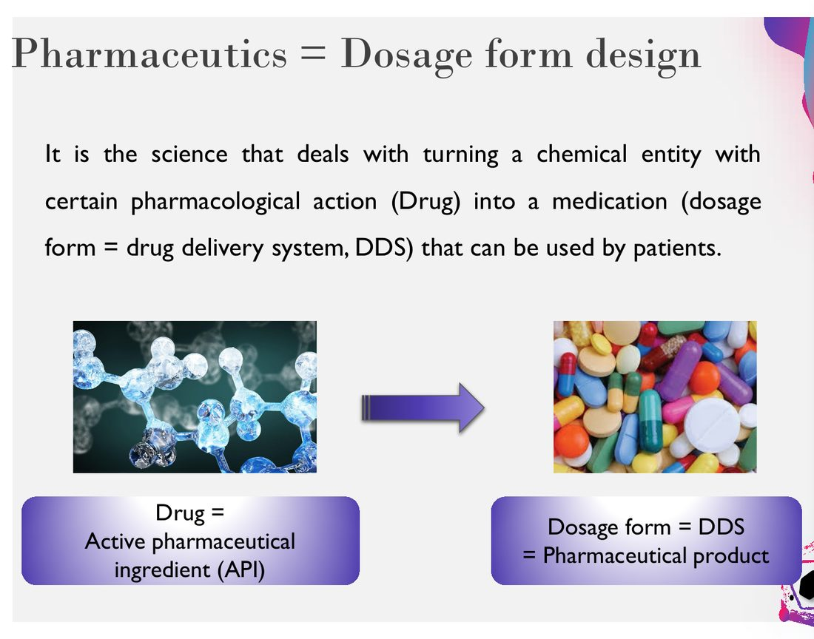
Pharmaceutics is about the “package” that delivers the drug, not the drug's action itself.
Question 2 of 30
“Dosage form”, “drug delivery system (DDS)” and “pharmaceutical product” mean:
A. Only injections
B. Three different stages of manufacture
C. The same thing
D. Only tablets
C. The same thing
Dosage form = DDS = pharmaceutical product.
All three names describe the final medication form.
Question 3 of 30
Which is NOT listed as a source of drugs (APIs)?
A. Plant (natural)
B. Biopharmaceutical
C. Minerals from seawater only
D. Chemical (synthetic)
C. Minerals from seawater only
The lecture lists three sources: chemical, biopharmaceutical and plant (natural).
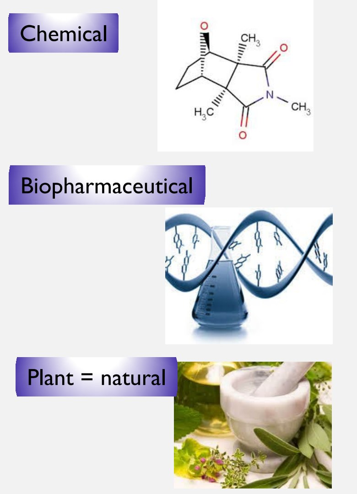
Think of where drugs come from: a lab (chemical), living cells (biopharmaceutical) or plants (natural).
Question 4 of 30
Which is a reason we need a dosage form?
A. To give a precise, reproducible and accurate dose
B. To increase the drug's toxicity
C. To avoid using any excipients
D. To make the drug act everywhere in the body equally
A. To give a precise, reproducible and accurate dose
Reasons: precise, reproducible, accurate dose; drug targeting; palatability (taste); patient compliance.
A tiny amount of powder cannot be measured accurately by a patient — a tablet can.
Question 5 of 30
“Drug targeting” by a dosage form means:
A. Concentrating the drug at the target organ/tissue and avoiding toxicity elsewhere
B. Increasing the dose
C. Destroying the drug before it acts
D. Spreading the drug evenly everywhere
A. Concentrating the drug at the target organ/tissue and avoiding toxicity elsewhere
Drug targeting concentrates drug molecules at the target organ/tissue, avoiding toxicity elsewhere.
Hit the target, spare the rest of the body.
Question 6 of 30
Making a bitter drug taste acceptable (e.g. a flavoured syrup for children) improves:
A. Drug targeting
B. Palatability and patient compliance
C. Bacterial count
D. Sterility
B. Palatability and patient compliance
Palatability (taste) and patient compliance are reasons for designing a dosage form.
If it tastes better, patients actually take it.
Question 7 of 30
Which is NOT a listed characteristic of a dosage form?
A. It can preferentially deliver the drug to a specific part of the body
B. It should be stable
C. It can protect the drug from degradation
D. It must always be sterile
D. It must always be sterile
Characteristics: should be stable; can be sterile (e.g. injections, eye drops); can protect the drug from degradation; can have specific pH, consistency, bacterial count; can preferentially deliver the drug to a specific part of the body. Only some dosage forms must be sterile.
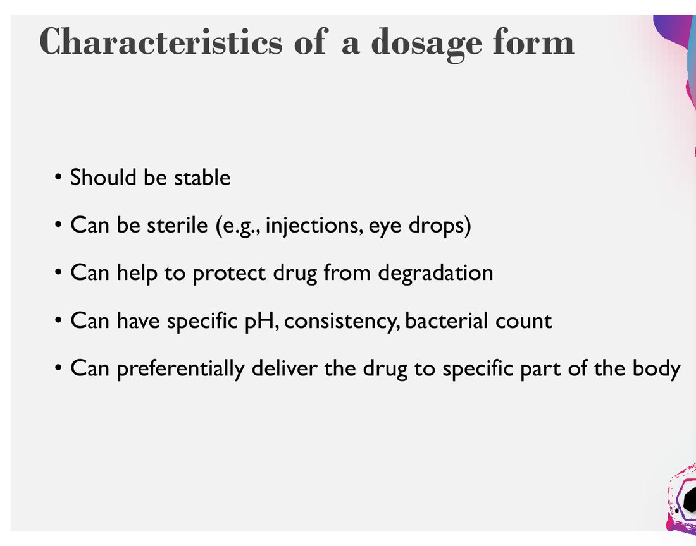
“Can be” sterile — not every dosage form is.
2. Types of Dosage Forms
4 questions
Question 8 of 30
Which is a liquid dosage form?
A. Suppository
B. Suspension
C. Capsule
D. Ointment
B. Suspension
Liquid: solutions, suspensions, emulsions.
Solutions, suspensions, emulsions are all liquids.
Question 9 of 30
Which is a semi-solid dosage form?
A. Granules
B. Transdermal patch
C. Emulsion
D. Suppository
D. Suppository
Semi-solid: creams, ointments, suppositories.
Semi-solid = soft: you can spread it (cream, ointment) or it melts in the body (suppository).
Question 10 of 30
Which is a solid dosage form?
A. Creams
B. Inhalations
C. Granules & pellets
D. Solutions
C. Granules & pellets
Solid: tablets, capsules, granules & pellets.
Solid = dry and keeps its own shape: tablets, capsules, granules.
Question 11 of 30
Inhalations, transdermal patches and buccal products are classified as:
Which is NOT a factor in choosing the suitable dosage form?
A. Drug properties
B. Desired duration of action
C. Intended route of administration
D. The colour of the pharmacy
D. The colour of the pharmacy
The choice depends on: drug properties, intended use, intended route of administration, desired duration of action, disease condition.
Five factors: drug, use, route, duration, disease.
Question 19 of 30
An unconscious patient who cannot swallow needs an injection instead of a tablet. Which factor is this?
A. Disease condition
B. Excipient type
C. Price
D. Drug colour
A. Disease condition
The patient's disease condition affects the choice of dosage form (and route).
The patient's condition rules out swallowing.
Question 20 of 30
Excipients (additives) are:
A. The constituents of a drug product apart from the API
B. Impurities
C. The active drug
D. Only the packaging
A. The constituents of a drug product apart from the API
Excipients or additives are the constituents of a drug product apart from the API.
Everything in the tablet except the drug.
Question 21 of 30
Which is NOT a role of excipients?
A. Enhancing product performance
B. Producing the pharmacological effect of the drug
C. Enabling good formulation
D. Improving patient acceptability and compliance
B. Producing the pharmacological effect of the drug
Roles: enhance product performance; enable good formulation; improve patient acceptability and compliance; produce more efficient and safe medication. The effect comes from the API.
Excipients help the drug; they do not act like the drug.
Question 22 of 30
An ideal excipient should be:
A. Pharmacologically active
B. Pharmacologically inert
C. Reactive with the drug
D. As expensive as possible
B. Pharmacologically inert
Ideal properties: stable & reproducible; no interaction with the drug; pharmacologically inert; desired functionality; cost effective.
Inert = does nothing to the body by itself.
5. Types of Pharmaceutical Products
4 questions
Question 23 of 30
Over-the-counter (OTC) products are drugs that are:
A. Sold in pharmacies and supermarkets without restriction
B. Sold only by a pharmacist without a prescription
C. Narcotics
D. Sold only with a prescription
A. Sold in pharmacies and supermarkets without restriction
OTC: sold in pharmacies and supermarkets without restriction, e.g. analgesics, antihistaminics, antacids, vitamins, diet products.
OTC = you can just pick it off the shelf.
Question 24 of 30
Behind-the-counter products (UK) are:
A. Sold only in pharmacies by a registered pharmacist without a prescription
B. Sold in supermarkets
C. Sold only with a special prescription
D. Narcotics
A. Sold only in pharmacies by a registered pharmacist without a prescription
Behind the counter: sold only in pharmacies by a registered pharmacist without a prescription; considered a category of OTC.
You ask the pharmacist — no prescription needed.
Question 25 of 30
Narcotic drug products:
A. Are sold without restriction
B. Do not need any prescription
C. Are prescription drugs that require a special prescription from certified physicians
D. Are OTC
C. Are prescription drugs that require a special prescription from certified physicians
Narcotic drug products: prescription drugs that require a special prescription from certified physicians.
The strictest category.
Question 26 of 30
Arrange from least to most restricted:
A. Behind the counter → OTC → narcotic → prescription
B. Prescription → OTC → narcotic → behind the counter
C. OTC → behind the counter → prescription → narcotic
D. Narcotic → prescription → OTC → behind the counter
C. OTC → behind the counter → prescription → narcotic
OTC (no restriction) → behind the counter (pharmacist only) → prescription (physician) → narcotic (special prescription, certified physician), based on the definitions.
Each step adds a new requirement.
6. Pharmaceutical Sciences
4 questions
Question 27 of 30
Physical pharmacy is:
A. The study of drug absorption only
B. The study of plant drugs
C. The study of the physical and chemical processes important for formulating the dosage form
D. The study of drug sales
C. The study of the physical and chemical processes important for formulating the dosage form
Physical pharmacy: the study of the physical and chemical processes important for the formulation of the dosage form; it uses physical and chemical principles to predict solubility, stability, compatibility and biological action of drug products.
Physics + chemistry of making the dosage form.
Question 28 of 30
Which topics are examples studied in physical pharmacy?
A. Drug–receptor binding
B. Hospital management
C. Drug prices
D. Change of phases, rheology and surface tension
D. Change of phases, rheology and surface tension
The lecture gives change of phases, rheology and surface tension as examples of physical pharmacy topics.
Physical properties of materials.
Question 29 of 30
Biopharmaceutics investigates:
A. The synthesis of APIs
B. Only the rate of drug metabolism
C. Chemical, physical, physiological, pathological and formulation factors affecting drug absorption, distribution and elimination
D. Drug marketing
C. Chemical, physical, physiological, pathological and formulation factors affecting drug absorption, distribution and elimination
Biopharmaceutics: the field that investigates the chemical, physical, physiological, pathological and formulation factors that can affect drug absorption, distribution and elimination; these determine the in vivo performance of drug products.
Bio + pharmaceutics: how the product behaves inside the body.
Question 30 of 30
Pharmacokinetics studies:
A. The factors in formulation only
B. The colour of tablets
C. Drug–receptor interactions
D. The kinetics (rate and extent) of drug absorption, distribution, metabolism and excretion
D. The kinetics (rate and extent) of drug absorption, distribution, metabolism and excretion
Pharmacokinetics: studying the kinetics (rate and extent) of absorption, distribution, metabolism and excretion (ADME); these processes affect the time course of the drug profile in the body, which determines the time course of the pharmacological effect.
Kinetics = rate. Pharmacokinetics = how fast and how much (ADME).
Lecture 2States of Matter
40 questions
1. States of Matter
5 questions
Question 1 of 40
Movement of particles in a solid is best described as:
A. No movement of any kind
B. Restricted oscillations in a fixed position
C. Moving freely at high speed
D. Moving and sliding past each other
B. Restricted oscillations in a fixed position
Movement: solid = restricted oscillations in a fixed position; liquid = can move and slide past each other; gas = can move freely at high speed.
Solid particles only vibrate in place, like people standing in a crowded line.
Question 2 of 40
A liquid has:
A. A shape that fills the whole container like a gas
B. No regular shape; it takes the shape of the container
C. No volume
D. A fixed shape
B. No regular shape; it takes the shape of the container
Liquid: no regular shape, shape of the container.
Water poured into a glass takes the shape of the glass.
Question 3 of 40
Look at the three containers. Which one represents a gas?
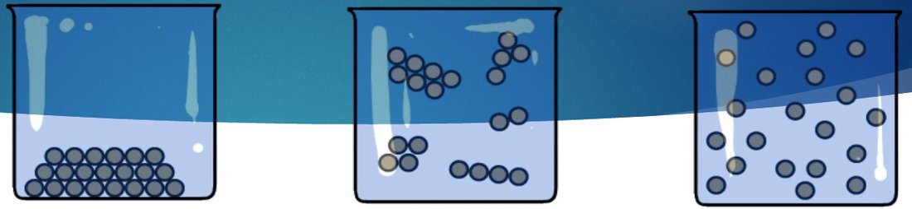
A. The left container: particles resting at the bottom, so they have the most freedom
B. The middle container: particles close together in small groups
C. The left container: particles tightly packed in a regular pattern
D. The right container: particles far apart with no regular arrangement
D. The right container: particles far apart with no regular arrangement
Gas = particles far apart, no regular arrangement, filling the container. The left beaker is the solid, the middle is the liquid.
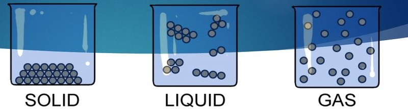
The most spread-out particles belong to the gas.
Question 4 of 40
Arrange the states from the strongest to the weakest intermolecular attraction forces:
A. Solid → gas → liquid
B. Gas → liquid → solid
C. Liquid → solid → gas
D. Solid → liquid → gas
D. Solid → liquid → gas
Solid = very strong bonds, liquid = strong bonds, gas = very weak bonds.
Stronger attraction holds particles tighter, so the solid comes first.
Question 5 of 40
Why can a gas be easily compressed while a solid cannot?
A. Gas particles are fixed in position
B. Gas particles have very strong bonds
C. Gas particles are tightly packed in a regular pattern
D. Gas particles are far apart, so there is empty space to push them closer
D. Gas particles are far apart, so there is empty space to push them closer
Gas particles are far apart with very weak attraction forces → easily compressed. Solid particles are very close together and tightly packed → not easily compressed.
You can only squeeze something if there is space between its particles.
2. The Gaseous State: Ideal Gas Law
4 questions
Question 6 of 40
The ideal gas law for n moles of gas is:
A. P = nRTV
B. PV = nRT
C. PV = RT/n
D. PT = nRV
B. PV = nRT
For n mole of gas: PV = nRT. This equation is known as the ideal gas law.
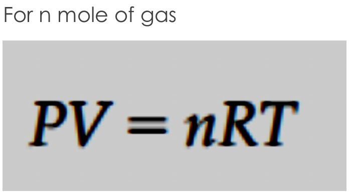
Pressure × volume equals moles × R × temperature.
Question 7 of 40
For an ideal gas, the value of R is:
A. 8.314 J mol K
B. 83.14 J K⁻¹ mol⁻¹
C. 8.314 J K⁻¹ mol⁻¹
D. 0.314 J K⁻¹ mol⁻¹
C. 8.314 J K⁻¹ mol⁻¹
For an ideal gas, R is calculated to be 8.314 J K⁻¹ mol⁻¹.
Remember “8.314” and the units joule per kelvin per mole.
Question 8 of 40
The two main pharmaceutical applications for the ideal gas law given in the lecture are:
A. Viscosity and surface tension
B. Liquefaction of gases and solubility of gases in liquids
C. Boiling and melting of solids
D. Polymorphism and crystal growth
B. Liquefaction of gases and solubility of gases in liquids
Two main pharmaceutical applications for the ideal gas law: 1. liquefaction of gases; 2. solubility of gases in liquids.
Both applications deal with gases: turning them into liquid, or dissolving them in liquid.
Question 9 of 40
0.5 mol of an ideal gas is kept in a 0.0124 m³ container at 25 °C. What is the pressure? (R = 8.314 J K⁻¹ mol⁻¹)
A. ≈ 15.4 Pa
B. ≈ 8.4 × 10³ Pa
C. ≈ 1.0 × 10⁵ Pa
D. ≈ 1.0 × 10³ Pa
C. ≈ 1.0 × 10⁵ Pa
First convert temperature to kelvin: T = 25 + 273.15 = 298.15 K. P = nRT / V = (0.5 × 8.314 × 298.15) / 0.0124 P = 99 952 Pa ≈ 1.0 × 10⁵ Pa. (Using 25 instead of 298.15 gives the wrong value 8.4 × 10³ Pa.)
Temperature in gas law problems must always be in kelvin.
3. Liquefaction of Gases & Pharmaceutical Aerosols
6 questions
Question 10 of 40
Liquefaction of gases is:
A. The change of liquids into the gas state
B. The dissolving of a gas in a liquid
C. The change of a solid directly into a gas
D. The change of gases into the liquid state
D. The change of gases into the liquid state
Liquefaction of gases = change of gases into the liquid state.
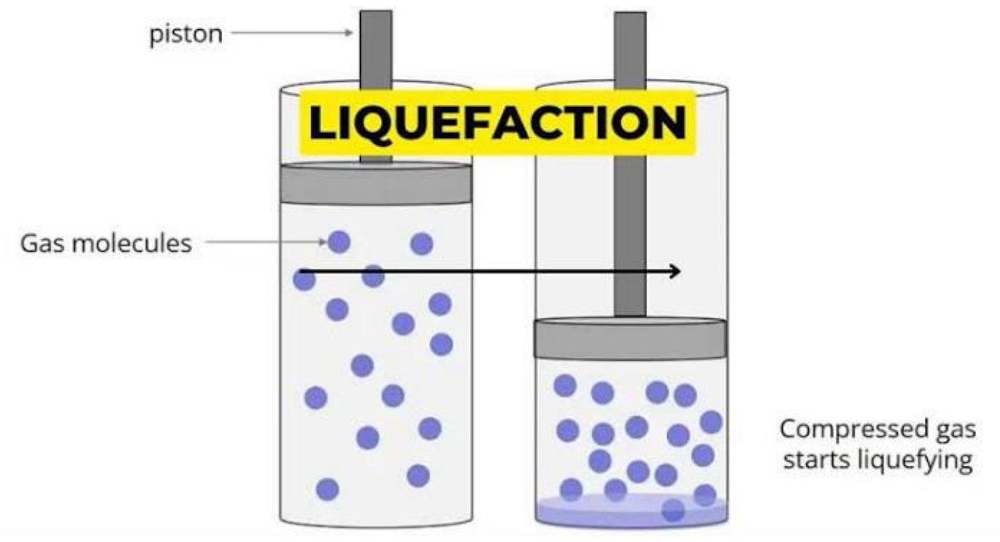
Liquefy = make it liquid.
Question 11 of 40
Liquefaction of gases is an irreversible change of state.
True
False
False
It is a reversible change of state: high pressure → liquid; reduced pressure → gas again.
It can go both ways, like water freezing and melting.
Question 12 of 40
Liquefaction of gases is the basic principle involved in the preparation of:
A. Pharmaceutical aerosols (e.g. inhalation aerosols, topical sprays)
B. Tablets
C. Suppositories
D. Ointments
A. Pharmaceutical aerosols (e.g. inhalation aerosols, topical sprays)
This is the basic principle involved in the preparation of pharmaceutical aerosols (e.g. inhalation aerosols, topical sprays).
Spray cans and inhalers hold a liquefied gas.
Question 13 of 40
A propellant is a material that is:
A. Solid inside the container and liquid outside
B. Liquid under the pressure inside the container but forms a gas under normal atmospheric conditions
C. The active drug in the aerosol
D. Always a gas both inside and outside the container
B. Liquid under the pressure inside the container but forms a gas under normal atmospheric conditions
Aerosols contain a drug dissolved or suspended in a propellant, a material that is liquid under the pressure conditions existing inside the container but that forms a gas under normal atmospheric conditions.
Inside the can it is liquid; once it escapes it turns into gas and carries the drug out.
Question 14 of 40
Why is some of the drug–propellant mixture expelled when the valve of an aerosol is depressed?
A. Because the propellant freezes
B. Because the container is heated
C. Because of the excess pressure inside the container
D. Because the drug is heavier than air
C. Because of the excess pressure inside the container
The container is so designed that, by depressing a valve, some of the drug–propellant mixture is expelled owing to the excess pressure inside the container.
It works like opening a shaken soda bottle: the pressure pushes the contents out.
Question 15 of 40
Two ways to change a gas into a liquid, according to the lecture, are:
A. Heating the gas and reducing pressure
B. Adding water and stirring
C. Reducing pressure and opening the container
D. Cooling the gas and applying pressure
D. Cooling the gas and applying pressure
Cooling reduces kinetic energy and molecular velocity; applying pressure brings molecules closer → liquid state.
Slow them down and push them together.
4. Solubility of Gases in Liquids: Henry’s Law
4 questions
Question 16 of 40
Henry’s law states that at a constant temperature, the amount of a given gas that dissolves in a given type and volume of liquid is:
A. Inversely proportional to the partial pressure of that gas
B. Directly proportional to the partial pressure of that gas in equilibrium with that liquid
C. Independent of pressure
D. Directly proportional to the temperature
B. Directly proportional to the partial pressure of that gas in equilibrium with that liquid
Henry’s law: “at a constant temperature, the amount of a given gas that dissolves in a given type and volume of liquid is directly proportional to the partial pressure of that gas in equilibrium with that liquid.”
More gas pressure on top → more gas pushed into the liquid.
Question 17 of 40
The figure shows the same gas–liquid system at pressures P₁ and P₂ (P₂ > P₁). Which statement is correct?
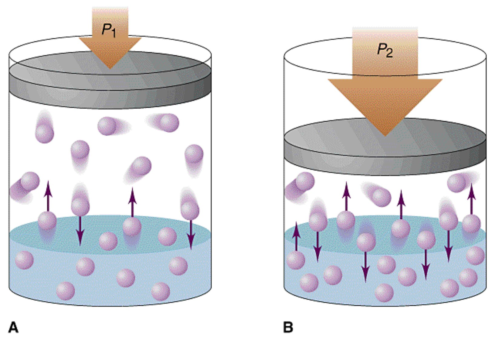
A. Both containers have the same amount of dissolved gas
B. More gas is dissolved in container A (lower pressure P₁)
C. No gas dissolves at the higher pressure
D. More gas is dissolved in the liquid in container B (higher pressure P₂)
D. More gas is dissolved in the liquid in container B (higher pressure P₂)
According to Henry’s law, the amount of dissolved gas is directly proportional to the partial pressure of the gas. Higher pressure P₂ (container B) → more gas molecules move into the liquid phase.
The bigger arrow pushes more balls into the water.
Question 18 of 40
Which examples are given as applications of the solubility of gases in liquids?
A. Diamond and graphite
B. Cacao butter and chloramphenicol
C. HCl gas in water and carbonated beverages
D. Aerosol sprays and suppositories
C. HCl gas in water and carbonated beverages
Solubility of gases in liquids: applications — HCl gas in water and carbonated beverages. The figure shows the first example: HCl gas dissolving in water (it forms H₃O⁺ and Cl⁻ ions).
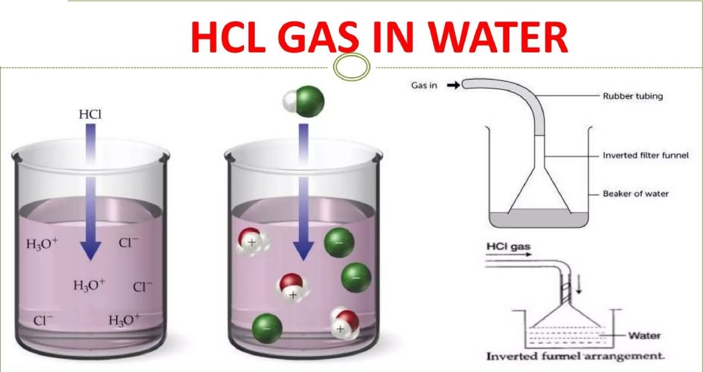
Fizzy drinks have CO₂ dissolved under pressure.
Question 19 of 40
At constant temperature, 0.034 mol of CO₂ dissolves in 1 L of water when the CO₂ partial pressure is 1 atm. According to Henry’s law, how much dissolves at 2.5 atm?
Directly proportional: 2.5 times the pressure gives 2.5 times the gas.
5. The Liquid State: Vapor Pressure & Boiling Point
9 questions
Question 20 of 40
When a liquid is placed in an evacuated container at constant temperature, which molecules break away from the surface and evaporate?
A. The molecules with the highest energies
B. No molecules can leave the liquid
C. The molecules with the lowest energies
D. Only the molecules at the bottom of the container
A. The molecules with the highest energies
The molecules with the highest energies break away from the surface of the liquid and pass into the gaseous state (evaporate), while other molecules return from the gaseous to the liquid state (condense).
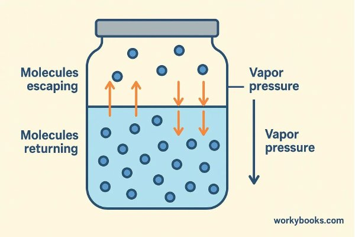
Only the fastest molecules have enough energy to jump out.
Question 21 of 40
When the rate of condensation equals the rate of vaporization at a definite temperature:
A. The vapor becomes saturated and a dynamic equilibrium is established
B. Evaporation stops completely
C. The liquid starts to boil
D. All the liquid evaporates
A. The vapor becomes saturated and a dynamic equilibrium is established
When the rate of condensation equals the rate of vaporization at a definite temperature, the vapor becomes saturated and a dynamic equilibrium is established. This pressure is then known as the equilibrium vapor pressure.
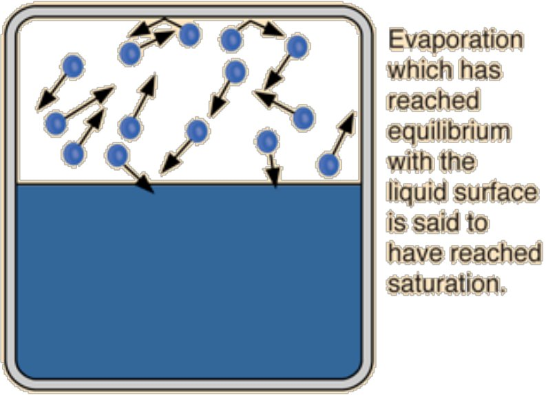
“Dynamic” means molecules still leave and return — but at equal rates.
Question 22 of 40
The vapor pressure of a liquid is:
A. The atmospheric pressure at sea level
B. The pressure inside the liquid at the bottom of the container
C. The pressure exerted by the vapor molecules over the surface of a liquid at equilibrium at a certain temperature
D. The pressure needed to compress a liquid
C. The pressure exerted by the vapor molecules over the surface of a liquid at equilibrium at a certain temperature
The pressure exerted by the vapor molecules over the surface of a liquid at equilibrium at a certain temperature is called the vapor pressure of the liquid.
It is the “push” of the escaped molecules above the liquid.
Question 23 of 40
Why does vapor pressure increase as the temperature rises?
A. More molecules approach the velocity necessary to escape the liquid phase and pass into the gaseous state
B. The molecules become heavier
C. Fewer molecules can leave the liquid surface
D. The intermolecular forces become stronger
A. More molecules approach the velocity necessary to escape the liquid phase and pass into the gaseous state
As the temperature of the liquid is elevated, more molecules approach the velocity necessary to escape the liquid phase and pass into the gaseous state.
Heat gives more molecules enough speed to jump out.
Question 24 of 40
Why does water have a relatively low vapor pressure?
A. Water molecules have no attraction to each other
B. It takes a lot of energy to break the hydrogen bonds so molecules can enter the gas phase
C. Water molecules are too large to evaporate
D. Water is a gas at room temperature
B. It takes a lot of energy to break the hydrogen bonds so molecules can enter the gas phase
Water has a relatively low vapor pressure because it takes a lot of energy to break the hydrogen bonds so that molecules enter the gas phase. (Note: the lecture calls water “non-volatile”; water does evaporate, but it is much less volatile than acetone, alcohol or benzene.)
Hydrogen bonds act like hands holding the water molecules together.
Question 25 of 40
The boiling point is defined as:
A. The temperature at which the vapor pressure of the liquid equals the external or atmospheric pressure
B. The temperature at which evaporation starts
C. The pressure at which a gas turns into a liquid
D. The temperature at which the liquid and solid exist in equilibrium
A. The temperature at which the vapor pressure of the liquid equals the external or atmospheric pressure
The temperature at which the vapor pressure of the liquid equals the external or atmospheric pressure is known as the boiling point.
Boiling point: vapor pressure = air pressure.
Question 26 of 40
The boiling point of a compound provides a rough indication of:
A. The compressibility of the gas
B. The molecular shape only
C. The magnitude of the attractive forces
D. The colour of the compound
C. The magnitude of the attractive forces
The boiling point of a compound provides a rough indication of the magnitude of the attractive forces.
Stronger attraction → more heat needed → higher boiling point.
Question 27 of 40
Using the graph, which liquid has the lowest boiling point at 760 mm Hg?
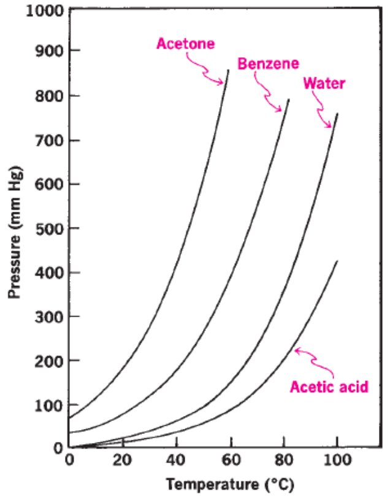
A. Acetic acid
B. Acetone
C. Benzene
D. Water
B. Acetone
Boiling point = temperature at which vapor pressure reaches atmospheric pressure (760 mm Hg). Acetone reaches 760 mm Hg first (≈ 55–60 °C), then benzene (≈ 80 °C), then water (100 °C); acetic acid has not reached it by 100 °C.
The most volatile liquid boils at the lowest temperature.
Question 28 of 40
Liquid X has a higher vapor pressure than liquid Y at 25 °C. Which statement is correct?
A. X has a higher boiling point than Y
B. X is more volatile and has weaker intermolecular forces than Y
C. Y evaporates faster than X
D. X has stronger intermolecular forces than Y
B. X is more volatile and has weaker intermolecular forces than Y
6. The Solid State: Crystalline & Amorphous Solids
5 questions
Question 29 of 40
Amorphous solids:
A. Are always ionic crystals
B. Have a regular arrangement and a definite melting point
C. Have a higher melting point than any crystal
D. Do not have much order in their structures and do not have a definite melting point
D. Do not have much order in their structures and do not have a definite melting point
Amorphous solids do not have much order in their structures and do not have a definite melting point.
Glass softens gradually when heated instead of melting at one exact temperature.
Question 30 of 40
Quartz and glass are both SiO₂. Which statement is correct?
A. Both are crystalline
B. Both are amorphous
C. Quartz is crystalline SiO₂ and glass is amorphous SiO₂
D. Quartz is amorphous and glass is crystalline
C. Quartz is crystalline SiO₂ and glass is amorphous SiO₂
The figure shows crystalline SiO₂ (quartz) with a regular arrangement and amorphous SiO₂ (glass) with little order.
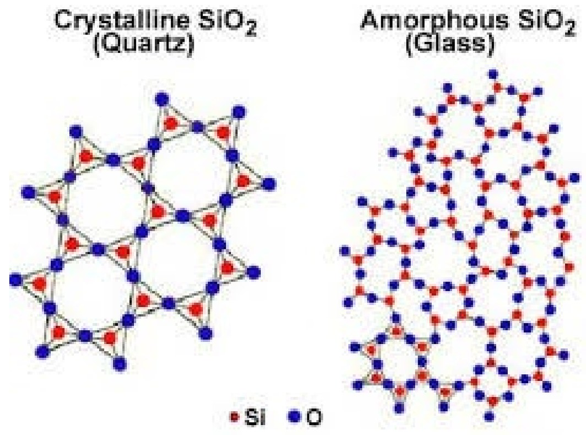
Same chemical, different arrangement.
Question 31 of 40
The melting point of a pure crystalline solid is defined as:
A. The temperature at which the vapor pressure equals atmospheric pressure
B. The temperature at which the crystal changes to another polymorph
C. The temperature at which the pure liquid and solid exist in equilibrium
D. The temperature at which the solid becomes a gas
C. The temperature at which the pure liquid and solid exist in equilibrium
Melting point of a pure crystalline solid = the temperature at which the pure liquid and solid exist in equilibrium. It is also the freezing point of a liquid.
At 0 °C ice and water can exist together.
Question 32 of 40
Ionic crystals such as sodium chloride are held together by:
A. Hydrogen bonds only
B. Covalent bonds between carbon atoms
C. Electrostatic attraction between opposite charges
D. Weak forces between molecules only
C. Electrostatic attraction between opposite charges
Ions are held together by electrostatic attraction between opposite charges. Crystals are hard, brittle and have a high melting point, e.g. sodium chloride.
Na⁺ and Cl⁻ attract each other like magnets.
Question 33 of 40
Which crystal type is expected to have the lowest melting point?
A. An atomic crystal such as diamond
B. An ionic crystal such as sodium chloride
C. All have the same melting point
D. A molecular crystal such as naphthalene
D. A molecular crystal such as naphthalene
Molecular crystals can be soft and have lower MP; ionic crystals have high MP; atomic (covalent) crystals are very strong.
Weaker forces between particles → lower melting point.
7. Polymorphism
7 questions
Question 34 of 40
When polymorphism occurs:
A. The chemical formula of the substance changes
B. The substance becomes a gas
C. The molecules arrange themselves in different ways in the crystal
D. The substance becomes amorphous
C. The molecules arrange themselves in different ways in the crystal
When polymorphism occurs, the molecules arrange themselves in different ways in the crystal.
Same bricks, different building.
Question 35 of 40
At ambient temperature and pressure, over a very long time diamond:
A. Quickly melts into a liquid
B. Very slowly converts into the more stable graphite polymorph
C. Changes into sulfur
D. Stays unchanged forever
B. Very slowly converts into the more stable graphite polymorph
The imperfections in diamonds continue to occur with time very slowly at the ambient temperature and pressure, converting the diamond into the more stable graphite polymorph.
Metastable forms slowly change to the stable form.
Question 36 of 40
Theobroma oil is capable of existing in how many polymorphic forms?
A. 4 – 6
B. 2
C. 10 – 12
D. Only 1
A. 4 – 6
Theobroma oil is capable of existing in 4 – 6 polymorphic forms.
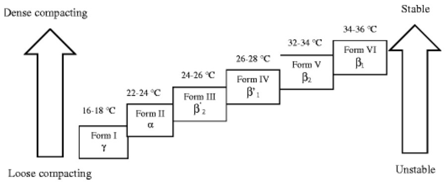
The diagram shows six forms, Form I to Form VI.
Question 37 of 40
During preparation of cacao butter suppositories, melting at a temperature above 35 °C might:
A. Destroy the nuclei of the stable beta polymorph
B. Convert the fat into graphite
C. Have no effect on the polymorphs
D. Make the suppository more stable
A. Destroy the nuclei of the stable beta polymorph
Polymorphic changes dictate special precautions during preparation of cacao butter suppositories. Melting at temperature > 35 °C might destroy the nuclei of the beta stable polymorph.
Overheating destroys the “seeds” of the good stable crystals.
Question 38 of 40
In the cacao butter diagram, the form with the highest melting point (34–36 °C) is the:
A. Most stable form (Form VI, β₁)
B. α form (Form II)
C. Form with the loosest compacting
D. Most unstable form (Form I, γ)
A. Most stable form (Form VI, β₁)
The forms are arranged from unstable/loose compacting (Form I, γ, 16–18 °C) up to stable/dense compacting (Form VI, β₁, 34–36 °C).
Top of the staircase = most stable and most densely packed.
Question 39 of 40
Why are polymorphic changes very important in pharmaceutical processes?
A. Polymorphs always have the same stability
B. Polymorphs have different chemical formulas
C. Polymorphs cannot change from one form to another
D. Polymorphs show different melting points and solubilities even though they are chemically identical
D. Polymorphs show different melting points and solubilities even though they are chemically identical
Polymorphs exhibit different melting points and solubilities even though they are chemically identical. They have different stabilities and may, at a certain temperature or after some time, convert from the metastable form to the stable form.
Same molecule, different packing → different behaviour.
Question 40 of 40
A drug suspension is made with a metastable polymorph. During storage, the most likely change is:
A. Conversion to the stable form, possibly with crystal growth and changed solubility
B. No change can ever happen
C. Conversion into an amorphous gas
D. The drug becomes chemically different
A. Conversion to the stable form, possibly with crystal growth and changed solubility
Polymorphs may convert from the metastable to the stable form at a certain temperature or after some time; formulation problems include crystal growth in suspensions and differences in solubility and bioavailability.
Metastable means “stable for now” — it will change eventually.
Lecture 3Solubility I
50 questions
1. Solutions & Solubility
6 questions
Question 1 of 50
A true solution is best described as:
A. A two-phase system in which solid particles are suspended in a liquid
B. A mixture in which droplets of oil are dispersed in water
C. A homogeneous, single-phase system in which one or more solutes are dispersed molecularly or ionically throughout a solvent
D. A heterogeneous system that separates on standing
C. A homogeneous, single-phase system in which one or more solutes are dispersed molecularly or ionically throughout a solvent
A true solution: a homogeneous, single-phase system (monophase) in which one or more solutes are dispersed molecularly or ionically throughout a solvent.
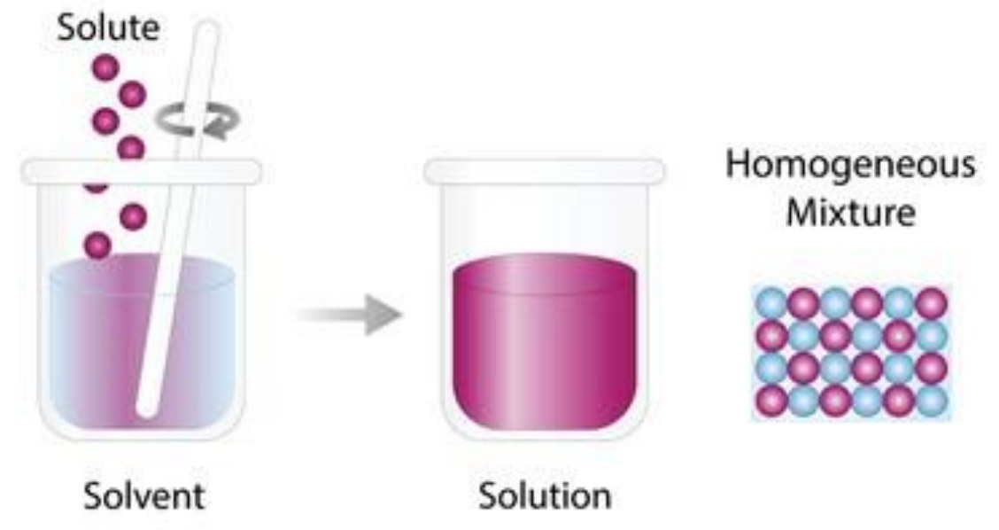
In a true solution you cannot see separate particles; it looks like one uniform phase.
Question 2 of 50
Solubility of a substance is defined as:
A. The maximum amount of a substance that can dissolve and remain dissolved in a specified solvent under defined conditions at equilibrium
B. The amount of solvent needed to wet a powder
C. Any amount of a substance that dissolves in water at room temperature
D. The speed at which a substance dissolves
A. The maximum amount of a substance that can dissolve and remain dissolved in a specified solvent under defined conditions at equilibrium
Solubility of a substance: the maximum amount of a substance that can dissolve and remain dissolved in a specified solvent under defined conditions at equilibrium.
Solubility is the “full capacity” of the solvent for that solute.
Question 3 of 50
Equilibrium in a saturated solution is the state in which:
A. The solute has fully reacted with the solvent
B. Dissolving stops completely
C. The rate of dissolving equals the rate of crystallisation, so there is no net change in the amount dissolved
D. Crystallisation stops completely
C. The rate of dissolving equals the rate of crystallisation, so there is no net change in the amount dissolved
Equilibrium: the state when the rate of dissolving equals the rate of crystallisation → no net change occurs in the amount dissolved (lowest energy state), e.g. CaF₂(s) ⇌ Ca²⁺(aq) + 2F⁻(aq).
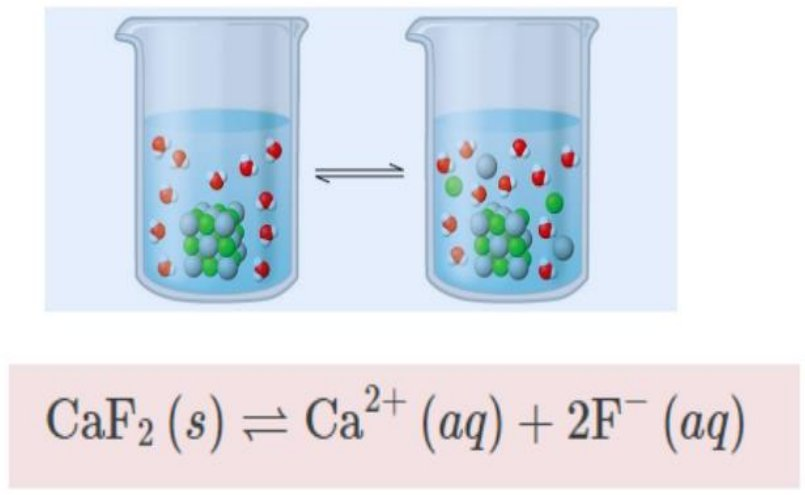
Molecules keep leaving and returning to the solid at the same rate, so the amount dissolved stays constant.
Question 4 of 50
Which statement correctly distinguishes solubility from dissolution rate?
A. Solubility is a kinetic process; dissolution rate is a thermodynamic property
B. Solubility is a thermodynamic property (capacity); dissolution rate is a kinetic process (speed)
C. Both describe the maximum amount dissolved
D. Both describe how quickly a solute enters solution
B. Solubility is a thermodynamic property (capacity); dissolution rate is a kinetic process (speed)
Solubility (capacity): maximum amount dissolved at equilibrium; a thermodynamic property; must be reported with conditions (temperature, pH, solvent and solid form). Dissolution rate (speed): how quickly solute enters solution; a kinetic process; influenced by surface area, agitation and diffusion conditions.
Solubility = how much; dissolution rate = how fast.
Question 5 of 50
“A drug generally must be in solution before it can cross biological membranes.” This explains why solubility matters for:
A. Bioavailability
B. Administration
C. Stability
D. Formulation feasibility
A. Bioavailability
Why solubility matters: formulation feasibility (solution vs suspension, dose volume, excipient needs); stability (dissolved drug may degrade faster; precipitation can change product performance); administration (reconstitution, IV compatibility, precipitation risk); bioavailability (drug must be in solution to cross membranes); clinical performance (onset, food or pH effects, safe administration).
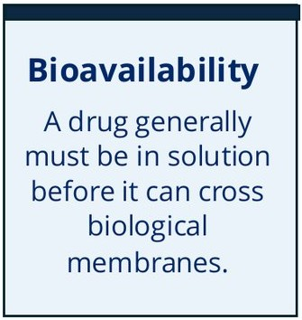
Undissolved drug cannot be absorbed — it must dissolve first.
Question 6 of 50
A powder for oral suspension dissolves much faster when shaken vigorously, but the final amount dissolved at equilibrium is the same. Shaking has changed the:
A. USP solubility term
B. Equilibrium solubility
C. Dissolution rate
D. Mole fraction at saturation
C. Dissolution rate
Agitation is a dissolution-rate factor (kinetic); it does not change the maximum amount dissolved at equilibrium (solubility).
Shaking makes it faster, not more.
2. Saturation States & Determination of Solubility
4 questions
Question 7 of 50
A supersaturated solution is:
A. Below the solubility limit and stable
B. Exactly at the equilibrium solubility
C. A solution that can dissolve unlimited solute
D. Above the equilibrium solubility; metastable and may crystallize
D. Above the equilibrium solubility; metastable and may crystallize
Supersaturated: concentration is above the equilibrium solubility; the system is metastable and may crystallize.
It holds more than it “should”, so a small disturbance can make crystals appear.
Question 8 of 50
Arrange the saturation states in order of increasing concentration:
A. Supersaturated → saturated → unsaturated
B. Unsaturated → saturated → supersaturated
C. Saturated → unsaturated → supersaturated
D. Unsaturated → supersaturated → saturated
B. Unsaturated → saturated → supersaturated
The arrow in the figure shows increasing concentration from unsaturated (below the limit) to saturated (at the limit) to supersaturated (above the limit).
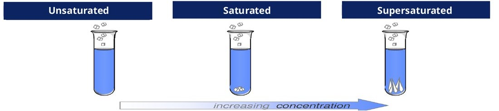
Below the limit → at the limit → above the limit.
Question 9 of 50
To determine solubility experimentally, the first step is to:
A. Filter the solvent before adding the solid
B. Dissolve a small, weighed amount of solid completely
C. Add excess solid to the solvent in a stoppered conical flask and shake for a specified time at a certain temperature
D. Heat the solvent to boiling
C. Add excess solid to the solvent in a stoppered conical flask and shake for a specified time at a certain temperature
Determination of solubility: a saturated solution is prepared and then the amount dissolved is measured. (1) In a stoppered conical flask, add excess solid to the solvent and shake for a specified period of time at a certain temperature. (2) Leave for equilibration for another 24 h at the same temperature. (3) Filter and quantify the dissolved drug using a validated analytical method and calculate solubility.
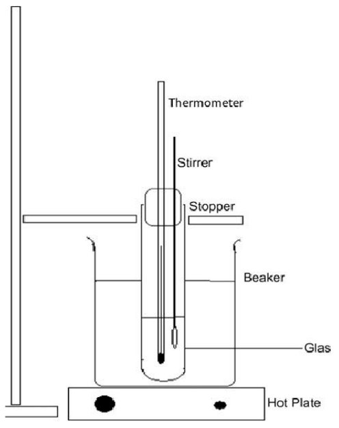
Excess solid guarantees the solution becomes saturated.
Question 10 of 50
After shaking, the flask is left for equilibration for another:
A. 1 week at room temperature with the stopper removed
B. 1 min at a higher temperature
C. 24 h at a lower temperature
D. 24 h at the same temperature
D. 24 h at the same temperature
Step 2: leave for equilibration for another 24 h at the same temperature.
Waiting at constant temperature lets the system reach true equilibrium.
3. Qualitative Solubility Expressions (USP)
4 questions
Question 11 of 50
“Freely soluble” corresponds to:
A. 30–100 parts of solvent
B. Less than 1 part of solvent
C. 10–30 parts of solvent
D. 1–10 parts of solvent
D. 1–10 parts of solvent
Freely soluble: 1 – 10 parts.
Freely = easily, but not as easily as “very soluble”.
Question 12 of 50
1 g of a drug dissolves in 25 mL of water (treat 1 mL water ≈ 1 g). The USP term is:
A. Soluble
B. Freely soluble
C. Slightly soluble
D. Sparingly soluble
A. Soluble
Parts of solvent = 25 mL ≈ 25 g per 1 g of solute → 25 parts → falls in 10–30 → soluble.
Find which USP range the number 25 falls into.
Question 13 of 50
1 g of a drug needs 500 mL of water to dissolve. The USP term is:
A. Sparingly soluble
B. Slightly soluble
C. Very slightly soluble
D. Practically insoluble
B. Slightly soluble
Parts of solvent = 500 per 1 part solute → falls in 100–1000 → slightly soluble.
500 is between 100 and 1000.
Question 14 of 50
1 g of a drug requires 5000 mL of water. The USP term is:
A. Sparingly soluble
B. Practically insoluble
C. Slightly soluble
D. Very slightly soluble
D. Very slightly soluble
5000 parts → falls in 1000–10,000 → very slightly soluble.
Molality (m) = gram molecular weight (moles) of solute per kg solvent = n solute / mass solvent in kg.
Molality → kilograms of solvent (not solution).
Question 16 of 50
Lecture example: 317.1 g NaCl (MW 58.45) is dissolved in enough water to make 1000 mL solution at 25 °C (density 1.198 g/mL). What is the molarity?
A. 317.1 M
B. 5.425 M
C. 6.16 M
D. 0.0999 M
B. 5.425 M
n NaCl = g ÷ MW = 317.1 g ÷ 58.45 g/mol = 5.425 mol Molarity = n ÷ V solution (L) = 5.425 mol ÷ 1 L = 5.425 M
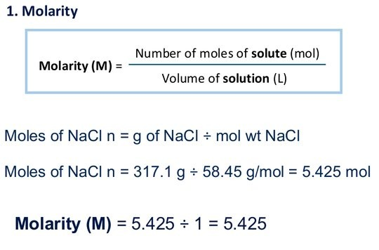
Molarity uses the volume of the whole solution, here exactly 1 L.
Question 17 of 50
Same NaCl example (317.1 g NaCl, 1000 mL solution, density 1.198 g/mL, MW 58.45). What is the molality?
A. 0.0999 m
B. 5.425 m
C. 4.53 m
D. 6.16 m
D. 6.16 m
n NaCl = 317.1 ÷ 58.45 = 5.425 mol Mass of solution = volume × density = 1000 mL × 1.198 g/mL = 1198 g Mass of solvent = 1198 − 317.1 = 880.9 g = 0.8809 kg Molality = 5.425 ÷ 0.8809 = 6.16 m
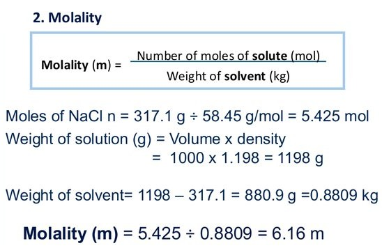
For molality you must find the mass of the solvent alone, so subtract the solute from the solution mass.
Question 18 of 50
In the NaCl example, the mole fraction of water is approximately:
Divide by the total solution volume (200 mL), not by the water added.
5. What Controls Solubility?
4 questions
Question 22 of 50
Dissolution is favoured when:
A. The solute has a very strong crystal lattice
B. Solute–solute interactions are much stronger than solute–solvent interactions
C. New solute–solvent interactions sufficiently compensate for disrupting the original solute–solute and solvent–solvent interactions
D. Solvent–solvent interactions cannot be broken
C. New solute–solvent interactions sufficiently compensate for disrupting the original solute–solute and solvent–solvent interactions
Dissolution is favoured when the new solute–solvent interactions sufficiently compensate for disrupting the original solute–solute and solvent–solvent interactions.
The new bonds must “pay back” the energy used to break the old ones.
Question 23 of 50
Cohesion refers to:
A. The speed of dissolution
B. Attraction forces between similar molecules
C. Attraction forces between different molecules
D. Repulsion between ions
B. Attraction forces between similar molecules
Cohesion: attraction forces between similar molecules. Adhesion: attraction forces between different molecules.
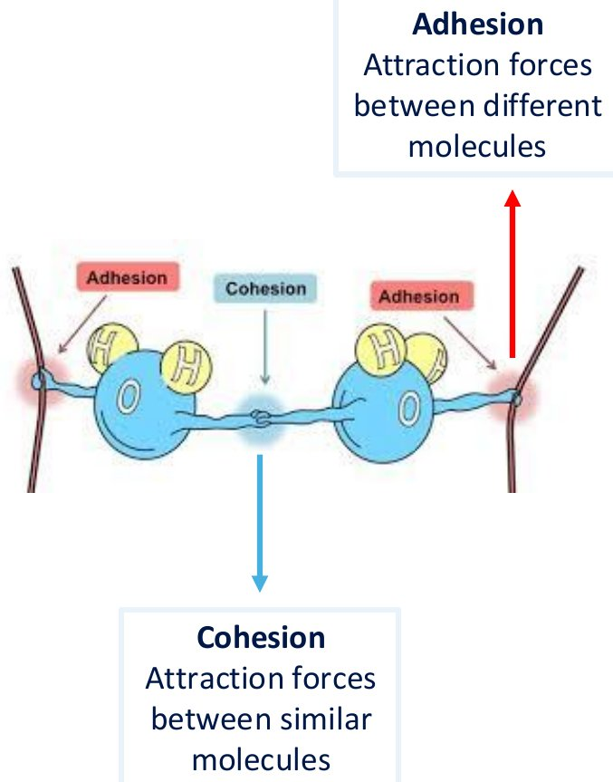
Co-hesion = same kind sticking together (e.g. water to water).
Question 24 of 50
Which is the correct grouping of the factors affecting solubility?
A. Solute-related factors, solvent-related factors and system conditions
B. Temperature, colour and taste
C. Solute-related factors, packaging factors and patient factors
D. Dissolution rate, agitation and particle size only
A. Solute-related factors, solvent-related factors and system conditions
Factors affecting solubility: solute-related factors (molecular structure; solid state and particle size), solvent-related factors (solvent polarity; solvent composition) and system conditions (temperature, pH, pressure).
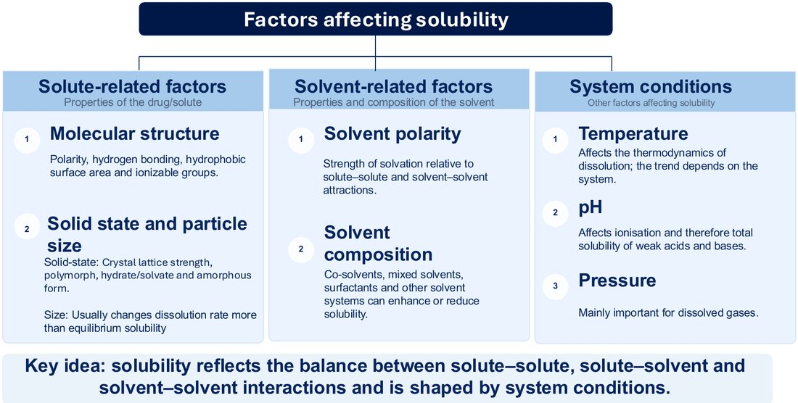
Think: the drug, the liquid, and the surroundings.
Question 25 of 50
According to the lecture, particle size usually changes ____ more than equilibrium solubility.
A. Melting point
B. Dielectric constant
C. Dissolution rate
D. pKa
C. Dissolution rate
Size: usually changes dissolution rate more than equilibrium solubility.
Smaller particles dissolve faster, but the maximum amount dissolved barely changes.
6. Solute-Related Factors
7 questions
Question 26 of 50
In the fatty acid series octanoic, capric, lauric, myristic and oleic acid, which has the highest aqueous solubility?
A. Capric acid
B. Oleic acid
C. Octanoic acid
D. Myristic acid
C. Octanoic acid
Octanoic acid has the shortest carbon chain in the series (C8), so it is the least hydrophobic and the most water-soluble; solubility decreases down the series as chain length increases.
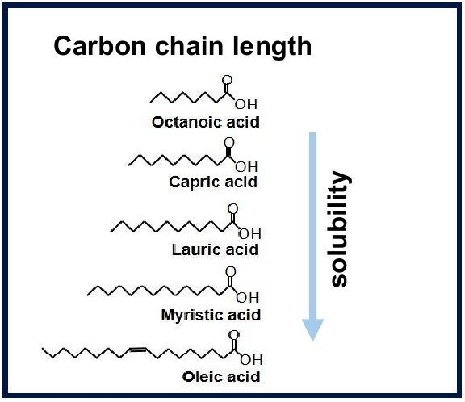
Shortest chain = most water-soluble.
Question 27 of 50
Increased branching of hydrophobic groups:
A. Has no effect on molecular packing
B. Always decreases aqueous solubility
C. Increases the crystal lattice strength in all cases
D. Can alter molecular packing and may increase aqueous solubility compared with the straight-chain compound
D. Can alter molecular packing and may increase aqueous solubility compared with the straight-chain compound
Branching of hydrophobic groups: increased branching can alter molecular packing and may increase aqueous solubility compared with the corresponding straight-chain compound. (In the figure, people standing straight (like straight chains) pack closely together, while people with their arms stretched out (like branches) cannot pack closely.)
Branched molecules cannot pack tightly, so they separate from each other more easily.
Question 28 of 50
Which substituent group is classified as hydrophobic?
A. –Cl
B. –CHO
C. –NH₂
D. –OH
A. –Cl
Hydrophobic: –CH₃, –CH₂–, –Cl, –Br, –F, –N(CH₃)₂, –SCH₃, –OCH₂CH₃. –OH is very hydrophilic; –NH₂ and –CHO are hydrophilic.
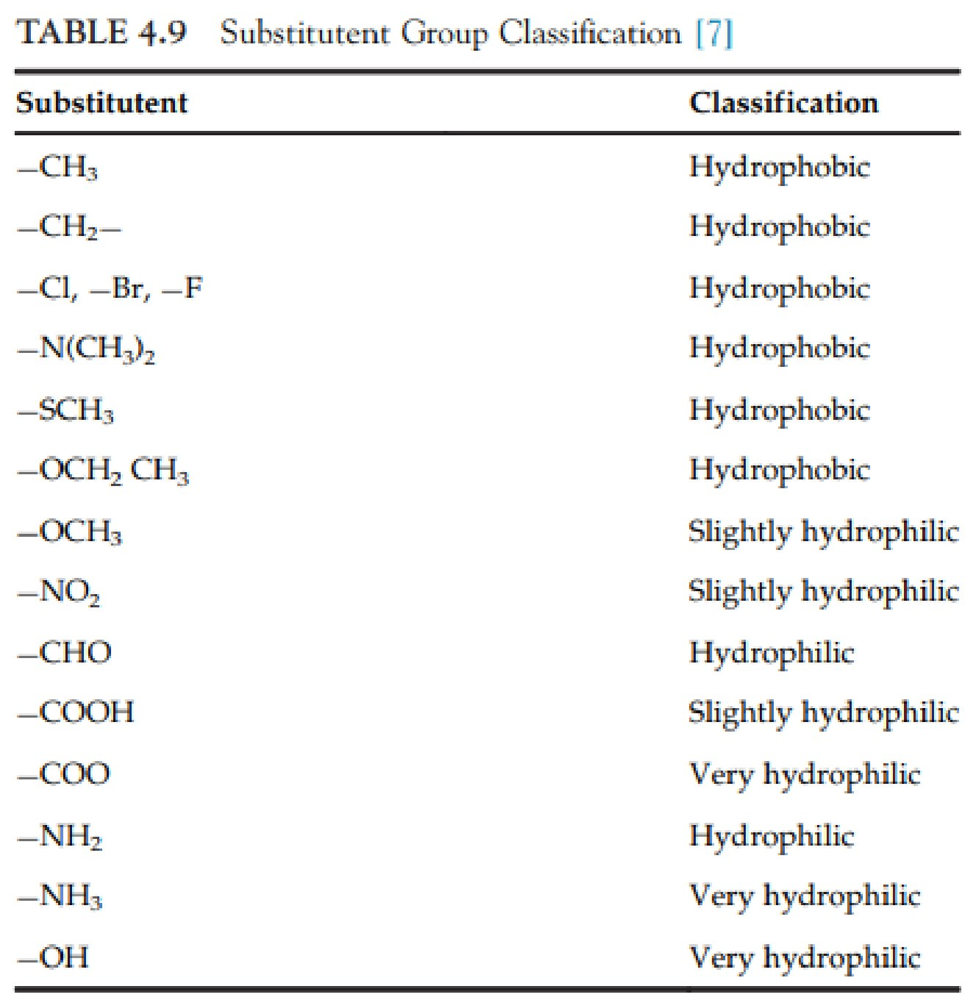
Halogens and alkyl groups are “oily” groups.
Question 29 of 50
Which substituent is classified as slightly hydrophilic?
A. –NH₂
B. –N(CH₃)₂
C. –Br
D. –NO₂
D. –NO₂
Slightly hydrophilic: –OCH₃, –NO₂ and –COOH. –NH₂ is hydrophilic; –Br and –N(CH₃)₂ are hydrophobic.
Slightly hydrophilic groups are only weakly polar.
Question 30 of 50
Using the table of sulfonamide derivatives below, what relationship is seen between melting point and aqueous solubility?
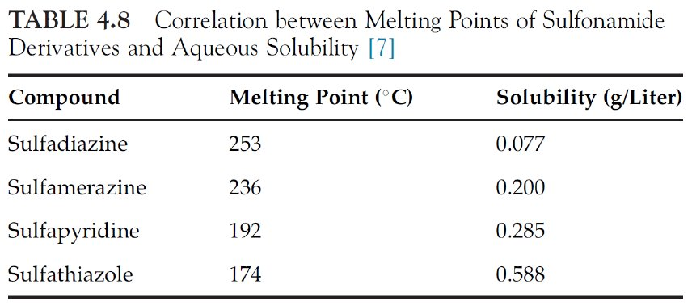
A. As melting point increases, aqueous solubility increases
B. Melting point and solubility are equal
C. As melting point increases, aqueous solubility decreases
D. There is no relationship
C. As melting point increases, aqueous solubility decreases
Sulfadiazine (m.p. 253 °C) has the lowest solubility (0.077 g/L), and sulfathiazole (m.p. 174 °C) has the highest (0.588 g/L): higher melting point → stronger lattice → lower solubility.
High melting point is a sign of a strong crystal, which dissolves less.
Question 31 of 50
Compared with a crystalline solid, an amorphous solid has molecules that are:
A. Always gases
B. Arranged in a highly ordered, repeating lattice
C. Bound more strongly than in any crystal
D. Arranged randomly without an ordered lattice, so it is generally easier to dissolve
D. Arranged randomly without an ordered lattice, so it is generally easier to dissolve
The figure shows amorphous solids with a random, disordered network and crystalline solids with an ordered, repeating lattice. Since a stronger, more ordered crystal lattice generally lowers solubility, the less ordered amorphous form is generally easier to dissolve.
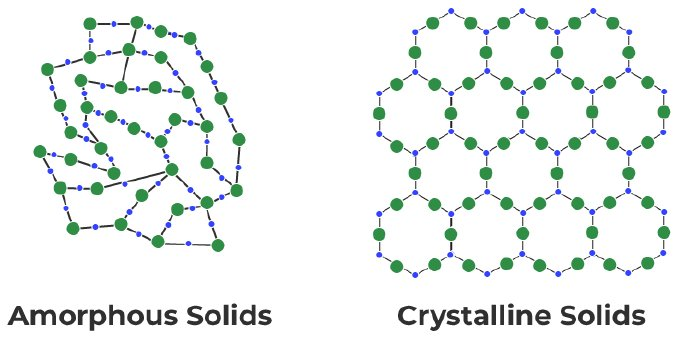
No strong ordered lattice to break → easier to dissolve.
Question 32 of 50
Replacing an –OH group on a drug with a –CH₃ group would most likely:
A. Decrease aqueous solubility
B. Make the drug very hydrophilic
C. Have no possible effect
D. Increase aqueous solubility
A. Decrease aqueous solubility
–OH is very hydrophilic while –CH₃ is hydrophobic (substituent classification), so the change makes the molecule less water-loving.
You swap a water-loving group for an oily one.
7. Solvent-Related Factors
6 questions
Question 33 of 50
The dielectric constant (ε) of a solvent is:
A. A quantitative measure of polarity (ability to separate charges)
B. The number of hydrogen atoms in the solvent
C. A measure of the solvent's boiling point
D. A measure of the solvent's density
A. A quantitative measure of polarity (ability to separate charges)
Dielectric constant (ε): a quantitative measure of polarity. ↑ Dielectric constant = ↑ ability to separate charges = ↑ polarity.
High ε = strongly polar solvent that can pull ions apart.
Question 34 of 50
Sugars and tannins dissolve readily in solvents with ε about:
A. 0 (mineral oil)
B. 50 (glycols)
C. 5 (hexane)
D. 80 (water) only
B. 50 (glycols)
Glycols (ε ≈ 50) → sugars, tannins. Water (80) → inorganic and organic salts. Alcohols (30) → castor oil, waxes. ε 20 → resins, volatile oils, weak electrolytes. ε 5 → fixed oils, fats, petrolatum, paraffin. (Note: the table writes “Caster oil”; the correct spelling is castor oil.)
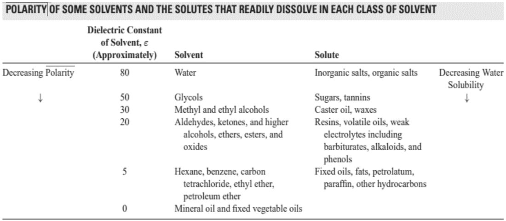
Sugars are polar (many –OH groups) but are not salts, so they suit glycols (ε ≈ 50), a little less polar than water.
Question 35 of 50
Polar solvents interact with solutes through:
A. Dipole–dipole interactions and/or hydrogen bonding
B. Magnetic forces
C. Covalent bond formation
D. Van der Waals forces only
A. Dipole–dipole interactions and/or hydrogen bonding
Polar solvents: high dielectric constant (e.g. water ε = 80); interact with solutes through dipole–dipole interactions and/or hydrogen bonding; good for dissolving polar/ionic solutes (e.g. NaCl).
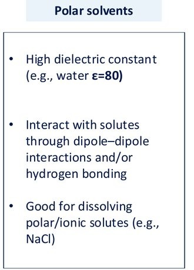
Water molecules “grab” ions and polar groups with their charged ends.
Question 36 of 50
Semi-polar solvents have an intermediate dielectric constant of about:
A. 5–20
B. 80
C. More than 50
D. Less than 5
A. 5–20
Semi-polar solvents: intermediate dielectric constant (ε ~5–20); limited ability to dissolve polar/ionic compounds; can sometimes act as bridging solvents (help polar + non-polar mix).
Between nonpolar (<5) and highly polar (water, 80).
Question 37 of 50
Which is given as an example of a semi-polar solvent acting as a bridge?
A. Water dissolves paraffin
B. Mineral oil dissolves sugar
C. Hexane dissolves NaCl
D. Propylene glycol dissolves peppermint oil in water
D. Propylene glycol dissolves peppermint oil in water
Examples: acetone increases solubility of ether in water; propylene glycol dissolves peppermint oil in water; alcohol dissolves castor oil in water.
The semi-polar solvent brings the oil into the water.
Question 38 of 50
Nonpolar solvents:
A. Have a high dielectric constant and dissolve ionic solutes well
B. Are good for dissolving NaCl
C. Interact with solutes mainly through hydrogen bonding
D. Have a low dielectric constant (ε < ~5), no significant dipole moment, and interact with solutes by Van der Waals forces
D. Have a low dielectric constant (ε < ~5), no significant dipole moment, and interact with solutes by Van der Waals forces
Nonpolar solvents: low dielectric constant (ε < ~5); no significant dipole moment; cannot dissolve ionic solutes but dissolve non-polar substances (oils, fats); interact with solute by Van der Waals forces; e.g. hexane, benzene, toluene.
No charged ends, so only weak Van der Waals attractions.
8. System Conditions: Temperature, pH & Pressure
12 questions
Question 39 of 50
During dissolution of a solid, energy is ____ to break the solid's interactions and ____ when new solute–solvent interactions form.
A. Released; released
B. Required; released
C. Required; required
D. Released; required
B. Required; released
Energy is required to overcome the interactions holding the solid together, while energy is released when new solute–solvent interactions form.
Breaking bonds costs energy; making bonds gives energy back.
Question 40 of 50
Endothermic solutes:
A. Become insoluble at any temperature above 25 °C
B. Release heat during dissolution; increasing temperature usually decreases their solubility
C. Absorb heat from the surroundings during dissolution; increasing temperature usually increases their solubility
D. Show no heat change
C. Absorb heat from the surroundings during dissolution; increasing temperature usually increases their solubility
Endothermic: solutes absorb heat from the surroundings during dissolution; energy is required to break the solute bonds; increasing temperature usually increases solubility of solids (most common).
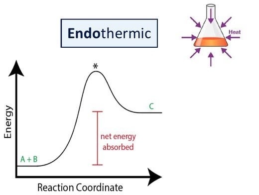
If dissolving needs heat, giving more heat helps it dissolve.
Question 41 of 50
Exothermic solutes:
A. Release heat during dissolution; increasing temperature usually decreases their solubility
B. Are the most common type of solid
C. Absorb heat during dissolution; increasing temperature increases their solubility
D. Never change solubility with temperature
A. Release heat during dissolution; increasing temperature usually decreases their solubility
Exothermic: solutes release heat to the surroundings during dissolution; energy released is greater than the energy needed to break the solute bonds; increasing temperature usually decreases solubility of solids (less common).
If dissolving already gives off heat, adding more heat pushes it backwards.
Question 42 of 50
Study this energy diagram for a dissolution process (A + B → C):
This dissolution is:
A. Exothermic — because there is an energy peak
B. Neither — no energy change
C. Endothermic — net energy is absorbed
D. Exothermic — net energy is released
C. Endothermic — net energy is absorbed
When products are higher in energy than the reactants, net energy is absorbed from the surroundings → endothermic. In the exothermic diagram, products lie below the reactants (net energy released).
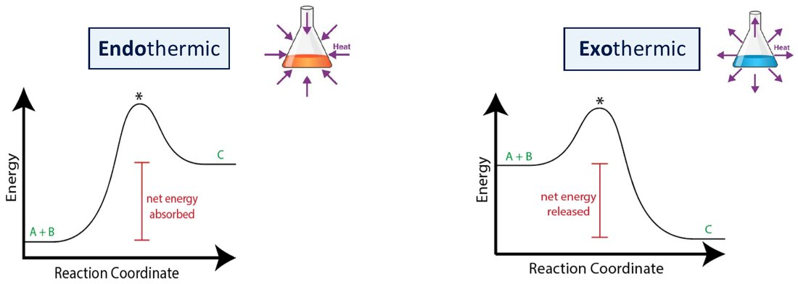
Going uphill in energy means energy had to be taken in.
Question 43 of 50
Using the graph below, which compound shows decreasing solubility as temperature increases over the whole range?
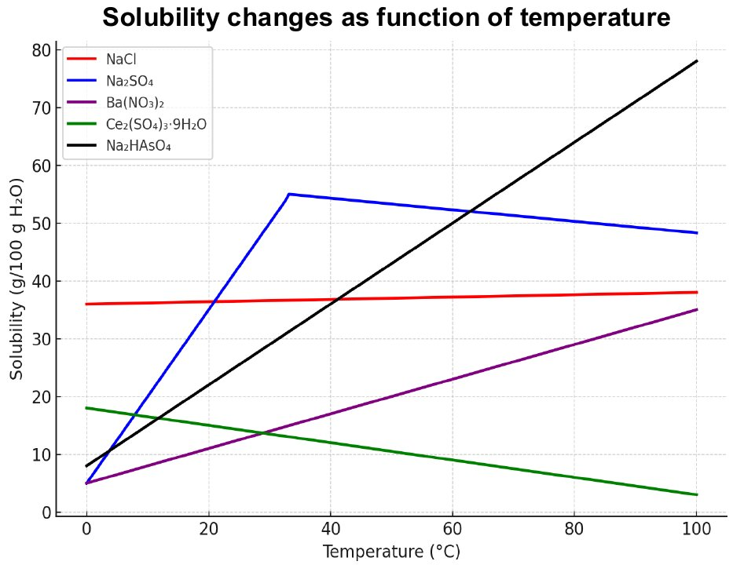
A. Na₂HAsO₄
B. Ce₂(SO₄)₃·9H₂O
C. Ba(NO₃)₂
D. NaCl
B. Ce₂(SO₄)₃·9H₂O
Ce₂(SO₄)₃·9H₂O (cerium(III) sulfate nonahydrate): solubility decreases with temperature → exothermic. Ba(NO₃)₂ and Na₂HAsO₄ increase (endothermic); NaCl is almost constant.
Look for the line going down from left to right.
Question 44 of 50
The solubility of Na₂SO₄ (sodium sulfate):
A. Decreases steadily from 0 to 100 °C
B. Is constant at all temperatures
C. Increases up to ~33 °C (as decahydrate), then decreases slightly as it converts to the anhydrous form
D. Increases steadily all the way to 100 °C
C. Increases up to ~33 °C (as decahydrate), then decreases slightly as it converts to the anhydrous form
Na₂SO₄: solubility increases up to ~33 °C (as decahydrate), then decreases slightly as it converts to anhydrous form.
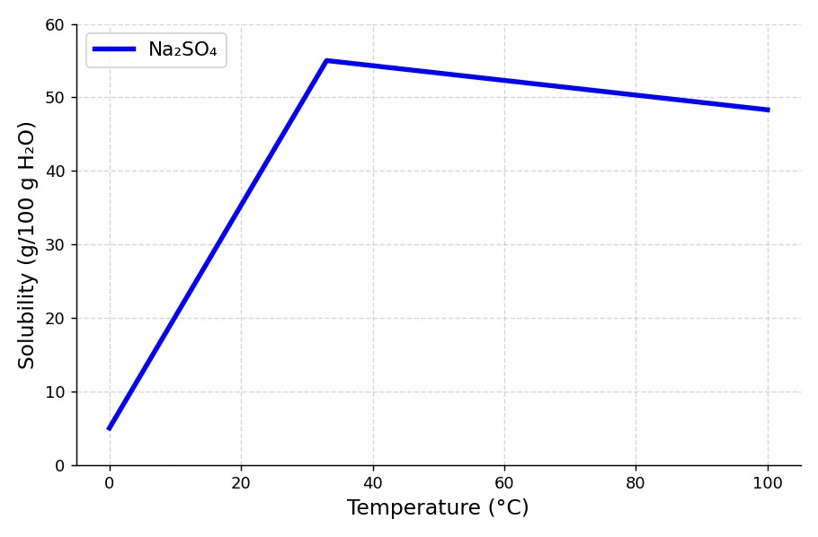
A change in the solid form (hydrate → anhydrous) changes the trend.
Question 45 of 50
The solubility of a weak acid or weak base drug is governed by:
A. Only the container volume
B. Only the pressure
C. Only the particle size
D. Both the pH and the drug's pKa
D. Both the pH and the drug's pKa
Solubility is governed by both pH and the acid dissociation constant (pKa) of the drug.
pKa tells at which pH the drug changes from un-ionised to ionised.
Question 46 of 50
A weak acid drug such as aspirin is:
A. Less soluble in acidic solutions (low pH) and more soluble in alkaline solutions (high pH)
B. Insoluble in alkaline solutions
C. Equally soluble at all pH values
D. More soluble in acidic solutions and less soluble in alkaline solutions
A. Less soluble in acidic solutions (low pH) and more soluble in alkaline solutions (high pH)
Weak acids: less soluble in acidic solutions (low pH), more soluble in alkaline solutions (high pH). Examples: aspirin, NSAIDs, barbiturates. R–COOH (unionized) + NaOH → R–COO⁻ Na⁺ (soluble).
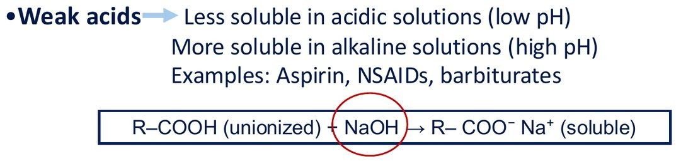
A base (NaOH) turns the acid into its charged, soluble salt.
Question 47 of 50
Which drugs are given as examples of weak bases?
A. Aspirin, NSAIDs, barbiturates
B. Tetracycline, erythromycin, ciprofloxacin
C. NaCl, Na₂SO₄, Ba(NO₃)₂
D. Hexane, benzene, toluene
B. Tetracycline, erythromycin, ciprofloxacin
Weak bases: more soluble in acidic solutions (low pH), less soluble in alkaline solutions (high pH). Examples: tetracycline, erythromycin, ciprofloxacin. R–NH₂ (unionized) + HCl → R–NH₃⁺ Cl⁻ (soluble).
Aspirin is an acid; the antibiotics listed are bases.
Question 48 of 50
Which is NOT listed as a clinical relevance of pH-dependent solubility?
A. Solubility of a drug changes in different parts of the GI tract
B. pH changes the colour of all tablets
C. Formulation pH must be controlled to keep drugs dissolved
D. Storage pH changes can cause precipitation
B. pH changes the colour of all tablets
Clinical relevance: formulation pH must be controlled to keep drugs dissolved; solubility of a drug changes in different parts of the GI tract; storage pH changes can cause precipitation.
Think of keeping drugs dissolved in the bottle and in the gut.
Question 49 of 50
A barbiturate (weak acid) solution is accidentally acidified during storage. What is the most likely result?
A. No change
B. Precipitation of the drug
C. An increase in its solubility
D. Conversion to a weak base
B. Precipitation of the drug
Weak acids are less soluble at low pH; storage pH changes can cause precipitation.
Lowering the pH turns the acid back into its un-ionised, less soluble form.
Question 50 of 50
For a gas dissolved in a liquid, increasing the pressure of the gas above the liquid:
A. Generally decreases the amount of gas that dissolves
B. Has no effect
C. Turns the gas into a solid
D. Generally increases the amount of gas that dissolves
D. Generally increases the amount of gas that dissolves
Increasing the pressure of a gas above a liquid generally increases the amount of gas that dissolves. General relationship: ↑ gas pressure → ↑ gas solubility.
Fizzy drinks are bottled under high CO₂ pressure to keep the gas dissolved.
Lecture 4Solubility II
40 questions
1. Solutes in Solutions & Types of Solutions
3 questions
Question 1 of 40
What determines whether dissolved species exist predominantly as neutral molecules or as ions?
A. The nature of the solute
B. The colour of the solvent
C. The size of the container
D. The volume of solution prepared
A. The nature of the solute
The nature of the solute determines whether dissolved species exist predominantly as neutral molecules or as ions in solution. The molecular or ionic form influences its behaviour in solution.
Salt splits into ions, sugar stays as whole molecules: it depends on what the solute is.
Question 2 of 40
Electrolytes are substances that:
A. Always precipitate in water
B. Only dissolve in oils
C. Do not form ions in water and do not conduct electric current
D. Produce ions when dissolved in water and therefore conduct electric current
D. Produce ions when dissolved in water and therefore conduct electric current
Electrolytes: substances that produce ions when dissolved in water and therefore conduct electric current, e.g. sodium chloride.
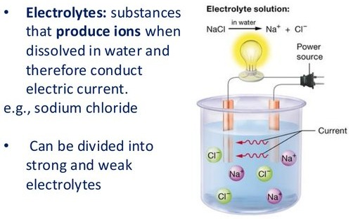
Ions are charged carriers, so they let electricity flow through the water.
Question 3 of 40
In a conductivity test, a bulb lights up when the electrodes are placed in a NaCl solution but not in a glucose solution. Why?
A. Glucose is insoluble in water
B. Glucose molecules block the electrodes
C. NaCl solution is hotter
D. NaCl produces Na⁺ and Cl⁻ ions that carry current; glucose stays as neutral molecules
D. NaCl produces Na⁺ and Cl⁻ ions that carry current; glucose stays as neutral molecules
NaCl → Na⁺ + Cl⁻ in water, and the ions conduct current (bulb on). C₆H₁₂O₆ dissolves as neutral molecules, so no current flows (bulb off).
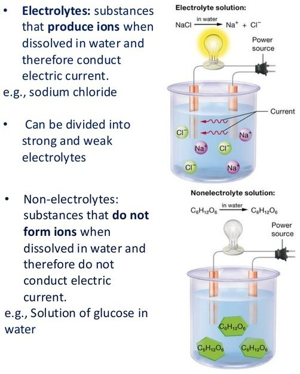
No ions, no current, no light.
2. Strong & Weak Electrolytes
4 questions
Question 4 of 40
Which group is listed as strong electrolytes?
A. Many organic acids and bases
B. Non-polar oils
C. Most inorganic salts, strong acids and strong bases
D. Sugars such as glucose
C. Most inorganic salts, strong acids and strong bases
Strong electrolytes include most inorganic salts, strong acids and strong bases, e.g. NaCl and HCl.
Think of table salt and hydrochloric acid.
Question 5 of 40
Weak electrolytes are:
A. Never ionised in water
B. Completely ionised in water
C. Partially ionised in aqueous solution, with unionised and ionised forms coexisting at equilibrium
D. Always inorganic salts
C. Partially ionised in aqueous solution, with unionised and ionised forms coexisting at equilibrium
Weak electrolytes are partially ionised in aqueous solution; the unionised and ionised forms coexist at equilibrium.
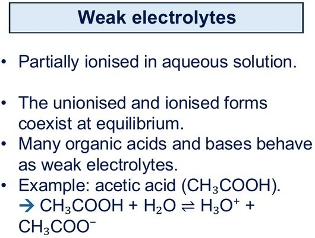
Weak = only some molecules split, and both forms live together.
Question 6 of 40
Why is the ionisation of acetic acid written with a double arrow (⇌) while that of NaCl uses a single arrow (→)?
A. Acetic acid is only partially ionised, so ionised and unionised forms coexist at equilibrium; NaCl ionises almost completely
B. NaCl is a weak electrolyte
C. The double arrow means the reaction is very fast
D. Acetic acid does not ionise at all
A. Acetic acid is only partially ionised, so ionised and unionised forms coexist at equilibrium; NaCl ionises almost completely
NaCl → Na⁺ + Cl⁻ (strong: almost completely ionic). CH₃COOH + H₂O ⇌ H₃O⁺ + CH₃COO⁻ (weak: partial ionisation, equilibrium between both forms).
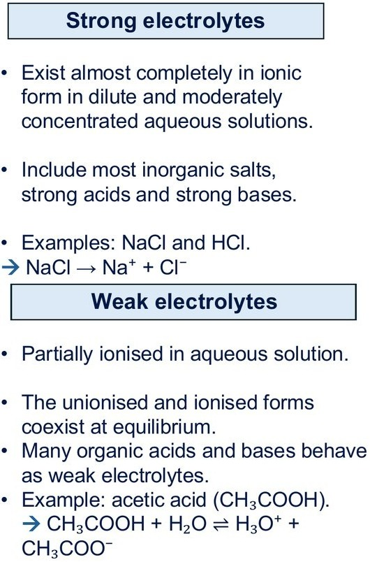
Double arrow = traffic in both directions, so both forms are present.
Question 7 of 40
A drug that is an organic weak base dissolves in water. Which description fits best?
A. It cannot dissolve in water at all
B. Part of it exists as ions and part as unionised molecules
C. None of it can ever ionise
D. All of it exists as ions
B. Part of it exists as ions and part as unionised molecules
Organic bases often behave as weak electrolytes: partially ionised, with ionised and unionised forms at equilibrium.
Weak electrolytes are a mixture of the two forms.
3. Weak Electrolytes & Solubility
3 questions
Question 8 of 40
The relative proportion of ionised and unionised forms of a weak electrolyte depends mainly on:
A. The size of the container
B. Only the temperature
C. The pH of the solution and the pKa of the drug
D. The colour and odour of the drug
C. The pH of the solution and the pKa of the drug
The relative proportion of these forms depends mainly on the pH of the solution and the pKa of the drug.
pH is the environment, pKa is the drug's own character: together they decide the balance.
Question 9 of 40
Which form of a weak electrolyte is generally more water-soluble?
A. The ionised form
B. Neither form dissolves in water
C. Both are always equally soluble
D. The unionised form
A. The ionised form
The ionised form is generally more water-soluble than the corresponding unionised form.
Charged ions attract polar water molecules strongly, so they dissolve better.
Question 10 of 40
Changes in pH can markedly alter the total aqueous solubility of weakly acidic and weakly basic drugs.
True
False
True
Because pH changes the proportion of the more soluble ionised form, it can markedly alter the total aqueous solubility of weak acids and weak bases.
Change the pH, change the share of ions, change the solubility.
4. Effect of Additives: Salting In & Salting Out
6 questions
Question 11 of 40
The presence of an additive always increases drug solubility.
True
False
False
Depending on the system, the presence of an additive may increase or decrease solubility.
Additives can help or hurt solubility.
Question 12 of 40
Salting in refers to:
A. An increase in the solubility of a solute following the addition of certain electrolytes
B. Precipitation caused by a common ion
C. Adding table salt to improve taste
D. A decrease in the solubility of a nonelectrolyte after adding an electrolyte
A. An increase in the solubility of a solute following the addition of certain electrolytes
Salting in refers to an increase in the solubility of a solute following the addition of certain electrolytes.
Salting IN = the salt pulls more solute IN to the solution.
Question 13 of 40
In salting in, what happens to the added electrolyte?
A. It forms micelles
B. It evaporates
C. It dissociates into ions, which become hydrated in the aqueous solution
D. It remains as undissolved crystals
C. It dissociates into ions, which become hydrated in the aqueous solution
The added electrolyte dissociates into ions, which become hydrated in the aqueous solution. The ions modify the intermolecular interactions and solvent environment surrounding the solute.
The salt splits into ions that get surrounded by water.
Question 14 of 40
In systems showing salting in, the changes caused by the ions make:
A. The dissolved state more favourable relative to solute–solute association, so equilibrium shifts towards more dissolved solute
B. The solvent evaporate faster
C. Solute–solute association more favourable, so the solute precipitates
D. The solute form a separate oily layer
A. The dissolved state more favourable relative to solute–solute association, so equilibrium shifts towards more dissolved solute
In systems showing salting in, these changes make the dissolved state more favourable relative to solute–solute association. Consequently, the equilibrium shifts towards a greater concentration of dissolved solute.
The solute prefers being in water over sticking to itself.
Question 15 of 40
What is the mechanism of salting out at higher electrolyte concentrations?
A. The electrolyte lowers the pH, ionising the nonelectrolyte
B. The ions form micelles that trap the nonelectrolyte
C. The ions react chemically with the nonelectrolyte to form a salt
D. Water molecules are strongly attracted to and solvate the ions, changing the solvent environment available to the nonelectrolyte
D. Water molecules are strongly attracted to and solvate the ions, changing the solvent environment available to the nonelectrolyte
At higher electrolyte concentrations, water molecules are strongly attracted to and solvate the ions. This changes the solvent environment available to the nonelectrolyte and can reduce its solubility in water.
The ions "steal" the water, leaving less for the nonelectrolyte.
Question 16 of 40
As the concentration of electrolyte increases during salting out, the nonelectrolyte may eventually:
A. Turn into an electrolyte
B. Become more soluble without limit
C. Form a cyclodextrin complex
D. Separate or precipitate from solution
D. Separate or precipitate from solution
As the concentration of electrolyte increases, the nonelectrolyte may eventually separate or precipitate from solution.
Too much salt and the solute drops out.
5. Common-Ion Effect
4 questions
Question 17 of 40
The common-ion effect refers to:
A. The increase in solubility caused by a cosolvent
B. The increase in solubility of any solute when an electrolyte is added
C. The formation of micelles above the CMC
D. The decrease in solubility of a sparingly soluble ionic compound when a soluble compound containing a common ion is added
D. The decrease in solubility of a sparingly soluble ionic compound when a soluble compound containing a common ion is added
The common-ion effect refers to the decrease in solubility of a sparingly soluble ionic compound when a soluble compound containing a common ion is added to the solution.
Adding more of an ion that is already there pushes the solid back out.
Question 18 of 40
How does the added common ion decrease solubility?
A. It shifts the dissolution equilibrium toward the undissolved solid
B. It shifts the equilibrium toward more dissolved ions
C. It forms an inclusion complex with the solute
D. It increases the polarity of water
A. It shifts the dissolution equilibrium toward the undissolved solid
The added common ion shifts the dissolution equilibrium toward the undissolved solid, decreasing its solubility and potentially causing precipitation.
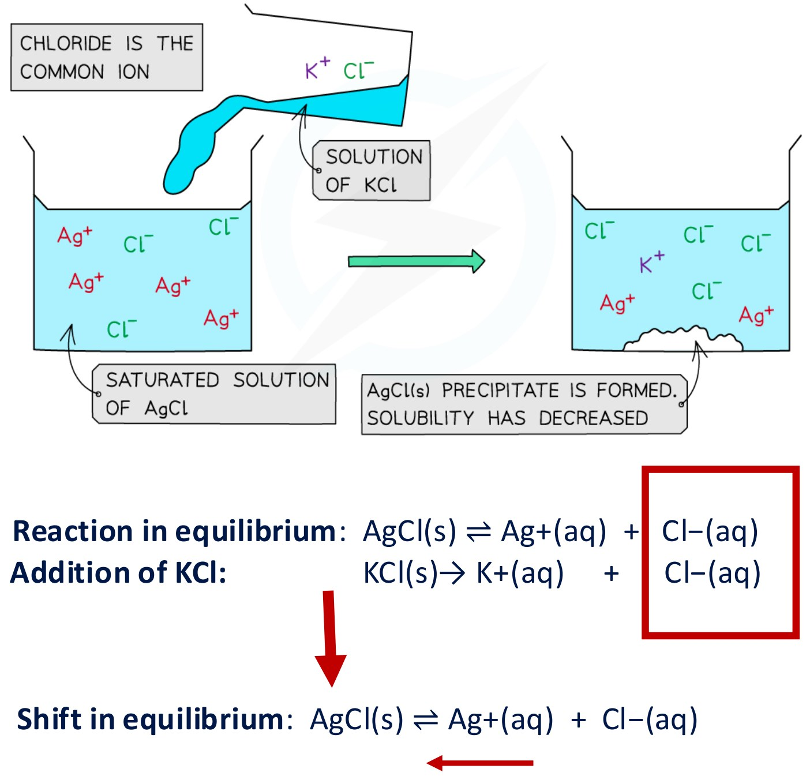
In the figure, the red box marks Cl⁻, the ion produced by both AgCl and KCl, and the red arrow under the last equation shows the equilibrium shifting to the left (towards solid AgCl).
The equilibrium "pushes back" against the extra ion by making more solid.
Question 19 of 40
What is the result of adding KCl to a saturated AgCl solution?
A. Ag⁺ concentration increases
B. AgCl becomes more soluble
C. The Cl⁻ concentration increases and AgCl precipitates (solubility of AgCl decreases)
D. KCl precipitates
C. The Cl⁻ concentration increases and AgCl precipitates (solubility of AgCl decreases)
Addition of KCl increases the concentration of Cl⁻; the equilibrium AgCl(s) ⇌ Ag⁺(aq) + Cl⁻(aq) shifts to the left, resulting in precipitation of AgCl. Solubility has decreased.
Too much chloride, so some Ag⁺ and Cl⁻ join back into solid AgCl.
Question 20 of 40
Which added compound would show a common-ion effect on a saturated AgCl solution?
A. Water
B. AgNO₃ (supplies Ag⁺)
C. Glucose
D. Ethanol
B. AgNO₃ (supplies Ag⁺)
AgNO₃ is a soluble compound that supplies Ag⁺, an ion common to AgCl(s) ⇌ Ag⁺ + Cl⁻; extra Ag⁺ shifts the equilibrium to the left and decreases AgCl solubility.
The common ion can be either of the two ions, here silver.
6. Strategies: pH Adjustment & Salt Formation
7 questions
Question 21 of 40
Which is NOT one of the five main strategies to improve solubility listed in the lecture?
A. pH adjustment
B. Salting out
C. Micellar solubilization
D. Cosolvency
B. Salting out
Main strategies: pH adjustment, salt formation, cosolvency, complexation and micellar solubilization. Salting out decreases solubility.
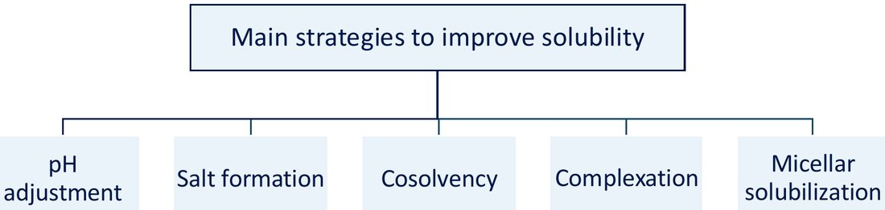
Salting out lowers solubility, so it cannot be a strategy to improve it.
Question 22 of 40
For a weak acid, how should pH be changed to increase solubility?
A. Decrease pH → ↑ ionisation → ↑ solubility
B. Increase pH → ↑ ionisation → ↑ solubility
C. pH has no effect on a weak acid
D. Increase pH → ↓ ionisation → ↑ solubility
B. Increase pH → ↑ ionisation → ↑ solubility
Weak acid: ↑ pH → ↑ ionisation → ↑ solubility.
Raising the pH (adding base) pulls H⁺ off the acid, so it becomes the charged, more soluble form.
Question 23 of 40
In the salt form, the drug exists as:
A. A molecule trapped in a micelle
B. An ion associated with an oppositely charged counterion
C. A neutral unionised molecule
D. A molecule inside a cyclodextrin cavity
B. An ion associated with an oppositely charged counterion
In the salt form, the drug exists as an ion associated with an oppositely charged counterion, which may result in greater aqueous solubility than the unionised form.
The drug becomes charged and gets a partner of opposite charge.
Question 24 of 40
Which equation represents salt formation of a weak acid drug?
Which are examples of water-miscible cosolvents given in the lecture?
A. Sodium chloride and potassium chloride
B. Ethanol, glycerol and propylene glycol
C. Cyclodextrins and surfactants
D. Mineral oil, chloroform and benzene
B. Ethanol, glycerol and propylene glycol
The aqueous solubility of unionised weak electrolytes and poorly water-soluble, relatively non-polar drugs may be increased by adding a water-miscible cosolvent, such as ethanol, glycerol or propylene glycol.
Cosolvents must mix with water, like alcohol and glycerol do.
Question 29 of 40
What is the mechanism of cosolvency?
A. The cosolvent precipitates the drug
B. The cosolvent forms micelles around the drug
C. The cosolvent modifies the polarity of the solvent system, creating a more favourable environment for the unionised drug
D. The cosolvent ionises the drug
C. The cosolvent modifies the polarity of the solvent system, creating a more favourable environment for the unionised drug
Mechanism: the cosolvent modifies the polarity of the solvent system. This creates a more favourable solvent environment for the unionised drug, increasing its solubility.
Adding alcohol makes water a little less polar, closer to what a non-polar drug likes.
Question 30 of 40
Complexation is:
A. The permanent covalent destruction of the drug
B. The use of a mixture of solvents
C. The decrease in solubility caused by a common ion
D. The reversible association of a drug with another molecule or ion (complexing agent) to form a complex
D. The reversible association of a drug with another molecule or ion (complexing agent) to form a complex
Complexation is the reversible association of a drug with another molecule or ion (complexing agent) to form a complex.
The drug "holds hands" with a helper molecule, and can let go again.
Question 31 of 40
Cyclodextrins have:
A. A hydrophilic cavity and a hydrophobic exterior
B. A completely hydrophobic structure
C. A hydrophobic cavity and a hydrophilic exterior
D. A completely ionic structure
C. A hydrophobic cavity and a hydrophilic exterior
Cyclodextrins have a hydrophobic cavity and a hydrophilic exterior. Hydrophobic regions of a drug can enter the cavity, becoming shielded from the aqueous environment.
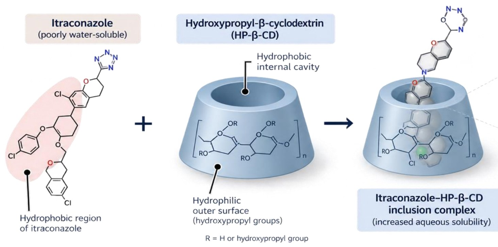
Like a cup that is oily inside and water-friendly outside.
Question 32 of 40
Surfactants are:
A. Inorganic salts that fully ionise
B. Water-miscible cosolvents such as glycerol
C. Amphiphilic molecules containing a hydrophilic region and a hydrophobic region
D. Molecules that are completely hydrophobic
C. Amphiphilic molecules containing a hydrophilic region and a hydrophobic region
Surfactants: amphiphilic molecules containing a hydrophilic region and a hydrophobic region.
Amphiphilic = loves both water and oil, with a head and a tail.
Question 33 of 40
How do micelles increase apparent aqueous solubility?
A. Micelles ionise the drug
B. Poorly water-soluble drugs become incorporated into or associated with the micelle, and the micelles remain dispersed in the aqueous phase
C. Micelles precipitate the drug
D. Micelles change the solvent into oil
B. Poorly water-soluble drugs become incorporated into or associated with the micelle, and the micelles remain dispersed in the aqueous phase
Poorly water-soluble drugs can become incorporated into or associated with the micelle. Micelles remain dispersed in the aqueous phase → ↑ apparent aqueous solubility.
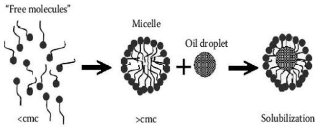
The micelle is a tiny oily bubble that carries the drug through the water.
Question 34 of 40
The graph shows the concentration of a poorly soluble compound in solution versus surfactant concentration. What happens above the concentration marked by the dashed line?
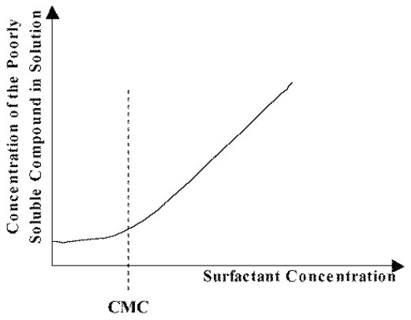
A. The concentration stays constant
B. The concentration falls to zero
C. The compound precipitates completely
D. The concentration of the poorly soluble compound rises steeply as surfactant concentration increases
D. The concentration of the poorly soluble compound rises steeply as surfactant concentration increases
The dashed line is the CMC. Below the CMC the solubility of the poorly soluble compound stays low and almost constant; above the CMC micelles form and the dissolved concentration rises steeply (roughly linearly) with surfactant concentration.
No micelles, no extra carriers; once micelles appear, every extra bit of surfactant carries more drug.
8. Comparing & Selecting Strategies
6 questions
Question 35 of 40
Salt formation is particularly useful when:
A. Surfactant is above the CMC
B. A suitable drug–counterion combination can be formed
C. The drug has a hydrophobic region that fits a cyclodextrin
D. The drug is a non-electrolyte
B. A suitable drug–counterion combination can be formed
Salt formation: converts an ionisable drug to a salt form; useful when a suitable drug–counterion combination can be formed; solubility depends on the drug, counterion, pH and salt properties.
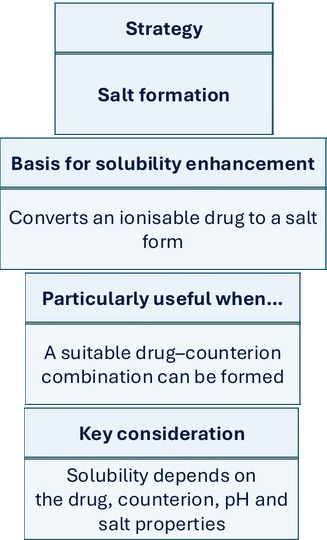
You need a good partner ion to make a salt.
Question 36 of 40
For complexation, the key consideration is that it:
A. Depends on complex formation and stability
B. Always fails on dilution
C. Depends on surfactant concentration and micelle formation
D. Requires the drug to be a weak acid
A. Depends on complex formation and stability
Complexation: forms a soluble complex with the drug; useful when the drug can associate favourably with a suitable complexing agent; depends on complex formation and stability.
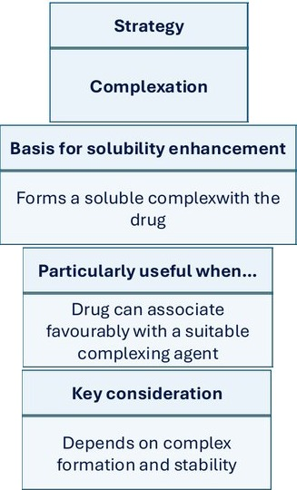
(Note: "complexwith" in the figure is a typing error for "complex with".)
The complex must form and hold together.
Question 37 of 40
For micellar solubilization, the key consideration is that it:
A. Depends on surfactant concentration and micelle formation
B. Depends on pH only
C. Depends on the counterion
D. Depends on adding a common ion
A. Depends on surfactant concentration and micelle formation
Micellar solubilization: drug associates with surfactant micelles; useful when the poorly soluble drug can be accommodated within/associated with micelles; depends on surfactant concentration and micelle formation.
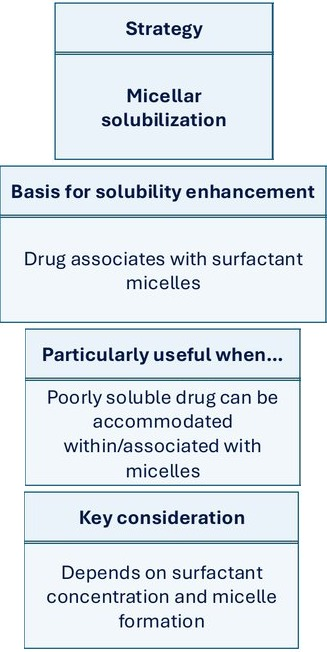
No micelles (below CMC), no solubilization.
Question 38 of 40
In the lecture's comparison of strategies, which two strategies have dilution listed as a possible cause of precipitation?
A. Salt formation and micellar solubilization
B. Complexation and salt formation
C. Micellar solubilization and complexation
D. pH adjustment and cosolvency
D. pH adjustment and cosolvency
pH adjustment: "pH change or dilution may cause precipitation". Cosolvency: "Dilution can reduce solvent strength and cause precipitation".
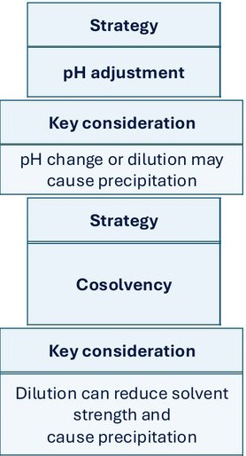
Both depend on a special liquid environment that dilution can destroy.
Question 39 of 40
Strategy selection depends on:
A. Only the drug's colour
B. Only the patient's preference
C. The drug, solvent system, dosage form and conditions the formulation will encounter during manufacture, storage and use
D. Only the cost of the solvent
C. The drug, solvent system, dosage form and conditions the formulation will encounter during manufacture, storage and use
Strategy selection depends on the drug, solvent system, dosage form and conditions the formulation will encounter during manufacture, storage and use.
The chosen method must keep working from the factory to the patient.
Question 40 of 40
A highly non-polar drug has no ionisable groups. Which strategy is least suitable?
A. pH adjustment
B. Complexation with a cyclodextrin
C. Cosolvency
D. Micellar solubilization
A. pH adjustment
pH adjustment is applicable mainly to weak acids and weak bases; a drug with no ionisable group cannot be ionised by pH. Cosolvency, complexation and micelles do not need ionisation.
No charge to switch on, so pH cannot help.
Lecture 5Colligative Properties
45 questions
1. Colligative Properties & Particle Number
5 questions
Question 1 of 45
Colligative properties are properties of solutions that depend mainly on:
A. The chemical identity of the solute
B. The colour of the solute
C. The number of dissolved solute particles
D. The molecular shape of the solvent
C. The number of dissolved solute particles
Colligative properties: properties of solutions that depend mainly on the number of dissolved solute particles, rather than their chemical identity.
Count the particles, not what they are: one glucose molecule and one urea molecule count the same.
Question 2 of 45
Which is NOT one of the four main colligative properties?
A. Elevation of the boiling point
B. Viscosity
C. Osmotic pressure
D. Lowering of the vapor pressure
B. Viscosity
The four main colligative properties: lowering of the vapor pressure, elevation of the boiling point, depression of the freezing point, and osmotic pressure.
Remember: ↓ vapor pressure, ↑ boiling point, ↓ freezing point, osmotic pressure.
Question 3 of 45
The pharmaceutical relevance of colligative properties is that they:
A. Determine the colour of tablets
B. Measure the pharmacological effect of the drug
C. Replace the need for excipients
D. Provide a basis for understanding and controlling the physicochemical properties of pharmaceutical solutions
D. Provide a basis for understanding and controlling the physicochemical properties of pharmaceutical solutions
Pharmaceutical relevance: colligative properties provide a basis for understanding and controlling the physicochemical properties of pharmaceutical solutions.
They help us design solutions such as injections and eye drops correctly.
Question 4 of 45
The van’t Hoff factor (i) accounts for:
A. The molecular weight of the solute
B. The volume of the solvent
C. The temperature of the solution
D. The number of particles a solute produces in solution
D. The number of particles a solute produces in solution
Van’t Hoff factor (i): accounts for the number of particles a solute produces in solution. Colligative effect ∝ i × concentration.
i tells you how many pieces one unit of solute breaks into.
Question 5 of 45
Which 0.1 molal aqueous solution has the greatest colligative effect (assume ideal dissociation)?
A. NaCl
B. CaCl₂
C. Sucrose
D. Glucose
B. CaCl₂
Colligative effect ∝ i × concentration. At the same concentration: CaCl₂ (i = 3) > NaCl (i = 2) > glucose = sucrose (i = 1).
Same concentration, so the solute with the most particles wins.
2. Vapor-Pressure Lowering & Raoult’s Law
5 questions
Question 6 of 45
Vapor pressure is the pressure exerted by vapor molecules above a liquid when:
A. The solid and liquid phases are in equilibrium
B. The liquid is completely evaporated
C. The liquid and vapor phases are at equilibrium at a given temperature
D. The liquid is boiling at 100 °C only
C. The liquid and vapor phases are at equilibrium at a given temperature
Vapor pressure: the pressure exerted by vapor molecules above a liquid when the liquid and vapor phases are at equilibrium at a given temperature.
It is the “push” of the escaped vapor molecules in a closed container.
Question 7 of 45
Which statement explains vapor-pressure lowering by a non-volatile solute?
A. The escaping tendency of the solvent molecules decreases
B. The temperature of the solution rises
C. The solvent molecules become heavier
D. The solute molecules evaporate and add to the vapor
A. The escaping tendency of the solvent molecules decreases
When a non-volatile solute is added: the solute does not contribute to the vapor phase, and the escaping tendency of the solvent molecules decreases → fewer solvent molecules in the vapor → lower vapor pressure.
Fewer solvent molecules can leave the liquid, so the pressure of the vapor is lower.
Question 8 of 45
Raoult’s law states that the vapor pressure of a solvent in a solution is proportional to:
A. Its molecular weight
B. The volume of the container
C. Its mole fraction
D. The boiling point of the solute
C. Its mole fraction
Raoult’s law: the vapor pressure of a solvent in a solution is proportional to its mole fraction: P = Xsolvent · Psolvent.
Less solvent “share” in the mixture → less solvent vapor.
Question 9 of 45
As solute concentration increases:
A. Xsolvent increases and ΔP decreases
B. Xsolvent decreases and ΔP increases
C. Xsolvent and ΔP both stay constant
D. Xsolvent and ΔP both decrease
B. Xsolvent decreases and ΔP increases
As solute concentration increases → Xsolvent decreases → ΔP increases.
More solute = smaller solvent share = bigger drop in vapor pressure.
Question 10 of 45
For the same solution (Psolvent = 23.8 mmHg, Xsolvent = 0.95), what is the vapor-pressure lowering ΔP?
The normal boiling point is the temperature at which the vapor pressure of the liquid becomes equal to:
A. The osmotic pressure
B. The external atmospheric pressure of 760 mmHg (1 atm)
C. Zero
D. The vapor pressure of the solute
B. The external atmospheric pressure of 760 mmHg (1 atm)
Normal boiling point: the temperature at which the vapor pressure of the liquid becomes equal to the external atmospheric pressure of 760 mmHg (1 atm).
A liquid boils when its vapor can push as hard as the air above it.
Question 12 of 45
Why does a solution of a non-volatile solute boil at a higher temperature than the pure solvent?
A. The solute increases the external pressure
B. The solute lowers the vapor pressure, so a higher temperature is needed for the vapor pressure to reach the external pressure
C. The solute raises the vapor pressure
D. The solute evaporates first
B. The solute lowers the vapor pressure, so a higher temperature is needed for the vapor pressure to reach the external pressure
The solute lowers the vapor pressure of the solvent. Boiling occurs when the vapor pressure equals the external pressure. Therefore, a higher temperature is required for the solution to boil: Tb(solution) > Tb(pure solvent).
Starting from a lower vapor pressure, you must heat more to reach 760 mmHg.
Question 13 of 45
On a vapor pressure–temperature graph of a solvent and its solution, the lower curve belongs to the solution, and ΔTb is the difference between T and T0 at 760 mmHg.
True
False
True
The solution curve lies below the solvent curve (lower vapor pressure, ΔP). It reaches 760 mmHg at T, higher than the solvent’s T0; ΔTb = T − T0.
Lower curve → reaches 760 later → boils hotter.
Question 14 of 45
According to the lecture, as the molality of sucrose in a solution increases, its boiling point:
A. Stays constant
B. Decreases linearly
C. First rises then falls
D. Increases linearly
D. Increases linearly
The lecture graph of boiling point against molality of sucrose shows a straight line rising with molality, consistent with ΔTb = iKbm. (Note: in this graph the line starts at about 98 °C and rises about 3 °C per molal; for water the boiling point at 1 atm is 100 °C and Kb ≈ 0.512 °C·kg/mol, so use the graph only for its linear trend.)
Double the molality → double the elevation.
Question 15 of 45
What is the boiling point of a solution of 0.50 mol NaCl in 1.00 kg of water? (Kb of water = 0.512 °C·kg/mol, Tb° = 100 °C, assume ideal dissociation)
A. 100.26 °C
B. 99.49 °C
C. 101.02 °C
D. 100.51 °C
D. 100.51 °C
ΔTb = iKbm i = 2 (Na⁺ + Cl⁻); m = 0.50 mol / 1.00 kg = 0.50 mol/kg ΔTb = 2 × 0.512 × 0.50 = 0.512 °C Tb = 100 + 0.512 = 100.51 °C
Do not forget i = 2 for NaCl (100.26 °C is the answer if you forget it).
4. Freezing-Point Depression
6 questions
Question 16 of 45
The freezing point is the temperature at which:
A. The solid and liquid phases co-exist in equilibrium at 760 mmHg (1 atm)
B. The vapor pressure equals 760 mmHg
C. All solvent has evaporated
D. The liquid and vapor phases are in equilibrium
A. The solid and liquid phases co-exist in equilibrium at 760 mmHg (1 atm)
Freezing point: the temperature at which the solid and liquid phases co-exist in equilibrium at 760 mmHg (1 atm).
At the freezing point, molecules join and leave the solid at the same rate.
Question 17 of 45
Why is the freezing point of a solution lower than that of the pure solvent?
A. Solute particles raise the external pressure
B. Solute particles interfere with the formation of the ordered solid structure of the solvent
C. Solute particles freeze first and warm the solvent
D. Solute particles increase the vapor pressure
B. Solute particles interfere with the formation of the ordered solid structure of the solvent
Solute particles interfere with the formation of the ordered solid structure of the solvent → a lower temperature is required for the solvent to freeze → Tf(solution) < Tf°(pure solvent).
Solute particles get in the way of the neat crystal, so you must cool it more.
Question 18 of 45
In ΔTf = iKfm, Kf is:
A. A constant that depends on the solute
B. The freezing point of the pure solvent
C. The molarity of the solution
D. The molal freezing-point depression constant of the solvent
D. The molal freezing-point depression constant of the solvent
ΔTf = freezing-point depression; i = van’t Hoff factor; Kf = molal freezing-point depression constant of the solvent; m = molality.
Kf is a property of the solvent (water ≈ 1.86, benzene 5.12).
Question 19 of 45
The graph shows the normal freezing point of water against the molality of sucrose. What is the approximate freezing point at 10 molal?
A. About −18.6 °C
B. About +18.6 °C
C. About −10 °C
D. About 0 °C
A. About −18.6 °C
Reading the graph, at 10 molal the point is just below −18 °C. This matches ΔTf = iKfm = 1 × 1.86 × 10 = 18.6 °C, so Tf = 0 − 18.6 = −18.6 °C.
The line drops about 1.86 °C for every 1 molal of sucrose.
Question 20 of 45
Lecture example: What is the freezing point of a solution containing 3.42 g of sucrose (MW = 342 g/mol) in 500 g of water? (Kf ≈ 1.86)
A. −0.019 °C
B. −0.074 °C
C. +0.037 °C
D. −0.037 °C
D. −0.037 °C
ΔTf = iKfm; i (sucrose) = 1 Moles of sucrose = 3.42 g ÷ 342 g/mol = 0.01 mol m = 0.01 mol ÷ 0.5 kg = 0.02 mol/kg ΔTf = 1.86 × 0.02 = 0.037 °C Tf = 0 − 0.037 = −0.037 °C
Freezing point moves just below 0 °C because the solution is dilute.
Question 21 of 45
Lecture example: 2.000 g of 1,3-dinitrobenzene in 100.0 g of benzene gives a freezing-point depression of 0.6095 °C. Kf of benzene = 5.12 °C·kg/mol, i = 1. What is the molar mass of 1,3-dinitrobenzene?
A. 1680 g/mol
B. 84 g/mol
C. 16.8 g/mol
D. 168 g/mol
D. 168 g/mol
ΔTf = iKfm → 0.6095 = 5.12 × m m = 0.6095 ÷ 5.12 = 0.1190 mol/kg n = m × kg solvent = 0.1190 × 0.1000 = 0.01190 mol Molar mass = weight ÷ moles = 2.000 ÷ 0.01190 = 168 g/mol
Freezing-point data let you “weigh” a molecule: find moles, then grams ÷ moles.
5. Osmosis & Osmotic Pressure
7 questions
Question 22 of 45
Osmosis is the net movement of:
A. Solvent molecules through a semipermeable membrane from lower to higher solute concentration
B. Solute molecules from higher to lower solute concentration
C. Solvent molecules from higher to lower solute concentration
D. Solute and solvent equally in both directions
A. Solvent molecules through a semipermeable membrane from lower to higher solute concentration
Osmosis: the net movement of solvent molecules through a semipermeable membrane from a region of lower solute concentration to a region of higher solute concentration.
Water moves toward the “saltier” side to dilute it.
Question 23 of 45
The U-tube below is separated at the bottom by a semipermeable membrane; one arm contains pure solvent and the other a solution (red = solute particles). Why has the liquid level risen in the right arm?
A. Solute moved into the left arm
B. Solvent moved into the more concentrated solution, raising its level
C. The membrane allowed solute to pass to the right
D. Solvent evaporated from the right arm
B. Solvent moved into the more concentrated solution, raising its level
Solvent moves toward the more concentrated solution. As solvent enters the more concentrated solution, the liquid level rises and hydrostatic pressure develops. Net osmosis stops when the opposing pressure balances the osmotic driving force.
The red solute cannot cross, so the water crosses to it.
Question 24 of 45
Which statement correctly distinguishes diffusion from osmosis?
A. Both require a semipermeable membrane
B. Diffusion is movement of solvent only
C. Diffusion does not require a semipermeable membrane; osmosis does
D. Diffusion requires a semipermeable membrane; osmosis does not
C. Diffusion does not require a semipermeable membrane; osmosis does
Diffusion: movement of particles down their own concentration gradient (generally high → low concentration of the moving species); semipermeable membrane not required. Osmosis: movement of solvent across a semipermeable membrane toward the side with higher solute concentration; semipermeable membrane required.
Perfume spreading in a room is diffusion — no membrane needed.
Question 25 of 45
Osmotic pressure (π) is:
A. The pressure of solute moving through the membrane
B. The atmospheric pressure at the boiling point
C. The pressure that must be applied to a solution to prevent the net movement of solvent through a semipermeable membrane
D. The pressure of the vapor above a solution
C. The pressure that must be applied to a solution to prevent the net movement of solvent through a semipermeable membrane
Osmotic pressure (π): the pressure that must be applied to a solution to prevent the net movement of solvent through a semipermeable membrane. Pressure required to stop net osmosis = osmotic pressure.
It is the push you must apply on the solution side to stop water from coming in.
Question 26 of 45
In the osmotic pressure equation π = iMRT, M is the:
A. Mole fraction
B. Molarity
C. Molality
D. Molar mass
B. Molarity
π = osmotic pressure; i = van’t Hoff factor; M = molarity; R = gas constant; T = absolute temperature (K).
Osmotic pressure uses molarity (capital M), unlike ΔTb and ΔTf, which use molality.
Question 27 of 45
Lecture example: 1 g of sucrose (MW = 342) is dissolved in 100 mL of solution at 25 °C. What is the osmotic pressure? (R = 0.08206 L·atm·mol⁻¹·K⁻¹)
A. 0.71 atm
B. 7.1 atm
C. 0.059 atm
D. 0.071 atm
A. 0.71 atm
π = iMRT; i = 1 (non-electrolyte); T = 25 + 273 = 298 K Moles of sucrose = 1 / 342 = 0.0029 mol M = 0.0029 / 0.1 L = 0.029 mol/L π = 1 × 0.029 × 0.082 × 298 = 0.71 atm
Change mL to L and °C to K before multiplying.
Question 28 of 45
Which solution has the highest osmotic pressure at 25 °C (ideal dissociation)?
A. 0.3 M glucose
B. 0.2 M NaCl
C. 0.2 M sucrose
D. 0.1 M CaCl₂
B. 0.2 M NaCl
Compare i × M: NaCl 2 × 0.2 = 0.4; glucose 1 × 0.3 = 0.3; CaCl₂ 3 × 0.1 = 0.3; sucrose 1 × 0.2 = 0.2. The highest is 0.2 M NaCl.
Multiply concentration by the number of particles, then compare.
6. Osmolarity & Osmolality
7 questions
Question 29 of 45
An osmole (Osm) is:
A. 1 litre of solution
B. The pressure needed to stop osmosis
C. The amount of solute that produces 1 mole of osmotically active particles
D. 1 gram of any solute
C. The amount of solute that produces 1 mole of osmotically active particles
Osmole (Osm): the amount of solute that produces 1 mole of osmotically active particles. Osmoles = moles of solute × i.
An osmole is a mole of particles, counting every ion separately.
Question 30 of 45
Osmolarity is expressed as:
A. Moles per kilogram of solution
B. Osmoles per liter of solution
C. Osmoles per kilogram of solvent
D. Grams per liter of solvent
B. Osmoles per liter of solution
Osmolarity: osmoles per liter of solution (Osm/L or mOsm/L), based on volume. Osmolality: osmoles per kilogram of solvent (Osm/kg or mOsm/kg), based on mass.
Osmolarity → per litre of solution; osmolality → per kg of solvent.
Question 31 of 45
Which is affected (slightly) by temperature?
A. Osmolality
B. Osmolarity
C. Molality
D. Osmoles of solute
B. Osmolarity
Osmolarity is based on volume and may change slightly with temperature; osmolality is based on mass and is not affected by temperature.
Liquids expand when warm (volume changes), but mass does not.
Question 32 of 45
According to the lecture, how many osmoles are produced by 2 moles of NaCl (ideal dissociation)?
A. 6 Osm
B. 1 Osm
C. 2 Osm
D. 4 Osm
D. 4 Osm
Osmoles = i × n = 2 × 2 = 4 Osm (2 moles of glucose would give only 1 × 2 = 2 Osm).
Each NaCl gives two ions, so the count doubles.
Question 33 of 45
Plasma/serum osmolality is determined mainly by:
A. Glucose
B. Urea
C. Proteins
D. Sodium and its accompanying anions
D. Sodium and its accompanying anions
Plasma/serum osmolality is determined mainly by sodium and its accompanying anions, with smaller contributions from glucose and other solutes. Body fluids contain many osmotically active particles, including electrolytes, glucose, proteins and other solutes.
Sodium is the main particle in plasma.
Question 34 of 45
The typical serum/plasma osmolality is approximately:
A. 2750–2950 mOsm/kg
B. 27.5–29.5 mOsm/kg
C. 275–295 mOsm/kg
D. 100–150 mOsm/kg
C. 275–295 mOsm/kg
Typical serum/plasma osmolality ≈ 275–295 mOsm/kg. Plasma osmolality is tightly regulated and plays an important role in fluid balance between body compartments.
Remember “about 290”.
Question 35 of 45
Osmolality is especially important when designing which formulations?
A. Parenteral and ophthalmic formulations
B. Suppositories only
C. Powders for dusting
D. Tablets and capsules
A. Parenteral and ophthalmic formulations
Pharmaceutical relevance: osmolality is important when designing parenteral and ophthalmic formulations; differences in osmotic concentration can drive water movement across cell membranes.
Products that touch blood cells or the eye must match body fluids.
7. Tonicity & Pharmaceutical Significance
10 questions
Question 36 of 45
Which statement best contrasts osmolality and tonicity?
A. Tonicity counts all dissolved particles; osmolality counts only non-penetrating solutes
B. Tonicity is measured in mOsm/kg; osmolality is described as hypo-, iso- or hypertonic
C. Osmolality tells us the solute concentration; tonicity tells us what that concentration does to cells
D. Osmolality and tonicity are identical terms
C. Osmolality tells us the solute concentration; tonicity tells us what that concentration does to cells
Osmolality tells us the solute concentration; tonicity tells us what that concentration does to cells.
Osmolality = a number; tonicity = the effect on the cell.
Question 37 of 45
Which solutes mainly contribute to tonicity?
A. Non-penetrating solutes
B. Only penetrating solutes
C. Only proteins
D. All dissolved particles
A. Non-penetrating solutes
Osmolality: all dissolved particles contribute. Tonicity: mainly non-penetrating solutes contribute; it depends on membrane permeability to the solute.
A solute that can enter the cell cannot hold water outside it.
Question 38 of 45
The beaker below shows a red blood cell in a solution. What type of solution is it?
A. Hypotonic
B. Isoosmotic and isotonic
C. Hypertonic
D. Isotonic
C. Hypertonic
The cell is shrunken: net water movement out of the cell → cell shrinks → hypertonic solution.
Shrunken cell = water left it = hypertonic.
Question 39 of 45
In an isotonic solution:
A. The cell lyses
B. Water moves out of the cell
C. Water moves into the cell
D. There is no net water movement and the cell volume remains unchanged
D. There is no net water movement and the cell volume remains unchanged
Isotonic solution: no net water movement; cell volume remains unchanged.
Iso = equal; water in = water out.
Question 40 of 45
Isoosmotic means:
A. Causing no net change in cell volume
B. Having zero osmolality
C. Having twice the osmolality of plasma
D. Having the same osmolality as the reference fluid
D. Having the same osmolality as the reference fluid
Isoosmotic: has the same osmolality as the reference fluid. Isotonic: causes no net change in cell volume.
Iso-osmotic is about the number; isotonic is about the cell.
Question 41 of 45
A 1.9% boric acid solution is isoosmotic with blood but causes red blood cells to swell. Why?
A. Boric acid penetrates the cells, and water follows
B. Boric acid cannot cross the cell membrane
C. Boric acid draws water out of the cells
D. Boric acid has zero osmolality
A. Boric acid penetrates the cells, and water follows
With red blood cells: boric acid can penetrate the cells → water follows → cells swell → isoosmotic but not isotonic.
A solute that enters the cell drags water in with it.
Question 42 of 45
With the eye, 1.9% boric acid solutions:
A. Are hypertonic and shrink corneal cells
B. Always cause severe ocular irritation
C. Can be compatible with ocular tissues and may be considered isotonic for ophthalmic use
D. Are never used in eye preparations
C. Can be compatible with ocular tissues and may be considered isotonic for ophthalmic use
With the eye: boric acid solutions can be compatible with ocular tissues and have traditionally been used in isotonic ophthalmic preparations → may be considered isotonic for ophthalmic use.
Tonicity depends on which membrane: the same solution behaves differently with red blood cells and with the eye.
Question 43 of 45
For ophthalmic preparations, large deviations from physiological tonicity may cause:
A. No effect at all
B. Faster tear evaporation only
C. Irritation and discomfort
D. Improved ocular comfort
C. Irritation and discomfort
Ophthalmic preparations: appropriate tonicity helps improve ocular comfort and tolerability; large deviations from physiological tonicity may cause irritation and discomfort.
Eye drops that do not match tears sting.
Question 44 of 45
Which agents are given as examples for adjusting tonicity?
A. Sodium chloride or dextrose
B. Benzene or chloroform
C. Talc or starch
D. Ethanol or acetone
A. Sodium chloride or dextrose
Formulation considerations: tonicity may be adjusted using suitable agents, such as sodium chloride or dextrose, depending on the formulation.
Salt and sugar are the classic tonicity adjusters.
Question 45 of 45
An injection solution is found to be strongly hypotonic. If injected, the most likely effect on red blood cells is:
A. Swelling and possible lysis
B. Shrinking
C. No change in volume
D. Conversion to an isoosmotic state
A. Swelling and possible lysis
Hypotonic solutions may cause cells to swell or lyse (net water movement into the cell). Tonicity should be adjusted, e.g. with sodium chloride or dextrose.
Too little solute outside → water floods the cell.
Lecture 6Buffers
40 questions
1. What Is a Buffer?
5 questions
Question 1 of 40
A buffer is a solution that:
A. Resists changes in pH when small amounts of strong acid or strong base are added
B. Always has a pH of exactly 7
C. Keeps its pH constant whatever amount of acid or base is added
D. Changes pH quickly when acid or base is added
A. Resists changes in pH when small amounts of strong acid or strong base are added
A buffer is a solution that resists changes in pH when small amounts of strong acid or strong base are added.
A buffer is like a shock absorber for pH: it softens small bumps, but it cannot stop big ones.
Question 2 of 40
An acidic buffer usually consists of:
A. A strong acid + a strong base
B. A weak acid + a salt containing its conjugate base
C. A strong acid + a salt containing its conjugate base
D. A weak base + a salt containing its conjugate acid
B. A weak acid + a salt containing its conjugate base
A weak acid + a salt containing its conjugate base → acidic buffer.
Acidic buffer = weak acid + its "partner" base supplied by the salt.
Question 3 of 40
A basic buffer usually consists of:
A. A strong base + water
B. A weak acid + a salt containing its conjugate base
C. A weak base + a salt containing its conjugate acid
D. A strong base + a salt containing its conjugate acid
C. A weak base + a salt containing its conjugate acid
A weak base + a salt containing its conjugate acid → basic buffer.
Basic buffer = weak base + its "partner" acid supplied by the salt.
Question 4 of 40
In the ammonia / ammonium chloride buffer, the conjugate acid is:
A. NH₃
B. OH⁻
C. NH₄⁺
D. Cl⁻
C. NH₄⁺
Ammonium chloride, (NH₄)⁺Cl⁻, supplies the conjugate acid NH₄⁺ of the weak base NH₃.
Add H⁺ to NH₃ and you get its conjugate acid NH₄⁺.
Question 5 of 40
Pure water and a buffer solution both start at pH 7.0, and the same amount of HCl is added to each. What happens?
A. Both drop to pH 3.0
B. The pH of water drops a lot (to 3.0), while the buffer stays almost stable (6.9)
C. Both rise to pH 11.0
D. The buffer drops a lot but water stays stable
B. The pH of water drops a lot (to 3.0), while the buffer stays almost stable (6.9)
Water has nothing to "catch" the added acid; the buffer does.
2. How Buffers Resist pH Changes
7 questions
Question 6 of 40
The common-ion effect in a buffer means:
A. The conjugate ion supplied by the salt suppresses ionization of the weak acid or base, keeping appreciable amounts of both components
B. The ions of the salt neutralize each other
C. The salt increases the ionization of the weak acid
D. The weak acid and the salt react to form water
A. The conjugate ion supplied by the salt suppresses ionization of the weak acid or base, keeping appreciable amounts of both components
Common-ion effect: the conjugate ion supplied by the salt suppresses ionization of the weak acid or base, helping maintain appreciable amounts of both buffer components.
Extra acetate from the salt pushes the acid equilibrium back, so most acetic acid stays un-ionized.
Question 7 of 40
When a strong acid is added to a buffer:
A. The basic component reacts with it and the pH decreases only slightly
B. The basic component reacts with it and the pH increases
C. The acidic component reacts with it and the pH increases only slightly
D. Nothing reacts, so the pH stays exactly the same
A. The basic component reacts with it and the pH decreases only slightly
When a strong acid is added: the basic component of the buffer reacts with the added acid → the pH decreases only slightly.
Acid is neutralized by the base partner.
Question 8 of 40
When a strong base is added to a buffer:
A. The basic component reacts with it and the pH decreases only slightly
B. The acidic component reacts with it and the pH increases only slightly
C. The salt reacts with it and the pH rises sharply
D. The acidic component reacts with it and the pH decreases sharply
B. The acidic component reacts with it and the pH increases only slightly
When a strong base is added: the acidic component of the buffer reacts with the added base → the pH increases only slightly.
Base is neutralized by the acid partner.
Question 9 of 40
In the HF/NaF buffer, which reaction neutralizes added strong acid?
A. HF + OH⁻ → F⁻ + H₂O
B. NaF → Na⁺ + F⁻
C. F⁻ + H₃O⁺ → HF + H₂O
D. HCl + H₂O → H₃O⁺ + Cl⁻
C. F⁻ + H₃O⁺ → HF + H₂O
Neutralization by the buffer: F⁻ + H₃O⁺ → HF + H₂O. Added H₃O⁺ is consumed by the buffer, so the pH decreases only slightly. In the figure, the red circles mark the species that take part: the added H₃O⁺ and the F⁻ that consumes it.
The conjugate base F⁻ grabs the extra H₃O⁺.
Question 10 of 40
In the HF/NaF buffer, which reaction neutralizes added strong base?
A. NaOH → Na⁺ + OH⁻
B. F⁻ + OH⁻ → HF
C. HF + OH⁻ → F⁻ + H₂O
D. F⁻ + H₃O⁺ → HF + H₂O
C. HF + OH⁻ → F⁻ + H₂O
Neutralization by the buffer: HF + OH⁻ → F⁻ + H₂O. Added OH⁻ is consumed, so the pH increases only slightly. (Note: in the figure the small red arrow above the HF equilibrium in the "strong base" panel points to the left; because OH⁻ removes H₃O⁺, that equilibrium actually shifts to the right, producing more F⁻.)
The weak acid HF gives its H⁺ to the added OH⁻, making water.
Question 11 of 40
In the NH₃/NH₄Cl buffer, which reaction neutralizes added strong acid?
A. NH₄Cl → NH₄⁺ + Cl⁻
B. NH₄⁺ + OH⁻ → NH₃ + H₂O
C. NH₃ + H₃O⁺ → NH₄⁺ + H₂O
D. NH₄⁺ + H₃O⁺ → NH₃ + H₂O
C. NH₃ + H₃O⁺ → NH₄⁺ + H₂O
Basic buffer example: neutralization by the buffer: NH₃ + H₃O⁺ → NH₄⁺ + H₂O. Added H₃O⁺ is consumed, so the pH decreases only slightly.
The weak base NH₃ takes the extra H⁺.
Question 12 of 40
In the NH₃/NH₄Cl buffer, which reaction neutralizes added strong base?
A. Cl⁻ + OH⁻ → HCl
B. NH₃ + OH⁻ → NH₄⁺
C. NH₄⁺ + OH⁻ → NH₃ + H₂O
D. NH₃ + H₃O⁺ → NH₄⁺ + H₂O
C. NH₄⁺ + OH⁻ → NH₃ + H₂O
Neutralization by the buffer: NH₄⁺ + OH⁻ → NH₃ + H₂O. Added OH⁻ is consumed by the buffer, so the pH increases only slightly.
The conjugate acid NH₄⁺ gives H⁺ to the added OH⁻.
3. Henderson–Hasselbalch Equation
9 questions
Question 13 of 40
The Henderson–Hasselbalch equation relates the pH of a buffer to:
A. The total mass of salt only
B. The temperature only
C. The volume of the buffer only
D. The dissociation constant of its weak acid/base component and the ratio of the buffer components
D. The dissociation constant of its weak acid/base component and the ratio of the buffer components
It relates the pH of a buffer to the dissociation constant of its weak acid/base component and the ratio of the buffer components.
pH depends on "how strong the weak acid is" (pKa) and "how much salt vs acid" (ratio).
Question 14 of 40
Which is NOT a use of the Henderson–Hasselbalch equation mentioned in the lecture?
A. Calculating the ratio of components needed for a desired pH
B. Providing a basis for selecting and preparing pharmaceutical buffers
C. Measuring the viscosity of a buffer
D. Calculating the pH of a buffer
C. Measuring the viscosity of a buffer
Uses: calculate the pH of a buffer or the ratio of buffer components required to achieve a desired pH; provides a basis for the selection and preparation of pharmaceutical buffer systems.
It is a pH equation, not a flow equation.
Question 15 of 40
The Henderson–Hasselbalch equation for an acidic buffer is:
A. pH = pKa − log ([Salt]/[Acid]) + 14
B. pH = pKa + log ([Salt]/[Acid])
C. pH = pKa + log ([Acid]/[Salt])
D. pH = pKw − pKb + log ([Base]/[Salt])
B. pH = pKa + log ([Salt]/[Acid])
Acidic buffer (weak acid and its salt): pH = pKa + log [Salt]/[Acid]. pKa = −log Ka; acid = weak acid; salt provides the conjugate base.
Salt on top for an acidic buffer: more salt → higher pH.
Question 16 of 40
The Henderson–Hasselbalch equation for a basic buffer is:
A. pH = pKw − pKb + log ([Salt]/[Base])
B. pH = pKw − pKb + log ([Base]/[Salt])
C. pH = pKa + log ([Salt]/[Acid])
D. pH = pKb + log ([Base]/[Salt])
B. pH = pKw − pKb + log ([Base]/[Salt])
Basic buffer (weak base and its salt): pH = pKw − pKb + log [Base]/[Salt]. pKb = −log Kb; base = weak base; salt provides the conjugate acid.
Base on top for a basic buffer: more base → higher pH.
Question 17 of 40
At 25 °C, Kw and pKw are:
A. Kw = 1.0 × 10¹⁴, pKw = −14
B. Kw = 1.0 × 10⁻⁷, pKw = 7
C. Kw = 14, pKw = 1.0 × 10⁻¹⁴
D. Kw = 1.0 × 10⁻¹⁴, pKw = 14
D. Kw = 1.0 × 10⁻¹⁴, pKw = 14
At 25 °C: Kw = 1.0 × 10⁻¹⁴, pKw = 14.
−log(10⁻¹⁴) = 14.
Question 18 of 40
What molar ratio [Salt]/[Acid] is required to prepare an acetate buffer of pH 5.0? (pKa of acetic acid = 4.76)
A. 0.24 : 1
B. 1 : 1
C. 0.575 : 1
D. 1.74 : 1
D. 1.74 : 1
Acetate buffer is acidic → pH = pKa + log [Salt]/[Acid] 5 = 4.76 + log [Salt]/[Acid] log [Salt]/[Acid] = 5 − 4.76 = 0.24 [Salt]/[Acid] = 100.24 = 1.74 (1.74 : 1) (Note: "Therefor" in the figure is a typing error for "Therefore".)
Because the pH is above the pKa, there must be more salt than acid.
Question 19 of 40
For the acetate buffer of pH 5.0 (salt : acid = 1.74 : 1), the mole percent of the salt is:
A. 63.5 %
B. 74 %
C. 36.5 %
D. 17.4 %
A. 63.5 %
Mole fraction of salt = 1.74 / (1.74 + 1) = 1.74 / 2.74 = 0.635 Mole percent of salt = 0.635 × 100 = 63.5 % Mole percent of acid = 100 − 63.5 = 36.5 %
Divide the salt part by the total parts, then × 100.
Question 20 of 40
What is the pH of a solution containing 0.10 mole of ephedrine and 0.01 mole of ephedrine hydrochloride per litre? (pKb of ephedrine = 4.64)
There is 10 times more base than salt, so the pH is 1 unit above 9.36.
Question 21 of 40
The pKb of ephedrine is 4.64. What is the pKa of its conjugate acid (ephedrinium ion) at 25 °C?
A. −9.36
B. 9.36
C. 4.64
D. 18.64
B. 9.36
pKa + pKb = pKw = 14 pKa = 14 − 4.64 = 9.36
That is why the term (pKw − pKb) appears in the basic-buffer equation.
4. Buffer Capacity (β)
8 questions
Question 22 of 40
Buffer capacity (β) is:
A. The pH at which a buffer is prepared
B. The pKa of the weak acid
C. The volume of a buffer solution
D. A quantitative measure of a buffer's resistance to changes in pH when acid or base is added
D. A quantitative measure of a buffer's resistance to changes in pH when acid or base is added
Buffer capacity (β) is a quantitative measure of a buffer's resistance to changes in pH when acid or base is added.
It tells you "how strong" the buffer is, as a number.
Question 23 of 40
Buffer capacity is defined as the number of moles (or gram-equivalents) of strong acid or base needed to:
A. Change the pH of 100 mL of buffer by 0.1 unit
B. Change the pH of 1 liter of buffer by 1 unit
C. Neutralize all of the buffer
D. Bring the pH to 7
B. Change the pH of 1 liter of buffer by 1 unit
Defined as the number of moles (or gram-equivalents) of strong acid or base needed to change the pH of 1 liter of buffer by 1 unit.
Per litre, per one pH unit.
Question 24 of 40
Buffer capacity is constant for a given buffer system, whatever its concentration.
True
False
False
Buffer capacity is not constant; it depends on buffer concentration and the relative amounts of the buffer components.
Same chemicals, different amounts → different capacity.
Question 25 of 40
Buffer capacity is maximum when:
A. pH = 7
B. [A⁻] is ten times [HA]
C. pH = pKa + 2
D. [HA] = [A⁻], so pH = pKa
D. [HA] = [A⁻], so pH = pKa
1. Relative amounts of buffer components: maximum buffer capacity when [HA] = [A⁻] → pH = pKa. As the ratio moves away from 1:1, buffer capacity decreases.
A 1:1 mixture is equally ready to absorb acid or base.
Question 26 of 40
Look at the graph of buffer capacity versus pH. At what pH does the curve reach its peak, and what does this pH equal?
A. About 7.0, equal to neutral pH
B. About 4.8, equal to pKw
C. About 2.0, equal to the pKa
D. About 4.8, equal to the pKa
D. About 4.8, equal to the pKa
The curve peaks at about pH 4.8, which is marked as the pKa (the acetic acid pKa is 4.76). Maximum β occurs at pH = pKa.
The top of the hill sits exactly over the pKa.
Question 27 of 40
Compare a 0.50 M / 0.50 M buffer with a 0.05 M / 0.05 M buffer of the same acid–salt pair. Which is true?
A. The 0.50 M buffer has a higher pH
B. Same pH, but the 0.50 M buffer has greater buffer capacity
C. The 0.05 M buffer has greater buffer capacity
D. They have the same pH and the same buffer capacity
B. Same pH, but the 0.50 M buffer has greater buffer capacity
Example: 0.50 M/0.50 M > 0.05 M/0.05 M — same pH (ratio = 1, so pH = pKa), but greater buffer capacity.
pH depends on the ratio; capacity depends on the amount.
Question 28 of 40
For the same buffer, adding 0.01 mole of NaOH changes the pH of 1 liter by 0.05 units. The buffer capacity is:
Divide the amount added by the pH change (not the other way round).
Question 29 of 40
Which acetate buffer (pKa 4.76) has the greatest buffer capacity?
A. 0.5 M acid + 0.5 M salt
B. 0.5 M acid + 0.05 M salt
C. 0.05 M acid + 0.5 M salt
D. 0.05 M acid + 0.05 M salt
A. 0.5 M acid + 0.5 M salt
Buffer capacity is greatest when the components are equal (1:1, pH = pKa) and the total concentration is high.
Both rules together: equal and concentrated.
5. Effective Buffer Range & Limits to Buffering
5 questions
Question 30 of 40
Buffers can neutralize unlimited amounts of added acid or base.
True
False
False
Limits to buffering: buffers can neutralize only limited amounts of added acid or base.
Once a buffer's components are used up, it stops working.
Question 31 of 40
When excess strong acid is added to a buffer, it progressively consumes the:
A. Weak acid
B. Salt cation (e.g. Na⁺)
C. Conjugate base
D. Water
C. Conjugate base
Excess acid progressively consumes the conjugate base; excess base progressively consumes the weak acid.
Acid eats up the base partner.
Question 32 of 40
As either buffer component is progressively consumed, buffer capacity:
A. Increases
B. Stays constant
C. Decreases
D. Becomes maximal
C. Decreases
As either component is progressively consumed, buffer capacity decreases.
Fewer "catchers" left → weaker buffer.
Question 33 of 40
What is the approximate effective buffer range of an acetate buffer (pKa = 4.76)?
A. pH 4.76 – 6.76
B. pH 6.0 – 8.0
C. pH 2.76 – 6.76
D. pH 3.76 – 5.76
D. pH 3.76 – 5.76
Effective range ≅ pKa ± 1 = 4.76 − 1 to 4.76 + 1 = 3.76 – 5.76.
Go one unit down and one unit up from the pKa.
Question 34 of 40
A formulation needs pH 7.2. Which buffer system is the best choice?
A. A buffer with pKa 4.76
B. A buffer with pKa 9.25
C. A buffer with pKa 3.1
D. A buffer with pKa 7.2
D. A buffer with pKa 7.2
Buffer selection: choose a buffer system with pKa close to the desired formulation pH; pKa 7.2 matches exactly (pH 7.2 lies at the centre of its range 6.2 – 8.2).
Match the pKa to the target pH.
6. Importance of pH & Buffers
6 questions
Question 35 of 40
Which is NOT listed as an effect of pH on a drug product?
A. It determines the drug's molecular weight
B. It influences compatibility with physiological tissues
C. It affects drug stability
D. It influences drug solubility and ionization
A. It determines the drug's molecular weight
Importance of pH: influences drug solubility and ionization; affects drug stability (e.g. hydrolysis and oxidation may be pH-dependent); influences compatibility with physiological tissues.
pH changes how a drug behaves, not what it weighs.
Question 36 of 40
Which is NOT a role of buffers in pharmaceutical formulations?
A. Maintaining pH within a desired range
B. Helping maintain drug solubility
C. Helping minimize irritation at the administration site
D. Increasing the pharmacological potency of the drug
D. Increasing the pharmacological potency of the drug
Role of buffers in pharmaceutical formulations: maintain pH within a desired range; help maintain drug solubility; improve chemical stability; help minimize irritation at the administration site.
Buffers protect the product; they do not make the drug more potent.
Question 37 of 40
Which buffer system contributes to maintaining blood pH at approximately 7.4?
A. Ammonia / ammonium
B. Bicarbonate / carbonic acid
C. Acetate
D. Borate
B. Bicarbonate / carbonic acid
Blood: the bicarbonate/carbonic acid buffer system contributes to maintaining blood pH at approximately 7.4. CO₂ + H₂O ⇌ H₂CO₃ ⇌ H⁺ + HCO₃⁻ (lungs and kidneys).
Carbonic acid (from CO₂) and bicarbonate keep blood pH steady.
Question 38 of 40
Which buffer systems may be used to control the pH of ophthalmic solutions?
A. Borate and phosphate
B. Bicarbonate and carbonic acid
C. Citrate and acetate only
D. Ammonia and ammonium chloride
A. Borate and phosphate
Ophthalmic solutions: borate and phosphate buffer systems may be used to control pH.
Eye drops: borate or phosphate.
Question 39 of 40
Which buffer systems are listed for parenteral preparations?
A. Phosphate, citrate and acetate
B. Borate only
C. Ammonia and ammonium chloride
D. Bicarbonate only
A. Phosphate, citrate and acetate
Parenteral preparations: phosphate, citrate and acetate buffer systems may be used to control formulation pH.
Injections: phosphate, citrate, acetate.
Question 40 of 40
Which is a physiological (body) buffer rather than a pharmaceutical one?
A. Citrate in an injection
B. Borate in eye drops
C. Phosphate in urine
D. Acetate in a parenteral preparation
C. Phosphate in urine
Physiological buffers: phosphate (urine), proteins and phosphate (cells), bicarbonate/carbonic acid (blood). The others are pharmaceutical uses.
Physiological = made and used by the body itself.
Lecture 7Dissolution
35 questions
1. Dissolution vs Solubility
2 questions
Question 1 of 35
Solubility is a(n) ______ property, while dissolution rate is a ______ process.
Equilibrium = the final state; kinetic = the speed of getting there.
Question 2 of 35
Two drugs have the same solubility in water, but drug X dissolves in 5 minutes and drug Y in 60 minutes. They differ in:
A. Saturation solubility
B. Dissolution rate
C. Equilibrium concentration
D. Solubility
B. Dissolution rate
Same solubility (same “how much”) but different time to dissolve means a different dissolution rate (“how fast”).
Same final amount, different speed.
2. From Dosage Form to Solution & Importance
5 questions
Question 3 of 35
In the scheme below, which process does the “?” represent?
A. Disintegration
B. Deaggregation
C. Dissolution
D. Absorption
B. Deaggregation
Granules or aggregates → deaggregation → fine particles. (Tablet → granules is disintegration; every arrow into “drug in solution” is dissolution; solution → blood is absorption.)
Granules breaking into fine particles = deaggregation.
Question 4 of 35
The correct order from a solid dosage form to drug in the blood is:
A. Deaggregation → disintegration → absorption → dissolution
B. Absorption → dissolution → disintegration → deaggregation
C. Dissolution → disintegration → absorption → deaggregation
D. Disintegration → deaggregation → dissolution → absorption
D. Disintegration → deaggregation → dissolution → absorption
Tablet → (disintegration) granules → (deaggregation) fine particles → (dissolution) drug in solution → (absorption) drug in blood, other fluids and tissues.
Break, break smaller, dissolve, then absorb.
Question 5 of 35
For poorly soluble drugs, dissolution may be the ______ in absorption.
A. Rate-limiting step
B. Least important step
C. Fastest step
D. Final step after absorption
A. Rate-limiting step
For poorly soluble drugs, dissolution may be the rate-limiting step in absorption.
The slowest step in a chain controls the overall speed, like the narrow neck of a bottle.
Question 6 of 35
Which is NOT listed as a reason why dissolution is important?
A. Dissolution rate can influence the rate and extent of absorption
B. The drug must dissolve before it can be absorbed
C. It determines the colour of the tablet
D. It is important in formulation development and quality control
C. It determines the colour of the tablet
Reasons: drug must dissolve before it can be absorbed; dissolution rate can influence the rate and extent of drug absorption; for poorly soluble drugs it may be rate-limiting; important in formulation development and quality control.
Dissolution matters for absorption and quality, not appearance.
Question 7 of 35
Dissolution rate influences drug bioavailability and onset of action.
True
False
True
The lecture states: dissolution rate influences drug bioavailability and onset of action.
Faster dissolving often means the drug reaches the blood sooner.
3. Mechanism: The Diffusion-Layer Model
3 questions
Question 8 of 35
What drives drug diffusion from the solid surface into the bulk solution?
A. The weight of the tablet
B. The concentration difference (Cₛ − C)
C. The colour of the drug
D. The volume of the medium alone
B. The concentration difference (Cₛ − C)
The concentration difference (Cₛ − C) drives drug diffusion from the solid surface into the bulk solution. This forms the basis of the Noyes–Whitney equation.
Molecules move from crowded (high concentration) to less crowded (low concentration).
Question 9 of 35
In the figure below, the concentration in the layer immediately at the solid surface (marked “?”) is:
A. C, the bulk concentration
B. Zero
C. Equal to the concentration in blood
D. Cₛ, the saturation solubility
D. Cₛ, the saturation solubility
At the solid surface the solution is saturated (Cₛ); the drug then diffuses through the diffusion layer into the bulk solution (C). In the figure, the inner circle is the solid drug particle, the shaded ring is the diffusion layer, Cₛ marks the saturated layer at the solid surface and C is the bulk solution outside.
Surface = saturated; bulk = more dilute.
Question 10 of 35
The dissolution steps in the correct order are:
A. Dissolution at the solid surface → diffusion through the diffusion layer → movement into the bulk solution
B. Diffusion layer → solid surface → bulk solution
C. Movement into the bulk → diffusion layer → solid surface
D. Bulk solution → solid surface → diffusion layer
A. Dissolution at the solid surface → diffusion through the diffusion layer → movement into the bulk solution
1. Dissolution at the solid surface; 2. diffusion through the diffusion layer; 3. movement into the bulk solution.
Inside out: surface, layer, bulk.
4. Noyes–Whitney Equation & Calculations
7 questions
Question 11 of 35
Which is the Noyes–Whitney equation expressed in terms of concentration?
A. dC/dt = DSVh(Cₛ + C)
B. dC/dt = (DS / h)(C − Cₛ)
C. dC/dt = (Dh / VS)(Cₛ − C)
D. dC/dt = (DS / Vh)(Cₛ − C)
D. dC/dt = (DS / Vh)(Cₛ − C)
Concentration form: dC/dt = (DS / Vh)(Cₛ − C) = K′S(Cₛ − C), where K′ = D/Vh.
Things that speed dissolution (D, S) are on top; things that slow it (V, h) are below.
Question 12 of 35
Which is the Noyes–Whitney equation expressed in terms of mass?
A. dM/dt = (Dh / S)(Cₛ − C)
B. dM/dt = (DS / Vh)(Cₛ − C)
C. dM/dt = DS(C − Cₛ)
D. dM/dt = (DS / h)(Cₛ − C)
D. dM/dt = (DS / h)(Cₛ − C)
Mass form: dM/dt = (DS / h)(Cₛ − C) = KS(Cₛ − C), where K = D/h. V disappears because mass, not concentration, is being followed.
Mass form = concentration form without V.
Question 13 of 35
In the concentration form, K′ (concentration-form dissolution constant) equals:
A. DVh
B. Vh/D
C. D/h
D. D/Vh
D. D/Vh
dC/dt = K′S(Cₛ − C), where K′ = D/Vh.
K′ is K divided by the volume V.
Question 14 of 35
Match the symbol with its unit as given in the lecture: S, V, K.
A. S in cm², V in cm³ or mL, K in cm/s
B. S in cm/s, V in cm², K in mL
C. S in cm²/s, V in cm, K in mg/mL
D. S in mL, V in cm/s, K in cm²
A. S in cm², V in cm³ or mL, K in cm/s
S: surface area of the solid (cm²); V: volume of dissolution medium (cm³ or mL); K: dissolution rate constant (cm/s).
Area → cm², volume → mL, rate constant → cm/s.
Question 15 of 35
Lecture example: Drug granules (0.8 g, total surface area 0.28 m² = 0.28 × 10⁴ cm²) dissolve in 500 mL water at 25 °C. After the first minute, 0.76 g has dissolved. What is the initial dissolution rate dM/dt?
A. 760 mg/s
B. 0.76 mg/s
C. 1.52 mg/s
D. 12.67 mg/s
D. 12.67 mg/s
Initial dissolution rate = mass dissolved / time. dM = 0.76 g = 760 mg; dt = 1 min = 60 s. dM/dt = 760 mg / 60 s = 12.67 mg/s. (Note: the doctor’s working writes “760g/60 s”; it should be 760 mg/60 s, which gives 12.67 mg/s.)
Rate = how much dissolved ÷ how long it took, after converting g → mg and min → s.
Question 16 of 35
Lecture example (continued): Using dM/dt = 12.67 mg/s, S = 0.28 × 10⁴ cm² and Cₛ = 15 mg/mL, and assuming initial sink conditions, calculate K.
A. 1.51 × 10⁻⁶ cm/s
B. 1.81 × 10⁻² cm/s
C. 3.02 × 10⁻⁴ cm/s
D. 3.02 cm/s
C. 3.02 × 10⁻⁴ cm/s
dM/dt = KS(Cₛ − C). Initial sink conditions: C ≈ 0, so dM/dt = KSCₛ. 12.67 = K × (0.28 × 10⁴ cm²) × (15 mg/mL) 12.67 = K × 42 000 K = 12.67 / 42 000 = 3.02 × 10⁻⁴ cm/s. (mg/mL = mg/cm³, so mg/s ÷ (cm² × mg/cm³) = cm/s.)
Rearrange: K = rate ÷ (S × Cₛ).
Question 17 of 35
Lecture example (continued): K = 3.02 × 10⁻⁴ cm/s and the diffusion layer thickness h = 5 × 10⁻³ cm. Calculate the diffusion coefficient D.
A. 1.66 × 10⁻⁵ cm²/s
B. 1.51 × 10⁻⁶ cm²/s
C. 1.51 × 10⁻⁷ cm²/s
D. 6.04 × 10⁻² cm²/s
B. 1.51 × 10⁻⁶ cm²/s
K = D/h → D = K × h D = (3.02 × 10⁻⁴ cm/s)(5 × 10⁻³ cm) D = 1.51 × 10⁻⁶ cm²/s.
Since K = D/h, multiply K by h to get D back.
5. Factors Affecting Dissolution Rate
7 questions
Question 18 of 35
Which example is given in the lecture of a factor that increases drug solubility and can increase dissolution rate?
A. Increasing the viscosity of the medium
B. Using larger particles
C. Appropriate pH adjustment
D. Reducing agitation
C. Appropriate pH adjustment
Factors that increase drug solubility, such as appropriate pH adjustment, can increase dissolution rate.
B. Reducing the thickness of the diffusion layer (h)
C. Increasing the bulk concentration C
D. Increasing the saturation solubility
B. Reducing the thickness of the diffusion layer (h)
↓ h → ↑ dissolution rate. Agitation/stirring reduces the thickness of the diffusion layer; a thinner layer shortens the distance over which dissolved drug molecules must diffuse.
Stirring washes away the still film around the particle, so the path is shorter.
Question 20 of 35
The diffusion coefficient D generally increases with:
A. Increasing viscosity only
B. Increasing temperature and decreasing viscosity
C. Increasing particle size
D. Decreasing temperature and increasing viscosity
B. Increasing temperature and decreasing viscosity
D generally increases with increasing temperature and decreasing viscosity. A higher D means dissolved drug molecules diffuse more rapidly through the medium.
Molecules move faster in warm, thin liquids than in cold, thick ones (like honey).
Question 21 of 35
As dissolved drug accumulates in the bulk solution, the dissolution rate:
A. Becomes negative
B. Increases, because C increases
C. Stays exactly constant
D. Decreases, because (Cₛ − C) decreases
D. Decreases, because (Cₛ − C) decreases
↑ C → ↓ (Cₛ − C) → ↓ dissolution rate. The concentration gradient decreases, reducing the driving force for dissolution.
Which change would decrease the dissolution rate of a drug?
A. Using larger drug crystals
B. Increasing the stirring speed
C. Raising the temperature
D. Micronising (finely grinding) the drug
A. Using larger drug crystals
Larger crystals → smaller surface area → ↓ dissolution rate. Micronising increases S; stirring reduces h; higher temperature increases D — all of these increase the rate.
Big crystals expose less surface.
Question 24 of 35
A formulator adds a wetting agent to a hydrophobic drug powder. The expected effect is:
A. No effect on dissolution
B. Slower dissolution due to a thicker diffusion layer
C. Faster dissolution due to a larger effective surface area
D. Lower saturation solubility
C. Faster dissolution due to a larger effective surface area
Improved wetting increases the effective surface area in contact with the medium → ↑ dissolution rate.
Water can only dissolve the parts it can touch.
6. Sink and Non-Sink Conditions
4 questions
Question 25 of 35
Sink conditions are defined as:
A. C >> Cₛ
B. C << Cₛ
C. C = Cₛ
D. C increases until it equals Cₛ
B. C << Cₛ
Sink conditions: C << Cₛ (the bulk concentration is much smaller than the saturation solubility).
A “sink” keeps draining away the drug, so the bulk never fills up.
Question 26 of 35
Under non-sink conditions:
A. Cₛ decreases with time
B. C stays near zero and the rate is constant
C. C increases with time, (Cₛ − C) decreases and the dissolution rate decreases
D. The driving force increases with time
C. C increases with time, (Cₛ − C) decreases and the dissolution rate decreases
Non-sink conditions: C increases with time; (Cₛ − C) decreases with time; the driving force decreases; the dissolution rate decreases as the solution approaches saturation.
The bulk fills up, so the push gets weaker.
Question 27 of 35
Under sink conditions, dissolution may approximate:
A. Zero-order behaviour
B. A rate that decreases to zero quickly
C. Saturation from the start
D. Negative-order behaviour
A. Zero-order behaviour
Under sink conditions, dissolution may approximate zero-order behaviour, while under non-sink conditions the dissolution rate decreases.
Zero-order = the same amount dissolves every minute.
Question 28 of 35
The graph shows the amount dissolved versus time for the same drug under two conditions. Which curve represents sink conditions?
A. Curve A (straight line)
B. Both curves equally
C. Neither curve
D. Curve B (levels off)
A. Curve A (straight line)
At the start C ≈ 0 in both cases, so both curves begin with the same slope. Under sink conditions (C << Cₛ), (Cₛ − C) stays approximately constant, so the dissolution rate (slope) is approximately constant → straight line (approximately zero-order), curve A. Under non-sink conditions C rises, the driving force falls and the rate decreases as the solution approaches saturation → the curve flattens, curve B.
Constant slope = constant rate = sink.
7. Dissolution Testing & USP Apparatus
7 questions
Question 29 of 35
Dissolution testing measures:
A. The drug concentration in the patient's blood
B. Only the hardness of a tablet
C. The weight of the tablet
D. The rate and extent of drug dissolution from a dosage form under controlled conditions
D. The rate and extent of drug dissolution from a dosage form under controlled conditions
Dissolution testing measures the rate and extent of drug dissolution from a dosage form under controlled conditions.
A lab test that watches how fast and how much drug comes out.
Question 30 of 35
Which is NOT listed as a reason why dissolution testing is important?
A. It evaluates drug release/dissolution performance from a dosage form
B. It ensures consistent product quality between batches
C. It measures the drug's pharmacological effect in patients
D. It assesses the effect of formulation and manufacturing variables on dissolution
C. It measures the drug's pharmacological effect in patients
Importance: evaluates drug release/dissolution performance; ensures consistent product quality between batches; assesses the effect of formulation and manufacturing variables on dissolution.
It is a quality test of the product, not a clinical test.
Question 31 of 35
Which is NOT one of the key standardized conditions of a dissolution test listed in the lecture?
A. Dissolution medium
B. Agitation speed
C. Tablet colour
D. Medium volume
C. Tablet colour
Key test conditions: dissolution medium, medium volume, temperature, agitation speed, dissolution apparatus.
Only things that change how the drug dissolves are standardised.
Question 32 of 35
According to the lecture’s USP apparatus comparison (Table 8.6), the rotation speeds of USP Apparatus I (basket) and II (paddle) are:
A. Basket 6–35 dpm; paddle N/A
B. Basket 50–120 rpm; paddle 25–50 rpm
C. Both 30 rpm
D. Basket 25–50 rpm; paddle 50–120 rpm
B. Basket 50–120 rpm; paddle 25–50 rpm
USP Apparatus I (basket) runs at 50–120 rpm and USP Apparatus II (paddle) at 25–50 rpm. Both are used for immediate-, delayed- and extended-release tablets.
The basket is listed with the higher speed range.
Question 33 of 35
In USP Apparatus II (paddle):
A. The tablet is held inside a wire-mesh basket
B. The tablet is placed at the bottom of the vessel and a paddle rotates above it
C. Medium flows through a cell containing the tablet
D. The tablet is attached to a reciprocating disk
B. The tablet is placed at the bottom of the vessel and a paddle rotates above it
USP Apparatus II – Paddle: tablet placed at the bottom of the vessel; a paddle rotates above the dosage form, stirring the medium and creating a uniform flow around the tablet.
The paddle stirs like a spoon above the tablet.
Question 34 of 35
A dissolution profile is obtained by plotting:
A. Amount or percentage of drug dissolved versus time
B. Particle size versus viscosity
C. Rotation speed versus temperature
D. Volume versus surface area
A. Amount or percentage of drug dissolved versus time
Results are expressed as amount or percentage of drug dissolved versus time to obtain a dissolution profile.
The profile shows how the dissolved % grows over time.
Question 35 of 35
A capsule floats on the surface of the medium. Which approach follows the lecture?
A. Use the paddle apparatus without any change
B. Use a transdermal apparatus
C. Use the basket apparatus, or use a sinker with the paddle apparatus
D. Stop the test
C. Use the basket apparatus, or use a sinker with the paddle apparatus
The basket keeps the dosage form immersed and is useful for dosage forms that tend to float; with the paddle, a sinker may be used if the dosage form tends to float.
Either cage it or weigh it down.
Lecture 8Partitioning & Distribution
40 questions
1. Miscibility & the Partitioning Principle
5 questions
Question 1 of 40
In the sequence of physicochemical concepts, partitioning and distribution describes:
A. How much drug can dissolve and how ionization affects solubility
B. How drug molecules move down a concentration gradient
C. How quickly a drug dissolves and becomes available in solution
D. How a drug distributes between aqueous and lipid environments
D. How a drug distributes between aqueous and lipid environments
The four linked concepts: solubility & pH (how much dissolves), dissolution rate (how quickly it dissolves), partitioning and distribution (how a drug distributes between aqueous and lipid environments), and diffusion and Fick's law (movement down a concentration gradient).
First the drug dissolves, then it chooses between water and fat, then it moves.
Question 2 of 40
Water + phenol is an example of:
A. Partial miscibility
B. Complete miscibility
C. Immiscible liquids
D. A single homogeneous phase in all proportions
A. Partial miscibility
Partial miscibility: limited mutual solubility; two liquid phases may form, each containing some of the other liquid, e.g. water + phenol.
They mix a little, but not completely.
Question 3 of 40
Distribution of a solute between two immiscible phases continues until:
A. Equilibrium is established, where the chemical potential of the solute is equal in both phases
B. The concentrations of the solute are equal in both phases
C. The temperature rises
D. All the solute has moved into the oil phase
A. Equilibrium is established, where the chemical potential of the solute is equal in both phases
Distribution continues until equilibrium is established, at which the chemical potential of the solute is equal in both phases.
Equilibrium means equal chemical potential — not equal concentration.
Question 4 of 40
Partitioning is defined as:
A. The movement of a drug down a concentration gradient
B. The equilibrium distribution of a solute between two immiscible phases according to its relative affinity for each phase
C. The mixing of two liquids into one phase
D. The rate at which a drug dissolves
B. The equilibrium distribution of a solute between two immiscible phases according to its relative affinity for each phase
Partitioning: the equilibrium distribution of a solute between two immiscible phases according to its relative affinity for each phase.
The solute shares itself between the layers based on which one it “likes” more.
Question 5 of 40
A solute is shaken with water and ethanol. Why is this not a partitioning system?
A. The solute must be ionized
B. Water is always the aqueous phase
C. Ethanol is an organic solvent
D. Water and ethanol are completely miscible and form a single phase
D. Water and ethanol are completely miscible and form a single phase
Partitioning occurs only between two distinct liquid phases. Water and ethanol mix in all proportions to form one homogeneous phase, so there is nothing to partition between.
One layer only — there is no second phase to move into.
2. The Distribution Law & Partition Coefficient (P)
5 questions
Question 6 of 40
At equilibrium and constant temperature, a solute distributes between two immiscible phases such that:
A. Its concentration in the aqueous phase is always higher
B. Its concentrations in the two phases are equal
C. The sum of its concentrations is constant
D. The ratio of its equilibrium concentrations in the two phases is constant
D. The ratio of its equilibrium concentrations in the two phases is constant
At equilibrium and constant temperature, the ratio of the solute's equilibrium concentrations in the two phases is constant: K = C₁ / C₂.
Double the drug, and both layers double — the ratio stays the same.
Question 7 of 40
Which is NOT a condition for the distribution law K = C₁/C₂ to apply?
A. The two phases must have equal volumes
B. Equilibrium has been established
C. Temperature remains constant
D. The solute exists in the same molecular form in both phases
A. The two phases must have equal volumes
The relationship applies when: temperature remains constant; the solute exists in the same molecular form in both phases; equilibrium has been established. Phase volumes do not need to be equal.
Volumes do not change the concentration ratio at equilibrium.
Question 8 of 40
The partition coefficient P is defined as:
A. Co × Cw
B. Cw(unionized) / Co(unionized)
C. [Co(ionized) + Co(unionized)] / [Cw(ionized) + Cw(unionized)]
D. Co(unionized) / Cw(unionized)
D. Co(unionized) / Cw(unionized)
P is the ratio of the equilibrium concentration of the unionized solute in the organic phase to that in the aqueous phase.
Organic on top, water on the bottom.
Question 9 of 40
Key point: log P describes the:
A. Overall distribution of a drug at a specified pH
B. Ionization constant of a drug
C. Intrinsic lipophilicity of the unionized form of a compound
D. Dissolution rate of a drug
C. Intrinsic lipophilicity of the unionized form of a compound
Key point: log P describes the intrinsic lipophilicity of the unionized form of a compound.
“Intrinsic” = the molecule's own built-in fat-loving nature.
Question 10 of 40
Drug X has log P = 2 and drug Y has log P = 4. Which statement is correct?
A. Both have the same lipophilicity
B. Drug Y is more lipophilic; its P is 100 times larger than that of X
C. Drug Y is twice as lipophilic as X
D. Drug X is more lipophilic
B. Drug Y is more lipophilic; its P is 100 times larger than that of X
The relative proportions of the ionized and unionized forms of a drug depend on:
A. The pH of the aqueous phase and the drug's pKa
B. The shape of the container
C. The colour of the drug
D. The volume of the organic phase only
A. The pH of the aqueous phase and the drug's pKa
The relative proportions depend on the pH of the aqueous phase and the drug's pKa.
pH vs pKa decides how much is charged.
Question 12 of 40
Unlike log P, log D must be reported at a specified pH (e.g. log D7.4).
True
False
True
Unlike log P, log D must be reported at a specified pH (e.g. log D7.4), because D varies with pH.
A D value without a pH is meaningless.
Question 13 of 40
For a monoprotic weak acid, log D is related to log P by:
A. log D = log P − log(1 + 10(pH − pKa))
B. log D = log P + log(1 + 10(pH − pKa))
C. log D = log P − log(1 + 10(pKa − pH))
D. log D = log P × (pH − pKa)
A. log D = log P − log(1 + 10(pH − pKa))
Weak acid: log D = log P − log(1 + 10(pH − pKa)). Weak base: log D = log P − log(1 + 10(pKa − pH)).
For acids, ionization grows as pH rises above pKa, so pH comes first in the exponent.
Question 14 of 40
For a monoprotic weak base, log D is related to log P by:
A. log D = log P − log(10pH)
B. log D = log P − log(1 + 10(pKa − pH))
C. log D = log P − log(1 + 10(pH − pKa))
D. log D = log P + pKa − pH
B. log D = log P − log(1 + 10(pKa − pH))
Weak base: log D = log P − log(1 + 10(pKa − pH)).
Bases ionize more as pH falls below pKa, so pKa comes first in the exponent.
Question 15 of 40
The equations relating log D, log P, pH and pKa assume that:
A. Partitioning of the ionized species into the organic phase is negligible
B. The phase volumes are equal
C. The ionized species partitions completely into the organic phase
D. The pH equals the pKa
A. Partitioning of the ionized species into the organic phase is negligible
These relationships assume negligible partitioning of the ionized species into the organic phase.
The equations treat the charged form as staying entirely in water.
Question 16 of 40
Using the benzoic acid log D–pH graph, what is the approximate log P of benzoic acid?
A. ≈ 4.2
B. ≈ −2.12
C. ≈ 0
D. ≈ 1.56
D. ≈ 1.56
At pH ≪ pKa the drug is unionized and log D ≈ log P. The upper plateau of the curve is at log D ≈ 1.56, so log P ≈ 1.56. (4.2 is the pKa; −2.12 is the lower plateau when ionized.)
Read the flat top of the curve — that is log P.
Question 17 of 40
Benzoic acid (pKa 4.2) is placed in an octanol/water system. At which aqueous pH will the most drug be found in the octanol phase?
A. pH 10
B. pH 5.6
C. pH 1.5
D. pH 7.4
C. pH 1.5
For a weak acid, low pH (pH ≪ pKa) → mostly unionized → highest D. pH 1.5 is the lowest pH, so D is highest there.
Acids are neutral in acid — so they go into the oil.
Question 18 of 40
At equilibrium, an octanol/water system at pH 6 contains: total drug in octanol = 6 mg/mL; in water, ionized = 10 mg/mL and unionized = 2 mg/mL. Calculate D and log D.
Use all the drug in water (ionized + unionized) on the bottom.
4. Worked Calculations: P and the Distribution Law
5 questions
Question 19 of 40
Example 1: A drug is equilibrated between octanol and water. Co = 8 mg/mL and Cw = 2 mg/mL. What are P and log P?
A. P = 16; log P = 1.2
B. P = 0.25; log P = −0.6
C. P = 4; log P = 4
D. P = 4; log P = 0.6
D. P = 4; log P = 0.6
P = Co / Cw = 8 / 2 = 4 log P = log₁₀(4.0) = 0.6
Organic divided by water, then take log₁₀.
Question 20 of 40
Example 2: 100 mL of aqueous drug solution (10 mg/mL) is equilibrated with 50 mL of an immiscible organic solvent; P = 4. What is the equilibrium concentration in the aqueous phase?
A. 10.0 mg/mL
B. 3.33 mg/mL
C. 6.67 mg/mL
D. 2.00 mg/mL
B. 3.33 mg/mL
1. mtotal = 10 × 100 = 1000 mg 2. P = Co/Cw = 4 → Co = 4Cw 3. Mass balance: 1000 = Cw×100 + Co×50 = 100Cw + 200Cw = 300Cw Cw = 1000/300 = 3.33 mg/mL (In the doctor’s working, the last line of step 3 is repeated and then simplified step by step.)
The drug is not created or lost — it is shared between the two volumes. (2.00 is the result if you wrongly treat the volumes as equal.)
Question 21 of 40
Example 2 (continued): Cw = 3.33 mg/mL and P = 4. What is the equilibrium concentration in the organic phase?
A. 0.83 mg/mL
B. 6.67 mg/mL
C. 13.33 mg/mL
D. 3.33 mg/mL
C. 13.33 mg/mL
Co = P × Cw = 4 × 3.33 = 13.33 mg/mL.
The organic phase is 4 times more concentrated.
Question 22 of 40
Example 3: Lidocaine (weak base, pKa 7.9, log P 2.3). Calculate log D at pH 7.4 (blood).
A. 2.92
B. 1.68
C. −4.1
D. 2.30
B. 1.68
log D = log P − log(1 + 10(pKa − pH)) = 2.3 − log(1 + 10(7.9 − 7.4)) = 2.3 − log(1 + 3.16) = 2.3 − log(4.16) = 2.3 − 0.62 = 1.68 (Note: the doctor’s working writes log(4.1); the exact value is 1 + 100.5 = 4.16, and log 4.16 = 0.62, which gives the same result, 1.68.)
pH is just below pKa, so lidocaine is partly ionized and log D drops a little.
Question 23 of 40
Example 3: Lidocaine (pKa 7.9, log P 2.3). Calculate log D at pH 1.5 (stomach).
A. 2.3
B. −4.1
C. 6.4
D. 1.68
B. −4.1
log D = 2.3 − log(1 + 10(7.9 − 1.5)) = 2.3 − log(1 + 106.4) = 2.3 − log(2.5 × 10⁶) = 2.3 − 6.4 = −4.1 (Note: the doctor’s working prints “2.5x106”; this means 2.5 × 10⁶.)
In the stomach the base is almost completely ionized and stays in water.
5. Summary: P versus D
3 questions
Question 24 of 40
Which species does the partition coefficient represent?
A. The solvent molecules
B. Unionized species only
C. Ionized species only
D. Ionized + unionized species
B. Unionized species only
Partition coefficient: unionized species only. Distribution coefficient: ionized + unionized species.
P ignores the charged form.
Question 25 of 40
The partition coefficient is pH-independent, while the distribution coefficient varies with pH.
True
False
True
pH dependence: P is independent; D varies with pH.
P describes the neutral molecule only, so pH does not matter.
Question 26 of 40
A common application of the distribution coefficient is:
A. Comparing intrinsic lipophilicity
B. Measuring dissolution rate
C. Determining sterility
D. Characterizing ionizable drugs under defined pH conditions
D. Characterizing ionizable drugs under defined pH conditions
Common application: P → comparing intrinsic lipophilicity; D → characterizing ionizable drugs under defined pH conditions.
D is used when the drug's charge depends on pH.
6. Pharmaceutical Relevance
7 questions
Question 27 of 40
Solvent extraction is based on partitioning: a drug is extracted from one liquid phase into an immiscible solvent in which it has:
A. Lower affinity
B. Greater affinity
C. The same affinity
D. Zero solubility
B. Greater affinity
Solvent extraction: partitioning provides the basis for extracting a drug from one liquid phase into an immiscible solvent in which it has greater affinity.
The drug moves to the liquid it “likes” more.
Question 28 of 40
In pharmaceutical analysis, liquid–liquid extraction is used to:
A. Sterilize injections
B. Isolate drugs from biological samples prior to analysis, including therapeutic drug monitoring
C. Make tablets dissolve faster
D. Increase the dose of the drug
B. Isolate drugs from biological samples prior to analysis, including therapeutic drug monitoring
Pharmaceutical analysis: liquid–liquid extraction can be used to isolate drugs from biological samples prior to analysis, including therapeutic drug monitoring.
Pull the drug out of blood into a clean solvent before measuring it.
Question 29 of 40
Membrane permeation: during passive diffusion, drugs need sufficient lipophilicity to:
A. Stay in the blood plasma
B. Become ionized
C. Partition from an aqueous environment into lipid biological membranes
D. Bind to water molecules
C. Partition from an aqueous environment into lipid biological membranes
Membrane permeation: drugs require sufficient lipophilicity to partition from an aqueous environment into lipid biological membranes during passive diffusion.
Cell membranes are fatty — the drug must like fat to get in.
Question 30 of 40
Besides lipophilicity, drug permeability (absorption) also depends on:
A. Nothing else — lipophilicity alone decides
B. Only the volume of water drunk
C. Ionization, molecular size and other properties
D. Only the colour of the drug
C. Ionization, molecular size and other properties
Drug absorption: lipophilicity contributes to drug absorption, although permeability also depends on ionization, molecular size and other properties.
Fat-loving helps, but a huge or charged molecule may still struggle.
Question 31 of 40
According to the lecture, a log P value above 5 is associated with:
A. High water solubility
B. Guaranteed excellent oral absorption
C. An increased risk of poor oral absorption/permeation
D. Complete ionization
C. An increased risk of poor oral absorption/permeation
Lipinski's Rule of Five: log P < 5; higher values are associated with an increased risk of poor oral absorption/permeation.
Extremely lipophilic drugs struggle to dissolve in gut fluids and get stuck in membranes.
Question 32 of 40
Based on D7.5 (octanol/water) values of the tetracyclines, which two compounds would you expect to show greater penetration into lipid-rich tissues?
A. Doxycycline and tetracycline
B. Tetracycline and oxytetracycline
C. Oxytetracycline and minocycline
D. Minocycline and doxycycline
D. Minocycline and doxycycline
Minocycline (D = 1.100) and doxycycline (D = 0.600) have the highest distribution coefficients → they are the most lipophilic → greater penetration into lipid-rich tissues. Tetracycline (0.036) and oxytetracycline (0.025) are much more hydrophilic.
Higher D = more fat-loving = better entry into fatty tissue.
Question 33 of 40
A preservative in an o/w cream partitions strongly into the oil phase (very high P). What problem could this cause?
A. The cream becomes sterile automatically
B. The preservative becomes more effective
C. Too little preservative remains in the aqueous phase, where microbes grow, so preservation may fail
D. The drug will not be absorbed
C. Too little preservative remains in the aqueous phase, where microbes grow, so preservation may fail
Preservatives must be sufficiently available in the aqueous phase, where microbial growth predominantly occurs. If most of it moves into the oil, the aqueous concentration may be too low to protect the product.
A guard who hides in the wrong room cannot stop the intruder.
7. Experimental Determination: Shake-Flask Method
7 questions
Question 34 of 40
In the shake-flask method, why are the aqueous and organic solvents first mixed, allowed to reach equilibrium and then separated?
A. To sterilize the solvents
B. Because each solvent has some solubility in the other
C. To dissolve the drug in the organic phase first
D. To increase the temperature
B. Because each solvent has some solubility in the other
The aqueous and organic solvents are first mixed, allowed to reach equilibrium, and then separated because each solvent has some solubility in the other (pre-saturation).
Pre-saturating stops the layers changing volume during the test.
Question 35 of 40
In the shake-flask method, the drug is first dissolved in:
A. The aqueous phase at a known concentration
B. n-Octanol at an unknown concentration
C. Both phases at equal concentrations
D. A solid carrier
A. The aqueous phase at a known concentration
The drug is dissolved in the aqueous phase at a known concentration; then known volumes of the aqueous drug solution and n-octanol are mixed thoroughly.
Start with a known amount, so you can see how much moves.
Question 36 of 40
After equilibration, the drug concentration is measured in which phase (e.g. by UV spectroscopy)?
A. The aqueous phase
B. The glass of the flask
C. The air above the liquids
D. Only the octanol phase
A. The aqueous phase
The equilibrium drug concentration in the aqueous phase is determined using a suitable analytical method (e.g. UV spectroscopy). The amount transferred to the organic phase can then be determined and P calculated.
Measure what is left in water; the rest went into octanol.
Question 37 of 40
Why must the temperature be kept constant in the shake-flask method?
A. Because the partition coefficient is temperature-dependent
B. Because the drug becomes ionized when cooled
C. Because octanol boils at room temperature
D. Because UV spectroscopy only works when hot
A. Because the partition coefficient is temperature-dependent
Temperature must be kept constant because the partition coefficient is temperature-dependent.
Change the temperature, change P.
Question 38 of 40
If an organic solvent other than n-octanol is used:
A. P will be exactly the same as in octanol/water
B. P cannot be measured
C. The drug will not partition
D. The measured P value will depend on the solvent system
D. The measured P value will depend on the solvent system
n-Octanol/water is commonly used as a standard system. Other organic solvents may be used, but the measured P value will depend on the solvent system.
Always state which solvent pair you used.
Question 39 of 40
Which is NOT a limitation of the shake-flask method?
A. It may require relatively large volumes of solvents and drug
B. It can be time-consuming, particularly when equilibrium is slow
C. It can only be used with equal phase volumes
D. Emulsion formation can make complete phase separation difficult
C. It can only be used with equal phase volumes
Limitations: time-consuming (especially with slow equilibrium); may require relatively large volumes of solvents and drug; emulsion formation can make complete phase separation difficult. Phase volumes do not have to be equal.
Unequal volumes are allowed, so that is not a limitation.
Question 40 of 40
Shake-flask: 100 mL of aqueous drug solution (1.0 mg/mL) is shaken with 20 mL n-octanol. At equilibrium the aqueous concentration is 0.2 mg/mL. Calculate P and log P.
A. P = 20; log P = 1.30
B. P = 0.05; log P = −1.30
C. P = 4; log P = 0.60
D. P = 5; log P = 0.70
A. P = 20; log P = 1.30
Initial amount = 1.0 × 100 = 100 mg Left in water = 0.2 × 100 = 20 mg → transferred to octanol = 100 − 20 = 80 mg Co = 80 mg / 20 mL = 4.0 mg/mL P = Co/Cw = 4.0 / 0.2 = 20; log P = log 20 = 1.30.
Find the amount that left the water, then divide by the octanol volume. (P = 4 is the mistake of forgetting the different volumes.)
Lecture 9Diffusion
40 questions
1. Diffusion: Concept & Relevance to Pharmacy
7 questions
Question 1 of 40
In the sequence of physicochemical concepts shown in the lecture, which concept describes how drug molecules move through a medium or across a barrier down a concentration gradient?
A. Dissolution rate
B. Diffusion and Fick’s law
C. Solubility & pH
D. Partitioning and distribution
B. Diffusion and Fick’s law
The lecture lists four linked concepts: Solubility & pH (how much drug can dissolve and how ionization affects solubility) → Dissolution rate (how quickly a drug dissolves) → Partitioning and distribution (how a drug distributes between aqueous and lipid environments) → Diffusion and Fick’s law (how drug molecules move through a medium or across a barrier down a concentration gradient).
First the drug dissolves, then it partitions, then it moves — that movement is diffusion.
Question 2 of 40
Diffusion is defined as:
A. The dissolving of a solid drug in a solvent
B. A process of mass transfer driven by an applied pressure difference
C. The movement of molecules from low to high concentration using energy
D. A process of mass transfer resulting from the random molecular motion of molecules, driven by a concentration gradient
D. A process of mass transfer resulting from the random molecular motion of molecules, driven by a concentration gradient
Diffusion: a process of mass transfer resulting from the random molecular motion of molecules, driven by a concentration gradient.
Like a drop of ink spreading in water by itself — no stirring, no pump.
Question 3 of 40
Which statement about diffusion and drug absorption/elimination is correct according to the lecture?
A. Diffusion is only relevant to packaging
B. Diffusion prevents drugs from crossing membranes
C. Diffusion contributes to drug movement across biological membranes during absorption and excretion
D. Diffusion only occurs in the dosage form, never in the body
C. Diffusion contributes to drug movement across biological membranes during absorption and excretion
Drug absorption and elimination: diffusion contributes to drug movement across biological membranes during absorption and excretion. The figure shows fat-soluble molecules crossing the lipid bilayer and water-soluble molecules crossing through a channel protein.
To get into or out of the blood, drugs must cross membranes — often by diffusion.
Question 4 of 40
In controlled-release formulations, diffusion can:
A. Destroy the drug inside the dosage form
B. Increase the drug’s molecular size
C. Stop water from ever entering the system
D. Govern the release of drug molecules from the dosage form into the surrounding medium
D. Govern the release of drug molecules from the dosage form into the surrounding medium
Controlled-release formulations: diffusion can govern the release of drug molecules from the dosage form into the surrounding medium. The figure shows a permeable polymer barrier that swells, allowing water to diffuse inward and drug particles to diffuse out.
The polymer coat acts like a slow gate — the drug leaks out by diffusion over time.
Question 5 of 40
How is diffusion related to product stability?
A. Diffusion makes all products more stable
B. Diffusion of oxygen and water vapour through packaging can influence drug stability and shelf-life
C. Diffusion has no role in stability
D. Diffusion of light through packaging is the only stability concern
B. Diffusion of oxygen and water vapour through packaging can influence drug stability and shelf-life
Product stability: diffusion of oxygen and water vapour through pharmaceutical packaging can influence drug stability and shelf-life.
Air and moisture sneaking through a bottle wall can spoil the medicine.
Question 6 of 40
A drop of blue dye is placed in a flask of still water and slowly spreads until the whole flask is evenly blue. Which statement is correct?
A. The dye moves from low to high concentration
B. Once evenly blue, the dye molecules stop moving
C. This is diffusion: net movement from high to low concentration until equilibrium
D. This is not diffusion because nothing was stirred
C. This is diffusion: net movement from high to low concentration until equilibrium
The dye spreads by random molecular motion down its concentration gradient until the gradient disappears (equilibrium). At equilibrium the molecules still move randomly but there is no net movement.
No stirring is needed — random motion alone spreads the dye.
Question 7 of 40
A drug moving from the blood into muscle tissue by diffusion is an example of:
A. Drug distribution
B. Drug excretion
C. Controlled release
D. Product stability
A. Drug distribution
Drug distribution: diffusion contributes to drug movement between biological fluids and tissues.
Blood → tissue = distribution.
2. Quantifying Diffusion: Diffusion Rate & Flux
4 questions
Question 8 of 40
The diffusion rate (dM/dt) is:
A. The total amount of substance diffusing per unit time
B. The amount of substance diffusing per unit area per unit time
C. The concentration difference across a membrane
D. The thickness of the membrane
A. The total amount of substance diffusing per unit time
Diffusion rate (dM/dt): total amount of substance diffusing per unit time. Unit: mass/time, e.g. mg/s. In the flux equation below, dM/dt is the diffusion rate.
Diffusion rate = how many mg cross in total every second.
Question 9 of 40
Flux (J) is:
A. The total amount diffused
B. The concentration gradient
C. The diffusion rate multiplied by the surface area
D. The diffusion rate expressed per unit surface area
D. The diffusion rate expressed per unit surface area
Flux (J): diffusion rate expressed per unit surface area; it describes how much substance crosses each unit area per unit time: J = (dM/dt) × (1/S).
Flux is like the number of people passing through each single door per minute.
Question 10 of 40
Which is the correct unit of flux?
A. cm²/s
B. mg/s
C. mg cm⁻² s⁻¹
D. mg/mL
C. mg cm⁻² s⁻¹
Unit of flux: mass · area⁻¹ · time⁻¹, e.g. mg cm⁻² s⁻¹.
Flux = mass per area per time.
Question 11 of 40
A drug diffuses through a membrane of area 1.5 cm² at a rate of 3.0 × 10⁻³ mg/s. What is the flux?
Flux = total rate shared out over each cm² of membrane.
3. Fick’s First Law & Steady State
6 questions
Question 12 of 40
Fick’s first law describes the relationship between:
A. Particle size and dissolution time
B. Diffusion flux and the concentration gradient
C. Solubility and pH
D. Temperature and viscosity
B. Diffusion flux and the concentration gradient
Fick’s first law describes the relationship between diffusion flux and the concentration gradient: J = −D dC/dx.
Steeper concentration slope → more flux.
Question 13 of 40
The negative sign in J = −D dC/dx indicates that:
A. D is a negative number
B. Diffusion occurs from low to high concentration
C. Net diffusion occurs in the direction of decreasing concentration
D. Flux is always a negative quantity in practice
C. Net diffusion occurs in the direction of decreasing concentration
The negative sign indicates that net diffusion occurs in the direction of decreasing concentration (the gradient dC/dx is negative in the direction of flow, so J comes out positive).
The minus sign just says “downhill”.
Question 14 of 40
Which is a correct unit of the diffusion coefficient D?
A. cm²/s
B. mg/s
C. cm/s
D. mg cm⁻² s⁻¹
A. cm²/s
Units of D: area/time, e.g. cm²/s.
D = area per time.
Question 15 of 40
At steady state:
A. The concentration gradient is zero
B. Diffusion has stopped
C. The flux increases continuously with time
D. The concentration gradient does not change with time, so the flux remains constant
D. The concentration gradient does not change with time, so the flux remains constant
At steady state, the concentration gradient does not change with time. Therefore, the flux (J) remains constant with time. Drug molecules continue to diffuse, but at a constant rate per unit area.
Like a river flowing at the same speed all day.
Question 16 of 40
A drug crosses a membrane at a constant flux of 2 × 10⁻⁴ mg cm⁻² s⁻¹ for several hours. This system is at:
A. Zero gradient
B. Equilibrium
C. No diffusion
D. Steady state
D. Steady state
Diffusion is continuing (non-zero flux) at a constant rate → steady state. At equilibrium the net flux would be zero.
Still flowing, at a fixed speed = steady state.
Question 17 of 40
If the concentration gradient across a medium is doubled (D unchanged), the flux:
A. Stays the same
B. Doubles
C. Increases four times
D. Halves
B. Doubles
J = −D dC/dx → J is directly proportional to dC/dx. Doubling dC/dx doubles J.
Flux follows the gradient one-to-one.
4. Diffusion Coefficient (D) & Stokes–Einstein
6 questions
Question 18 of 40
The diffusion coefficient (D), or diffusivity, describes:
A. How readily a molecule diffuses through a particular medium
B. How much drug can dissolve in a solvent
C. How the drug distributes between oil and water
D. The thickness of a membrane
A. How readily a molecule diffuses through a particular medium
The diffusion coefficient (D), or diffusivity, describes how readily a molecule diffuses through a particular medium.
High D = the molecule moves easily.
Question 19 of 40
Which is the Stokes–Einstein equation?
A. D = 6πηr / kT
B. D = kT / (6πηr)
C. D = 6πkT / (ηr)
D. D = kTr / (6πη)
B. D = kT / (6πηr)
D = kT / (6πηr), where k = Boltzmann constant, T = absolute temperature (K), η = viscosity of the medium, r = radius of the spherical particle.
Temperature on top (helps), viscosity and size on the bottom (slow it down).
Question 20 of 40
The diffusion coefficient is determined by:
A. Both the diffusing molecule and the medium
B. Only the diffusing molecule
C. Only the medium
D. Only the membrane area
A. Both the diffusing molecule and the medium
The diffusion coefficient is determined by both the diffusing molecule and the medium.
How fast you swim depends on you and on the water.
Question 21 of 40
Increasing the temperature:
A. Decreases D, because viscosity increases
B. Increases D, because greater molecular motion promotes diffusion
C. Has no effect on D
D. Decreases D, because molecules collide more
B. Increases D, because greater molecular motion promotes diffusion
Temperature: ↑ temperature → ↑ D. Greater molecular motion promotes diffusion.
Warm molecules move faster.
Question 22 of 40
According to the Stokes–Einstein equation, if the radius of a spherical particle is doubled (T and η constant), D becomes:
A. Half of the original
B. One quarter of the original
C. Four times the original
D. Double the original
A. Half of the original
D = kT / (6πηr) → D ∝ 1/r. New D = kT / (6πη × 2r) = D/2. D becomes half.
r is on the bottom, so doubling r halves D.
Question 23 of 40
A drug is moved from a solution of viscosity η to a gel with viscosity 3η (same T and particle size). The new D is:
A. Three times the original
B. One third of the original
C. Nine times the original
D. Unchanged
B. One third of the original
D ∝ 1/η. New D = kT / (6π × 3η × r) = D/3.
Three times thicker medium → three times slower diffusion.
5. Fick’s Law in the Lab: Franz Cell & Sink Conditions
6 questions
Question 24 of 40
In a Franz diffusion cell, the drug formulation or solution is placed in the:
A. Sampling port only
B. Donor compartment
C. Receptor compartment
D. Water jacket
B. Donor compartment
The donor compartment contains the drug formulation or solution. The receptor compartment contains a receptor medium into which the drug diffuses.
The donor “donates” the drug.
Question 25 of 40
In a Franz diffusion cell, what separates the donor and receptor compartments?
A. A water jacket
B. A sampling port
C. A stirbar
D. A membrane
D. A membrane
A membrane separates the donor and receptor compartments.
The membrane is the wall the drug must cross.
Question 26 of 40
To determine the amount of drug that has diffused over time in a Franz cell, samples are collected from the:
A. Membrane
B. Water jacket
C. Receptor compartment
D. Donor compartment
C. Receptor compartment
Samples can be collected from the receptor compartment (via the sampling port) to determine the amount of drug that has diffused over time.
Measure what has arrived on the other side.
Question 27 of 40
Across a membrane of thickness h, the concentration gradient can be approximated as:
A. (C₁ − C₂)/h
B. (C₁ − C₂) × h
C. (C₁ + C₂)/h
D. h/(C₁ − C₂)
A. (C₁ − C₂)/h
Across a membrane of thickness h, the concentration gradient can be approximated as (C₁ − C₂)/h. Therefore Fick’s first law can be written as J = D(C₁ − C₂)/h. (Note: strictly, the gradient dC/dx = (C₂ − C₁)/h, which is negative; combining it with the minus sign in J = −D dC/dx gives J = D(C₁ − C₂)/h. The lecture writes the magnitude (C₁ − C₂)/h.)
Gradient = concentration drop ÷ distance.
Question 28 of 40
The figure shows the concentration profile across a membrane between donor and receptor compartments.Point B represents:
A. Cd, the donor solution concentration
B. C₁, the concentration in the membrane at the donor side
C. Cr, the receptor solution concentration
D. C₂, the concentration in the membrane at the receptor side
D. C₂, the concentration in the membrane at the receptor side
A = C₁ (membrane, donor side); B = C₂ (membrane, receptor side); X = Cd (donor solution); Y = Cr (receptor solution); h = membrane thickness.
B sits inside the membrane at the receptor face.
Question 29 of 40
Under sink conditions:
A. The receptor concentration equals the donor concentration
B. The receptor concentration is maintained much lower than the donor concentration
C. The donor concentration is kept close to zero
D. The membrane thickness is kept at zero
B. The receptor concentration is maintained much lower than the donor concentration
Sink conditions: the receptor concentration is maintained much lower than the donor concentration. Under perfect sink conditions, Cr ≅ 0. This maintains a large concentration gradient and therefore a strong driving force for diffusion.
Like a drain that never fills up — water keeps flowing in.
6. Partitioning & the Permeability Coefficient
7 questions
Question 30 of 40
The membrane/solution partition coefficient (K) is defined as:
A. K = D / h
B. K = C₁ − C₂
C. K = C₁ / Cd
D. K = Cd / C₁
C. K = C₁ / Cd
K = C₁ / Cd, where C₁ = concentration in the membrane at the donor side and Cd = concentration in the donor solution. K describes the distribution of drug between the membrane and the surrounding solution.
K = how much is in the membrane compared with the solution next to it.
Question 31 of 40
Combining Fick’s law with partitioning gives:
A. J = DKh(Cd + Cr)
B. J = (DK/h)(Cd − Cr)
C. J = (K/Dh)(Cd − Cr)
D. J = (Dh/K)(Cd − Cr)
B. J = (DK/h)(Cd − Cr)
J = (DK/h)(Cd − Cr), where D = diffusion coefficient in the membrane, K = membrane/solution partition coefficient, h = membrane thickness and (Cd − Cr) = concentration difference between donor and receptor solutions.
Partitioning (K) and diffusing (D) on top, thickness (h) on the bottom.
Question 32 of 40
Membrane transport depends on:
A. Only partitioning into the membrane (K)
B. Only the donor volume
C. Both partitioning into the membrane (K) and diffusion through it (D)
D. Only diffusion through the membrane (D)
C. Both partitioning into the membrane (K) and diffusion through it (D)
Membrane transport therefore depends on both partitioning into the membrane (K) and diffusion through it (D).
Get in (K), then move through (D).
Question 33 of 40
The permeability coefficient (P) is:
A. P = Kh/D
B. P = Dh/K
C. P = D/(Kh)
D. P = DK/h
D. P = DK/h
The terms D, K and h can be combined into the permeability coefficient: P = DK/h, so J = P(Cd − Cr).
P bundles all the membrane properties into one number.
Question 34 of 40
Which is a correct unit of the permeability coefficient P?
A. mg cm⁻² s⁻¹
B. mg/s
C. cm/s
D. cm²/s
C. cm/s
Unit of P: length/time, e.g. cm/s. (Check: D (cm²/s) × K (no unit) ÷ h (cm) = cm/s.)
A. The total diffusion rate, whereas flux is expressed per unit area
B. Only the diffusion coefficient
C. The flux, but not the total diffusion rate
D. Neither the flux nor the diffusion rate
A. The total diffusion rate, whereas flux is expressed per unit area
Surface area affects the total diffusion rate, whereas flux is expressed per unit area. Flux: J = P(Cd − Cr); total diffusion rate: dM/dt = PS(Cd − Cr).
More doors = more people in total, but the same number per door.
7. Factors Affecting Diffusion & Worked Calculations
4 questions
Question 37 of 40
Which factor decreases the diffusion rate when it increases?
A. Partition coefficient (K)
B. Surface area (S)
C. Membrane thickness (h)
D. Diffusion coefficient (D)
C. Membrane thickness (h)
Diffusion rate increases with D, K, S and the concentration difference, but decreases as membrane thickness increases.
h is the only one on the bottom of the fraction.
Question 38 of 40
Example 1: A drug with D = 4.23 × 10⁻⁷ cm²/s and K = 2.03 passes through a 1 mm-thick membrane. Calculate the permeability coefficient P.
A. 8.59 × 10⁻⁵ cm/s
B. 8.59 × 10⁻⁷ cm/s
C. 8.59 × 10⁻⁶ cm/s
D. 2.08 × 10⁻⁷ cm/s
C. 8.59 × 10⁻⁶ cm/s
P = DK/h h = 1 mm = 0.1 cm P = (4.23 × 10⁻⁷) × (2.03) / (0.1) P = 8.59 × 10⁻⁶ cm/s
Always convert mm to cm first so the units match D (cm²/s).
Question 39 of 40
Example 1 (continued): For the same drug (P = 8.59 × 10⁻⁶ cm/s), the radius of the area exposed to the solution is 2 cm and Cd = 0.5 mg/mL. Assuming sink conditions, calculate the diffusion rate dM/dt.
A. 2.70 × 10⁻⁵ mg/s
B. 5.40 × 10⁻⁶ mg/s
C. 4.30 × 10⁻⁶ mg/s
D. 5.40 × 10⁻⁵ mg/s
D. 5.40 × 10⁻⁵ mg/s
dM/dt = PS(Cd − Cr) = (DKS/h)(Cd − Cr) S = πr² = π × 2² = 12.57 cm² Cr = 0 (sink condition) dM/dt = (8.59 × 10⁻⁶ cm/s)(12.57 cm²)(0.5 mg/cm³) dM/dt = 5.40 × 10⁻⁵ mg/s (In the doctor’s working, D, K and h in DSK/h are circled and labelled “= P”, because DK/h = P, so DSK/h = PS; “πxr²” means π × r².)
Find the area from the radius first, then multiply P × S × ΔC.
Question 40 of 40
Example 2: A drug shows a diffusion rate of 0.5 mg/h through a membrane of 5 cm² surface area. P = 5 × 10⁻⁶ cm/s. Calculate the concentration difference (ΔC) across the membrane.
A. 5.56 mg/mL
B. 20 000 mg/mL
C. 3.47 × 10⁻⁹ mg/mL
D. 333 mg/mL
A. 5.56 mg/mL
dM/dt = PS(Cd − Cr) → ΔC = (dM/dt) / (P × S) Convert to mg/s: 0.5 mg/h ÷ 3600 = 1.39 × 10⁻⁴ mg/s ΔC = 1.39 × 10⁻⁴ / [(5 × 10⁻⁶)(5)] = 1.39 × 10⁻⁴ / 2.5 × 10⁻⁵ ΔC = 5.56 mg/cm³ = 5.56 mg/mL (since 1 cm³ = 1 mL) (In the doctor’s working, the circled “h” and “s” highlight that the rate is per hour but P is per second, so the units must be converted.)
The time units must match: P is per second, so change mg/h into mg/s.
Lecture 10Phase Diagrams
35 questions
1. Study Guide Questions
19 questions
Question 1 of 35
Explain what the boundaries (lines) in a phase diagram represent.
A. They show the temperature and pressure conditions at which two phases exist together in equilibrium
B. They show the conditions at which three phases always exist
C. They show the conditions at which the substance stops changing state completely
D. They show the conditions at which only one phase can exist
A. They show the temperature and pressure conditions at which two phases exist together in equilibrium
The lines are boundaries where two phases exist together in equilibrium (two phases at the same time): solid–liquid → melting/freezing, liquid–gas → boiling/condensation, solid–gas → sublimation/deposition. (Not answered in the study guide.)
On a line you have two phases; inside an area you have one.
Question 2 of 35
What is the triple point?
A. The pressure at which a gas becomes a supercritical fluid
B. The temperature at which a liquid boils at 1 atm
C. The temperature above which a liquid cannot exist
D. The unique temperature and pressure at which solid, liquid and gas coexist in equilibrium
D. The unique temperature and pressure at which solid, liquid and gas coexist in equilibrium
Triple point: the unique temperature and pressure point at which all three phases (solid, liquid, gas) coexist in equilibrium, together at the same time. On the diagram it is where all three lines meet. (Not answered in the study guide.)
One special point where ice, water and vapour can all be present together.
Question 3 of 35
What happens to water when temperature goes above its critical point?
A. It becomes a normal liquid if the pressure is low
B. It freezes into ice
C. It becomes a supercritical fluid; it can no longer be liquefied, whatever the pressure
D. It reaches its triple point
C. It becomes a supercritical fluid; it can no longer be liquefied, whatever the pressure
Above the critical point (374 °C, 218 atm) water becomes a supercritical fluid, with properties of both gas and liquid. Above the critical temperature water cannot exist as a liquid no matter how much pressure is applied. (Not answered in the study guide.)
Past the critical point, liquid and gas merge.
Question 4 of 35
Why can't CO₂ exist as a liquid at 1 atm?
A. Because CO₂ freezes at 0 °C
B. Because its melting curve has a negative slope
C. Because its triple point is at 5.1 atm; below this pressure there is no liquid region, so CO₂ goes directly between solid and gas
D. Because CO₂ is always a supercritical fluid at 1 atm
C. Because its triple point is at 5.1 atm; below this pressure there is no liquid region, so CO₂ goes directly between solid and gas
CO₂'s triple point is at −56.7 °C and 5.1 atm. To have liquid CO₂ the pressure must be at least 5.1 atm; 1 atm is too low, so CO₂ skips the liquid phase (deposition on cooling, sublimation on warming). (Not answered in the study guide.)
No liquid below the triple-point pressure.
Question 5 of 35
Compare the phase diagrams of water and CO₂ in terms of melting curve slope.
A. Water: negative slope (melting point decreases with pressure); CO₂: positive slope (melting point increases with pressure)
B. Both have negative slopes
C. Both have positive slopes
D. Water: positive slope; CO₂: negative slope
A. Water: negative slope (melting point decreases with pressure); CO₂: positive slope (melting point increases with pressure)
The melting curve of water has a negative slope → its melting point decreases at higher pressure. The melting curve of CO₂ has a positive slope → its melting point increases at higher pressure. (Not answered in the study guide.)
Opposite slopes: water backward, CO₂ forward.
Question 6 of 35
Why does the boiling point of water decrease significantly at high altitudes (low pressure)?
A. Lower surrounding pressure means water reaches the boiling condition (liquid–gas line) at a lower temperature
B. The melting line of water has a negative slope
C. Water molecules become heavier at high altitude
D. Air at high altitude is warmer, so water boils sooner
A. Lower surrounding pressure means water reaches the boiling condition (liquid–gas line) at a lower temperature
On the liquid–gas boundary line, the boiling temperature depends on the surrounding pressure: if the pressure is lower than 1 atm (as in the mountains), water boils at a lower temperature (below 100 °C). Because the liquid–gas curve is shallow, a small drop in pressure lowers the boiling point a lot. (A liquid boils when its vapour pressure equals the surrounding pressure; with less pressure pushing down, this happens at a lower temperature.) (Not answered in the study guide.)
Less air pushing on the water → it escapes as vapour more easily → it boils at a lower temperature.
Question 7 of 35
Describe what is meant by a supercritical fluid.
A. A gas that exists only below the triple point
B. A state beyond the critical point that has properties of both a gas (spreads and fills a space) and a liquid (can dissolve things)
C. A solid that changes directly to gas
D. A liquid cooled below its freezing point
B. A state beyond the critical point that has properties of both a gas (spreads and fills a space) and a liquid (can dissolve things)
Beyond the critical point, liquid and gas are indistinguishable and form a supercritical fluid, which has properties of both a gas (it spreads and fills a space) and a liquid (it can dissolve things). (Not answered in the study guide.)
Think of it as a “gas that can dissolve like a liquid”.
Question 8 of 35
Which phase change is called sublimation?
A. Liquid changing to gas
B. Solid changing to liquid
C. Solid changing directly to gas without becoming liquid
D. Gas changing directly to solid
C. Solid changing directly to gas without becoming liquid
Sublimation = solid → gas directly, without passing through the liquid state (e.g. dry ice “smoking”). The reverse (gas → solid) is deposition. (Not answered in the study guide.)
Sublimation skips the liquid step.
Question 9 of 35
Why does increasing pressure cause ice to melt more easily (negative slope of the melting curve)?
A. Because pressure turns ice directly into vapour
B. Because ice is denser than liquid water, so pressure favours the solid
C. Because pressure heats the ice above 100 °C
D. Because ice is less dense than liquid water, so pressure favours the denser liquid and lowers the melting point
D. Because ice is less dense than liquid water, so pressure favours the denser liquid and lowers the melting point
Because the melting curve of water has a negative slope, a higher pressure gives a lower melting temperature: ice that is just below 0 °C can be turned into liquid simply by increasing the pressure. The reason is that ice occupies more volume (is less dense) than liquid water, so squeezing it favours the more compact liquid form. (The density explanation is general chemistry knowledge; the lecture gives the negative slope.) In the water diagram below, the red dashed arrows drop from two points on the melting line to the temperature axis: the higher point (higher pressure) lands at a lower temperature. (Not answered in the study guide.)
Ice takes up more room than water; squeezing pushes it toward the smaller-volume liquid.
Question 10 of 35
“A phase diagram shows how the ____ of matter (solid, liquid, gas) changes when ____ or ____ changes.”
A. colour; pH; concentration
B. state; temperature; pressure
C. solubility; time; volume
D. mass; volume; density
B. state; temperature; pressure
A phase diagram shows how the state of matter (solid, liquid, gas) changes when temperature or pressure changes. (Not answered in the study guide.)
The two “knobs” of a phase diagram are temperature and pressure.
Question 11 of 35
“The lines in a phase diagram represent ____ where two states of matter exist together in ____.”
A. boundaries; equilibrium
B. reactions; solution
C. points; vacuum
D. regions; isolation
A. boundaries; equilibrium
The lines in a phase diagram represent boundaries where two states of matter exist together in equilibrium. (Not answered in the study guide.)
Line = border = two phases balanced together.
Question 12 of 35
“The point where all three phases (solid, liquid, gas) coexist at the same time is called the ____.”
A. normal melting point
B. triple point
C. boiling point
D. critical point
B. triple point
The point where all three phases coexist at the same time is called the triple point. (Not answered in the study guide.)
Three phases → triple point.
Question 13 of 35
“The ____ point is where liquid and gas become indistinguishable, forming a ____ fluid.”
A. critical; superheated
B. critical; supercritical
C. triple; supercritical
D. boiling; supercooled
B. critical; supercritical
The critical point is where liquid and gas become indistinguishable, forming a supercritical fluid. (Not answered in the study guide.)
Critical point → supercritical fluid.
Question 14 of 35
“At 1 atm pressure, water has a melting point of ____ °C and a boiling point of ____ °C.”
A. 100; 0
B. 0.0098; 374
C. −78.5; 100
D. 0; 100
D. 0; 100
At pressure = 1 atm (atmospheric pressure) water has a melting point of 0 °C and a boiling point of 100 °C (the normal melting and normal boiling points). (Not answered in the study guide.)
Everyday values: ice melts at 0, water boils at 100.
Question 15 of 35
“Water's triple point is at pressure = ____ atm and temperature = ____ °C.”
A. 1; 0
B. 5.1; −56.7
C. 218; 374
D. 0.006; 0.0098 (≈ 0.01)
D. 0.006; 0.0098 (≈ 0.01)
Water's triple point is at pressure = 0.006 atm and temperature = 0.0098 °C (lecture diagram) — the study guide rounds this to 0.01 °C, which is the accepted value. (On the diagram below the pressure is written as 6.0 × 10⁻³ atm.) (Not answered in the study guide.)
Very low pressure, about 0 °C.
Question 16 of 35
“At lower pressure, the melting point of water ____ slightly, but the boiling point ____ a lot.”
A. decreases; increases
B. increases; increases
C. decreases; decreases
D. increases; decreases
D. increases; decreases
At lower pressure, the melting point of water increases slightly, but the boiling point decreases a lot (the melting line is almost vertical, so it hardly moves; the boiling curve is shallow, so it moves a lot). (Not answered in the study guide.)
Water is unusual: lower pressure makes ice melt at a slightly higher temperature.
Question 17 of 35
“CO₂'s triple point is at ____ °C and ____ atm.”
A. 0.01; 0.006
B. −56.7; 5.1
C. −78.5; 1
D. 31; 73
B. −56.7; 5.1
CO₂'s triple point is at −56.7 °C and 5.1 atm. (−78.5 °C at 1 atm is the sublimation/deposition point; 31 °C and 72.9 atm is the critical point.) (Not answered in the study guide.)
Remember: −56.7 °C, 5.1 atm.
Question 18 of 35
“At 1 atm, CO₂ cannot exist as a ___; instead, it changes directly from gas to solid by a process called _____.”
A. gas; condensation
B. solid; sublimation
C. liquid; deposition
D. liquid; sublimation
C. liquid; deposition
At 1 atm, CO₂ cannot exist as a liquid; instead, it changes directly from gas to solid by a process called deposition. (Sublimation is the reverse: solid → gas.) (Not answered in the study guide.)
Gas → solid = deposition; solid → gas = sublimation.
Question 19 of 35
“The melting curve of water has a ____ slope, while the melting curve of CO₂ has a ____ slope.”
A. positive; positive
B. negative; positive
C. negative; negative
D. positive; negative
B. negative; positive
The melting curve of water has a negative slope, while the melting curve of CO₂ has a positive slope. (Not answered in the study guide.)
Water is the exception with a negative slope.
2. What a Phase Diagram Shows
3 questions
Question 20 of 35
On a phase diagram, the horizontal (x) axis and the vertical (y) axis are:
A. x = volume, y = pressure
B. x = pressure, y = temperature
C. x = time, y = temperature
D. x = temperature, y = pressure
D. x = temperature, y = pressure
In the lecture diagrams temperature is on the x-axis and pressure is on the y-axis (study guide: x-axis = temperature in °C, y-axis = pressure in atm).
Read across for temperature, read up for pressure.
Question 21 of 35
In the phase diagram below, line 2 represents the conditions of:
A. The supercritical fluid region
B. Boiling (vaporization) and condensation
C. Melting and freezing
D. Sublimation and deposition
B. Boiling (vaporization) and condensation
Line 2 separates the liquid region (B) from the gas region (C) and runs from the triple point to the critical point: it is the liquid–gas line → boiling/vaporization & condensation.
The curve that ends at the critical point is always the liquid–gas line.
Question 22 of 35
In the phase diagram below, what does line 3 represent?
A. Sublimation and deposition
B. The critical point
C. Boiling and condensation
D. Melting and freezing
A. Sublimation and deposition
Line 3 runs from the low-temperature, low-pressure corner up to the triple point and separates solid (A) from gas (C): it is the solid–gas line → sublimation & deposition.
Line 3 is the border between solid and gas, so the liquid is skipped.
3. Triple Point, Critical Point & Supercritical Fluid
2 questions
Question 23 of 35
In the phase diagram below, point Y is the:
A. Sublimation point
B. Triple point
C. Critical point
D. Normal melting point
C. Critical point
Point Y is the end of the liquid–gas line: it is the critical point. Beyond it, liquid and gas become a supercritical fluid.
The liquid–gas line stops at the critical point.
Question 24 of 35
According to the study guide, supercritical fluids are used in:
A. Sterilising glassware by freezing
B. Making ice cubes
C. Pharmaceutical extractions, e.g. supercritical CO₂ for decaffeination of coffee
D. Measuring blood pressure
C. Pharmaceutical extractions, e.g. supercritical CO₂ for decaffeination of coffee
Study guide: supercritical fluids are used in pharmaceutical extractions (e.g. supercritical CO₂ for decaffeination of coffee).
Supercritical CO₂ dissolves caffeine out of coffee beans like a liquid solvent but flows like a gas.
4. Phase Diagram of Water: 1 atm, Triple Point & Lower Pressure
2 questions
Question 25 of 35
Ice is placed in a vacuum chamber at a pressure of 0.003 atm and warmed slowly. What happens?
A. It melts and stays liquid
B. It sublimes directly to water vapour
C. It becomes a supercritical fluid
D. It melts to liquid water and then boils
B. It sublimes directly to water vapour
0.003 atm is below the triple-point pressure of water (0.006 atm). Study guide: below this pressure you cannot have liquid water — ice will go directly to gas (sublimation).
Below 0.006 atm water has no liquid state, so ice skips straight to vapour.
Question 26 of 35
A potato needs 20 minutes to cook in boiling water at sea level (100 °C). On a high mountain, where water boils at about 90 °C, the potato will most likely:
A. Cook faster because the water boils sooner
B. Never cook because water cannot boil there
C. Need noticeably longer to cook
D. Cook in exactly 20 minutes
C. Need noticeably longer to cook
Study guide: on a high mountain (lower pressure) water may boil at only 90 °C, so the potato is cooking in cooler water and takes longer to become soft, even though the water is visibly boiling.
Boiling water in the mountains is “cooler” boiling water.
5. Water: Critical Point & Supercritical Water
2 questions
Question 27 of 35
The critical point of water is at:
A. 100 °C and 1 atm
B. 0.0098 °C and 0.006 atm
C. 31 °C and 73 atm
D. 374 °C and 218 atm
D. 374 °C and 218 atm
Critical point = (374 °C, 218 atm) (217.7 atm on the diagram). Above this point water becomes a supercritical fluid.
Water needs a very high temperature and pressure to reach its critical point.
Question 28 of 35
Why is no vapour pressure measured for water beyond 374 °C?
A. Because there is no distinction between liquid and gas
B. Because water decomposes into hydrogen and oxygen
C. Because water freezes above this temperature
D. Because the pressure becomes zero
A. Because there is no distinction between liquid and gas
No vapour pressure is measured beyond this temperature because there is no distinction between liquid and gas (the liquid–gas curve ends at the critical point).
Vapour pressure needs a liquid and its vapour; above the critical point they are the same thing.
6. Phase Diagram of CO₂ & Dry Ice
5 questions
Question 29 of 35
At 1 atm and normal (room) temperature, CO₂ exists as:
A. A solid
B. A gas
C. A supercritical fluid
D. A liquid
B. A gas
At 1 atm and normal temperature → CO₂ exists as a GAS.
The CO₂ we breathe out is a gas.
Question 30 of 35
Solid CO₂ is called “dry ice” because:
A. It does not go through a liquid state in its phase transition at atmospheric pressure
B. It is always stored in dry boxes
C. It contains no water at all after melting
D. It melts into a dry powder
A. It does not go through a liquid state in its phase transition at atmospheric pressure
Solid CO₂ is called DRY ICE because it does not go through a liquid state in its phase transition at atmospheric pressure.
It never gets wet — it turns straight into gas.
Question 31 of 35
A food delivery pack contains dry ice to keep it frozen. Its warning label tells customers not to open the container because:
A. Dry ice is extremely cold and may cause harm or burns to the hand when touched directly
B. Dry ice is a strong acid
C. Dry ice melts into a toxic liquid
D. Dry ice explodes when exposed to light
A. Dry ice is extremely cold and may cause harm or burns to the hand when touched directly
The warning label on the dry-ice pack shown in the lecture reads: “Do not attempt to open this container. It contains an extremely cold ice that may cause harm or burn to your hand when touched directly.”
Dry ice is about −78.5 °C — cold enough to burn skin.
Question 32 of 35
According to the CO₂ phase diagram in the lecture, the critical point of CO₂ is at about:
A. 31 °C and 72.9 atm
B. −56.7 °C and 5.1 atm
C. 374 °C and 218 atm
D. −78.5 °C and 1 atm
A. 31 °C and 72.9 atm
The diagram shows the critical point (C) at 31 °C and 72.9 atm (the study guide table rounds it to 31 °C and 73 atm). Beyond it CO₂ is a supercritical fluid.
CO₂’s critical temperature (31 °C) is only a little above room temperature — far lower than water’s 374 °C.
Question 33 of 35
CO₂ is held at 1 atm and −100 °C. Its state is:
A. Supercritical fluid
B. Liquid
C. Gas
D. Solid (dry ice)
D. Solid (dry ice)
At 1 atm, CO₂ is solid below −78.5 °C and gas above it. −100 °C is below −78.5 °C, so it is solid.
Colder than −78.5 °C at 1 atm → dry ice.
7. Melting Curve Slope: Water vs CO₂
2 questions
Question 34 of 35
Look at the two diagrams below. Which statement is correct?
A. Neither diagram has a melting curve that leans with pressure
B. Diagram II has a water-like melting curve (negative slope)
C. Diagram I has a water-like melting curve (negative slope)
D. Both diagrams have a water-like melting curve
C. Diagram I has a water-like melting curve (negative slope)
In Diagram I the solid–liquid line leans to the left as pressure rises (negative slope), like water. Diagram II leans to the right (positive slope), like CO₂.
Leaning back (left) = negative slope = water.
Question 35 of 35
Solid CO₂ is at its melting point. If the pressure is increased (at the same temperature), the solid CO₂ will melt.
True
False
False
False. CO₂'s melting curve has a positive slope: higher pressure raises its melting point, so at the same temperature the CO₂ stays solid (pressure favours the solid).
For CO₂, more pressure means it needs a higher temperature to melt.
Lecture 11Phase Rule
45 questions
1. Study Guide Questions
29 questions
Question 1 of 45
Explain why only one variable can change on the liquid–vapor boundary.
A. Two phases coexist (P = 2), so F = 1 − 2 + 2 = 1: once you choose T, P is fixed by the equilibrium line (and vice versa)
B. There is only one component, so F always equals 1
C. On the boundary, three phases coexist, so F = 1
D. Temperature cannot change at all on the boundary
A. Two phases coexist (P = 2), so F = 1 − 2 + 2 = 1: once you choose T, P is fixed by the equilibrium line (and vice versa)
On the liquid–vapor boundary, C = 1 and P = 2 → F = 1 − 2 + 2 = 1. You can change only one variable freely (either T or P); once you change one, the other is automatically fixed to maintain equilibrium. If you fix the temperature, the pressure is locked by the phase equilibrium line (and vice versa).
To keep both liquid and vapor, you must stay on the line; choosing one coordinate fixes the other.
Question 2 of 45
The labelled water–phenol phase diagram is shown below (phenol in water, % by weight, on the x-axis; temperature on the y-axis). Which choice correctly marks the critical solution temperature (CST) and the tie line?
A. Point a at the bottom left is the CST; the curved boundary of the yellow region is the tie line
B. The yellow region is the CST; point h is the tie line
C. Point h (the top of the curve, 66.8 °C) is the CST; the horizontal line b–c across the yellow two-phase region at 50 °C is the tie line
D. The 70 °C line at the top of the graph is the CST; a vertical line through e is the tie line
C. Point h (the top of the curve, 66.8 °C) is the CST; the horizontal line b–c across the yellow two-phase region at 50 °C is the tie line
Point h, the highest point of the two-phase curve (66.8 °C), is the CST: the highest temperature at which two separate layers can still exist. The tie line is a horizontal line drawn at a fixed temperature across the two-phase (yellow) region, here b–c at 50 °C. Left end (b): composition of the water-rich layer; right end (c): composition of the phenol-rich layer. Above the CST (white area) there is one liquid phase.
CST is the top point h of the curve, and the tie line is the flat line b–c across the two-layer region.
Question 3 of 45
Why does adding more phases reduce the degrees of freedom in the phase rule?
A. P is subtracted in F = C − P + 2, so each extra phase lowers F by one: every additional coexisting phase adds an equilibrium condition that fixes one more variable
B. Because each new phase adds a new component
C. Because more phases increase the temperature
D. Because phases add to the number 2 in the formula
A. P is subtracted in F = C − P + 2, so each extra phase lowers F by one: every additional coexisting phase adds an equilibrium condition that fixes one more variable
In F = C − P + 2 the number of phases is subtracted: for one component, P = 1 → F = 2, P = 2 → F = 1, P = 3 → F = 0. Physically, every extra phase that must stay in equilibrium with the others puts one more restriction on T and P (e.g. to keep liquid and vapor together you must stay on the boiling line), so one fewer variable is free. (Not answered in the study guide.)
Each new phase that must be kept in balance “ties up” one of your knobs.
Question 4 of 45
If you have a beaker of liquid water at 25 °C and 1 atm, how many degrees of freedom (F) does the system have?
A. 0
B. 1
C. 3
D. 2
D. 2
P = 1 (liquid only), C = 1 (H₂O). F = C − P + 2 = 1 − 1 + 2 = 2 (study guide).
One substance + one phase → F = 2.
Question 5 of 45
Which two variables can you change independently in a one-phase system without changing the number of phases?
A. Temperature and number of components
B. Pressure and number of phases
C. Mass and volume of the container
D. Temperature and pressure
D. Temperature and pressure
You can independently change two variables, usually temperature (T) and pressure (P), without changing the number of phases (study guide).
The two classic “knobs” are T and P.
Question 6 of 45
In a one-phase system, changing the temperature slightly will always produce a new phase.
True
False
False
False. Changing either T or P slightly does not create a new phase until you hit a phase boundary (boiling or freezing line). Example: heat liquid water slightly at constant P → it is still all liquid.
A new phase appears only on the lines, not inside an area.
Question 7 of 45
If F = 0, you can adjust temperature and pressure independently without changing the number of phases.
True
False
False
False. At F = 0 both temperature and pressure are fixed; you cannot change T or P without losing one of the phases. It is fixed at one point only.
F = 0 means zero free knobs.
Question 8 of 45
Boiling water at 100 °C under 1 atm is a two-phase system. What are the two phases present?
A. Ice and water vapor
B. Ice and liquid water
C. Liquid water and water vapor (gas)
D. Water and phenol
C. Liquid water and water vapor (gas)
The two phases are liquid water and water vapor (liquid + gas).
Boiling = liquid turning into vapor, both present together.
Question 9 of 45
Boiling water at 100 °C under 1 atm: calculate F using Gibbs phase rule.
A. 0
B. 3
C. 2
D. 1
D. 1
C = 1, P = 2. F = C − P + 2 = 1 − 2 + 2 = 1.
Two phases of one substance → one degree of freedom.
Question 10 of 45
Boiling water at 100 °C under 1 atm. If you raise the pressure, what must happen to the temperature to stay on the boiling curve?
A. It must stay at 100 °C
B. It must increase (the boiling point increases)
C. It must decrease
D. It must drop to the triple-point temperature
B. It must increase (the boiling point increases)
If you increase pressure, the boiling point increases: e.g. if you raise P to 2 atm, T must rise to about 120 °C for both phases to coexist.
The boiling line goes up and to the right: more pressure, higher boiling temperature.
Question 11 of 45
Why do we say the triple point is an invariant point?
A. Because all phases have the same composition and density
B. Because it has only one component
C. Because F = 1 − 3 + 2 = 0: neither T nor P can be changed without losing a phase
D. Because the temperature can change but the pressure cannot
C. Because F = 1 − 3 + 2 = 0: neither T nor P can be changed without losing a phase
At the triple point P = 3, C = 1 → F = 1 − 3 + 2 = 0. Invariant = F = 0: no variable can be changed; the system exists only at a specific temperature and pressure (no freedom to change T or P).
In-variant = cannot vary.
Question 12 of 45
If you slightly increase the temperature at the triple point, which phase disappears first?
A. The solid (ice melts), leaving liquid + vapor
B. The liquid, leaving ice + vapor
C. No phase disappears
D. The vapor, leaving ice + liquid
A. The solid (ice melts), leaving liquid + vapor
If you raise temperature slightly → ice melts, leaving only liquid + vapor (2 phases), so we lose the triple point.
Warming melts the ice first.
Question 13 of 45
Define partial miscibility and give one example.
A. Liquids that mix completely in all proportions; e.g. water and ethanol
B. Liquids that never mix; e.g. water and phenol at all temperatures
C. Liquids that mix completely only under certain conditions (specific temperature ranges or compositions) and separate into two layers outside those conditions; e.g. water and phenol
D. A solid that dissolves partly in water; e.g. sugar
C. Liquids that mix completely only under certain conditions (specific temperature ranges or compositions) and separate into two layers outside those conditions; e.g. water and phenol
Partially miscible liquids mix completely only under certain conditions (specific temperature ranges or compositions); outside those conditions they separate into two layers. Example: water and phenol, which at some temperatures and compositions form two separate liquid layers: a water-rich layer and a phenol-rich layer.
Partial = mixes only some of the time.
Question 14 of 45
Describe what a tie line represents in a temperature–composition phase diagram.
A. It shows the pressure at which the two liquids boil
B. It is a vertical line showing how the temperature changes for one composition
C. It is the boundary between the one-phase and two-phase regions
D. It is a horizontal line at a fixed temperature across the two-phase region; its ends give the compositions of the two coexisting layers (left = water-rich, right = phenol-rich)
D. It is a horizontal line at a fixed temperature across the two-phase region; its ends give the compositions of the two coexisting layers (left = water-rich, right = phenol-rich)
A tie line is a horizontal line drawn at a fixed temperature across the two-phase region. Left end: composition of the water-rich layer. Right end: composition of the phenol-rich layer.
The tie line “ties” together the two layers that are in equilibrium.
Question 15 of 45
What happens to the tie line as you approach the critical solution temperature (CST)?
A. It becomes shorter and shrinks to a single point at the CST
B. It becomes longer and reaches the axes
C. It becomes vertical
D. It does not change
A. It becomes shorter and shrinks to a single point at the CST
The two-phase region narrows as the temperature rises, so the tie lines get shorter. At CST (66.8 °C for phenol–water), the tie line shrinks to a single point; above this temperature, water and phenol become completely miscible and form a single layer.
At the top of the dome, both ends of the tie line meet.
Question 16 of 45
Explain why CST is called a “mixing temperature.”
A. Because the two liquids react chemically at this temperature
B. Because below it the liquids are always completely miscible
C. Because if you heat beyond it there is no more separation: everything stays as one liquid phase
D. Because at this temperature the two liquids boil together
C. Because if you heat beyond it there is no more separation: everything stays as one liquid phase
Think of CST as a “mixing temperature”: if you heat beyond this point, there is no more separation; everything stays as one liquid phase (water and phenol become completely miscible and form a single layer).
Above the CST, phenol and water always mix.
Question 17 of 45
Calculate F for a one-phase, one-component system (liquid water).
A. 0
B. 3
C. 2
D. 1
C. 2
C = 1, P = 1. F = C − P + 2 = 1 − 1 + 2 = 2.
One and one cancel, leaving 2.
Question 18 of 45
Calculate F for a two-phase, one-component system (liquid + vapor).
A. 1
B. 3
C. 2
D. 0
A. 1
C = 1, P = 2. F = 1 − 2 + 2 = 1.
One component, two phases: one freedom.
Question 19 of 45
“A ___ is a physically distinct, homogeneous part of a system separated by a boundary.”
A. phase
B. component
C. tie line
D. degree of freedom
A. phase
A phase is a physically distinct, homogeneous part of a system, separated from other portions by bounding surfaces (study guide: “a visibly distinct part of a system”).
Phases have walls (boundaries) between them.
Question 20 of 45
“The smallest number of chemically independent substances needed to describe a system is called a ___.”
A. critical solution temperature
B. phase
C. degree of freedom
D. component
D. component
This is the definition of a component (C): the smallest number of chemically independent substances needed to describe the composition of the phases.
Components are the chemical “ingredients” of the system.
Question 21 of 45
“Gibbs Phase Rule is written as: F = __ – __ + 2.”
A. P; C
B. C; P
C. P; F
D. C; F
B. C; P
F = C − P + 2: degrees of freedom = number of components − number of phases + 2.
Remember the order: freedom equals components minus phases plus two.
Question 22 of 45
“A one-phase, one-component system has __ degrees of freedom.”
A. 3
B. 2
C. 0
D. 1
B. 2
F = 1 − 1 + 2 = 2 degrees of freedom (bivariant).
One phase, one component → two.
Question 23 of 45
“In a one-phase system, we can change both __ and __ independently.”
A. pressure; number of components
B. temperature; pressure
C. composition; number of phases
D. temperature; number of phases
B. temperature; pressure
In a one-phase system we can change both temperature and pressure independently (F = 2).
T and P are the two free knobs.
Question 24 of 45
“In a two-phase, one-component system, the degrees of freedom are __.”
A. 3
B. 2
C. 1
D. 0
C. 1
F = 1 − 2 + 2 = 1 (univariant).
Two phases → one freedom.
Question 25 of 45
“At the triple point, the degrees of freedom are __.”
A. 2
B. 3
C. 0
D. 1
C. 0
C = 1 (H₂O), P = 3 (solid + liquid + gas). F = 1 − 3 + 2 = 0 (invariant).
Three phases of one substance → zero freedom.
Question 26 of 45
“The highest temperature at which phase separation occurs in a partially miscible system is called the ____.”
A. boiling point
B. critical solution temperature (CST)
C. triple point
D. tie line
B. critical solution temperature (CST)
The critical solution temperature (CST) is the highest temperature at which two separate layers can still exist.
CST = the ceiling of the two-layer region.
Question 27 of 45
“A ___ line is a horizontal line that connects the compositions of two coexisting phases at a given temperature in a binary phase diagram.”
A. boiling
B. tie
C. critical
D. boundary
B. tie
A tie line is a horizontal line that connects the compositions of the two coexisting phases at a given temperature.
It ties the two layers together.
Question 28 of 45
“Above the CST, phenol and water are completely ____.”
A. miscible
B. evaporated
C. frozen
D. immiscible
A. miscible
Above the CST, phenol and water become completely miscible and form a single layer.
Above the CST → always mixed.
Question 29 of 45
“In a two-phase system, temperature and pressure are ___ (independent / dependent) on each other.”
A. Dependent: when one is changed, the other is fixed by the equilibrium line
B. Independent: both can be changed freely
C. Both permanently fixed: neither can change
D. Unrelated: pressure has no effect on the phases
A. Dependent: when one is changed, the other is fixed by the equilibrium line
In a two-phase system they are dependent: only one variable can be changed; the other is automatically fixed by equilibrium (dependent).
On the line, T and P move together like linked gears.
2. Phase Rule (Gibbs Rule)
1 question
Question 30 of 45
The phase rule (Gibbs rule) defines:
A. The rate at which a system reaches equilibrium
B. The number of variables (like temperature or pressure) that can be changed without changing the equilibrium state of the system
C. The total mass of all the phases in a system
D. The number of chemical reactions that can occur in a system
B. The number of variables (like temperature or pressure) that can be changed without changing the equilibrium state of the system
Phase Rule (Gibbs Rule) → defines the number of variables (like temperature or pressure) that can be changed without changing the equilibrium state of the system.
It counts your “free knobs”: how many conditions you can turn while the system stays the same.
3. Difference Between Phase & Component
1 question
Question 31 of 45
A glass of ice water (ice cubes in liquid water) has:
A. 2 components and 2 phases
B. 1 component and 1 phase
C. 1 component and 2 phases
D. 2 components and 1 phase
C. 1 component and 2 phases
Study guide: a glass of ice water has two phases: ice (solid) and water (liquid). Both are H₂O → 1 component.
Ice and water are the same chemical in two states.
4. One-Phase System: Liquid Water
1 question
Question 32 of 45
Starting from liquid water at 25 °C and 1 atm, which change keeps the system as a single liquid phase?
A. Lowering P to the triple-point value and T to 0.01 °C
B. Lowering T to −20 °C at 1 atm
C. Raising T to 150 °C at 1 atm
D. Raising T to 30 °C and P to 1.2 atm at the same time
D. Raising T to 30 °C and P to 1.2 atm at the same time
In a one-phase region both T and P can be varied together, as long as the system stays away from the boiling and freezing lines. 30 °C / 1.2 atm is still well inside the liquid region. −20 °C at 1 atm is solid, 150 °C at 1 atm is gas, and the triple point has three phases.
Small changes in the middle of the liquid area keep you liquid.
5. Two-Phase System: Liquid Water and Vapor
1 question
Question 33 of 45
At 2 atm, for liquid water and vapor to coexist, the temperature must rise to about:
A. 80 °C
B. 100 °C
C. 0.01 °C
D. 120 °C
D. 120 °C
At 2 atm, T must rise to about 120 °C for both phases to coexist.
Higher pressure → higher boiling point (like a pressure cooker).
6. Triple Point of Water
2 questions
Question 34 of 45
The triple point of water is at:
A. 0.01 °C and 0.006 atm
B. 100 °C and 1 atm
C. 0 °C and 1 atm
D. 374 °C and 218 atm
A. 0.01 °C and 0.006 atm
At the triple point (dot), 0.01 °C and 0.006 atm: ice, liquid and vapor coexist. (Note: another diagram in the lecture writes 0.0098 °C and 6.0 × 10⁻³ atm; the lecture text and study guide use 0.01 °C and 0.006 atm.)
Just above freezing, at a very low pressure.
Question 35 of 45
At the triple point, the pressure is lowered slightly. What happens?
A. Nothing changes; three phases remain
B. Liquid evaporates, leaving ice + vapor
C. Vapor condenses, leaving ice + liquid
D. Ice melts, leaving liquid + vapor
B. Liquid evaporates, leaving ice + vapor
Lower P slightly: liquid evaporates, leaving ice + vapor. Only two phases remain, so the system is no longer at the triple point.
Lower pressure favors the vapor; the liquid is lost.
7. Phase Diagram of Water & Degrees of Freedom Table
2 questions
Question 36 of 45
Gas–liquid, liquid–solid, or gas–solid systems (the boundaries) of a single component are:
A. Bivariant (F = 2): both variables are independent
B. Invariant (F = 0)
C. Univariant only for gas–liquid, but bivariant for liquid–solid
D. Univariant (F = 1): only one variable can be changed; the other is automatically fixed by equilibrium
D. Univariant (F = 1): only one variable can be changed; the other is automatically fixed by equilibrium
Two phases: F = 1 − 2 + 2 = 1 → univariant. Only one variable can be changed. The other is automatically fixed by equilibrium (dependent). This applies to all three boundaries.
System
Gas–liquid, liquid–solid, or gas–solid (boundaries)
Number of phases
2
Degree of freedom
F = C − P + 2 = 1 − 2 + 2 = 1
Comments
System is univariant (F = 1). Only one variable can be changed. The other is automatically fixed by equilibrium (dependent).
Every boundary line has one freedom.
Question 37 of 45
In the phase diagram of water below, what are the degrees of freedom at points G, B and T, in that order?
A. 2, 1, 0
B. 2, 1, 1
C. 1, 1, 0
D. 2, 2, 0
A. 2, 1, 0
G lies inside the gas region (one phase): F = 1 − 1 + 2 = 2 (bivariant). B is on the liquid–gas curve (two phases): F = 1 − 2 + 2 = 1 (univariant). T is the triple point (three phases): F = 1 − 3 + 2 = 0 (invariant). So 2, 1, 0.
Area → 2, line → 1, point where three lines meet → 0.
8. Water–Phenol System: Partial Miscibility & CST
3 questions
Question 38 of 45
In the water–phenol system, miscibility depends on:
A. Composition only; temperature has no effect
B. The color of the container
C. Pressure only
D. Composition and temperature (pressure is constant)
D. Composition and temperature (pressure is constant)
Miscibility depends on composition and temperature (pressure here is constant).
The diagram axes are exactly these two variables: composition (x) and temperature (y).
Question 39 of 45
A 50% phenol–water mixture shows two layers at 25 °C. To obtain a single clear liquid by heating alone, it must be heated above about:
A. 100 °C
B. 66.8 °C
C. 25 °C
D. 50 °C
B. 66.8 °C
Above the CST (66.8 °C) all combinations of phenol and water are completely miscible. Below it, a 50% mixture lies inside the two-phase dome.
Clear the top of the dome to get one phase.
Question 40 of 45
A 40% phenol mixture is one clear phase at 75 °C. It is then cooled to 40 °C. What is observed?
A. It forms three liquid layers
B. It freezes completely
C. It stays as one clear liquid
D. It separates into two liquid layers
D. It separates into two liquid layers
At 75 °C (above the CST of 66.8 °C) the mixture is one phase. At 40 °C, 40% phenol lies inside the two-phase (yellow) region (the boundary at 40 °C is at about 9% and about 67% phenol on the diagram), so the mixture separates into a water-rich and a phenol-rich layer.
Going back under the dome brings the two layers back.
9. Tie Line, Test Tube Experiment & Other Two-Component Systems
5 questions
Question 41 of 45
In the test tube experiment, tube 8 contains 6.5 g phenol and 3.5 g water. What is its phenol concentration (% w/w)?
Test tube #
1
2
3
4
5
6
7
8
9
10
Phenol (g)
0.5
1
1.5
2
4
5
6
6.5
7
8
Water (g)
9.5
9
8.5
8
6
5
4
3.5
3
2
A. 35%
B. 6.5%
C. 65%
D. 185.7%
C. 65%
Conc. of phenol (% w/w) = mass of phenol ÷ total mass × 100 = 6.5 ÷ (6.5 + 3.5) × 100 = 6.5 ÷ 10 × 100 = 65%.
Always divide by the total mass of the mixture, not by the water alone.
Question 42 of 45
In the test tube experiment (table below), the first and second concentrations of the tie line were taken as:
Test tube #
1
2
3
4
5
6
7
8
9
10
Phenol (% w/w)
5
10
15
20
40
50
60
65
70
80
Two-phase appearance
−
+
+
+
+
+
+
+
+
−
A. 5% and 80% phenol (tubes 1 and 10)
B. 20% and 60% phenol (tubes 4 and 7)
C. 10% and 70% phenol (tubes 2 and 9)
D. 40% and 50% phenol (tubes 5 and 6)
C. 10% and 70% phenol (tubes 2 and 9)
The lecture’s table marks tube 2 (10%) as the 1st conc. of the tie line and tube 9 (70%) as the 2nd conc. of the tie line: the first and last tubes that showed two phases at that temperature. (In the figure, these two tubes are circled and highlighted in yellow.)
The tie line ends are at the edges of the “+” range.
Question 43 of 45
A 40% phenol mixture is kept at 50 °C and separates into two layers. Using the diagram below, what are the compositions of the two layers?
A. About 11% phenol (water-rich layer) and about 63% phenol (phenol-rich layer)
B. About 0% and 100% phenol
C. About 40% and 60% phenol
D. Both layers contain 40% phenol
A. About 11% phenol (water-rich layer) and about 63% phenol (phenol-rich layer)
Any mixture inside the two-phase region at 50 °C separates into the two phases at the ends of the 50 °C tie line: b ≈ 11% phenol (water-rich) and c ≈ 63% phenol (phenol-rich). The overall 40% composition is not the composition of either layer.
Read the ends of the tie line, not the starting point.
Question 44 of 45
On the lecture’s water–phenol diagram, three mixtures with different overall phenol contents (labelled d, e and f) lie on the same 50 °C tie line, between its ends b (11% phenol) and c (63% phenol). Which statement is correct?
A. Each mixture gives layers of a different composition
B. All three separate into the same two layers (about 11% and 63% phenol); only the relative amounts of the two layers differ
C. Mixture e forms one phase because it is in the middle
D. The layers of d contain more phenol than the layers of f
B. All three separate into the same two layers (about 11% and 63% phenol); only the relative amounts of the two layers differ
All points on one tie line separate into the two phases at its ends (b = 11%, c = 63% phenol). What changes from b to c is how much of each layer forms: in the lecture’s tube drawings the phenol-rich layer gets larger and the water-rich layer smaller as the overall phenol content rises from d to f. (In the figure, the hatched part of each tube is the water-rich layer and the white part is the phenol-rich layer.)
Same tie line → same two layers; only their volumes change.
Question 45 of 45
Which statement correctly compares the three two-component systems in the lecture?
A. Phenol–water separates only at high temperatures
B. All three separate only at low temperatures
C. All three are completely miscible at all temperatures
D. Phenol–water separates below 66.8 °C; triethylamine–water separates at higher temperatures; nicotine–water separates only between about 60.8 °C and 208 °C
D. Phenol–water separates below 66.8 °C; triethylamine–water separates at higher temperatures; nicotine–water separates only between about 60.8 °C and 208 °C
Phenol–water: two phases under the dome, one phase above the CST (66.8 °C). Triethylamine–water: one phase at low temperature, two phases above about 18–20 °C. Nicotine–water: two phases only inside a closed loop between 60.8 °C and 208 °C. (Figures below, in that order: phenol–water, triethylamine–water, nicotine–water.)
Same idea, partial miscibility, but the shape of the two-phase region differs.
Lecture 12Eutectic Mixtures
45 questions
1. Study Guide Questions
17 questions
Question 1 of 45
How many phases exist at the eutectic point? What are they?
A. Two: solid A and solid B
B. Three: solid, liquid and gas
C. Two: liquid A and liquid B
D. Three: liquid (homogeneous A + B mixture), solid A and solid B
D. Three: liquid (homogeneous A + B mixture), solid A and solid B
At the eutectic point, three phases coexist simultaneously: the homogeneous liquid mixture (A + B), solid A and solid B. (Not answered in the study guide.)
One liquid plus two different kinds of crystals.
Question 2 of 45
Why do eutectic mixtures melt at a lower temperature than either pure component?
A. One component evaporates and carries heat away from the other
B. The molecules of one component disrupt the crystal packing of the other; this weakens the lattice, so less energy (a lower temperature) is needed to turn the mixture into a liquid
C. Mixing increases the size of the crystals, so they melt sooner
D. The two components form a new compound with stronger bonds that break more easily
B. The molecules of one component disrupt the crystal packing of the other; this weakens the lattice, so less energy (a lower temperature) is needed to turn the mixture into a liquid
In a pure solid, molecules are arranged in a stable, organised crystal packing that needs a certain amount of energy (heat) to break apart. When two solids are mixed in the right proportion, the molecules of one component disrupt the crystal packing of the other. This interference weakens the lattice, so less energy (lower temperature) is needed to convert the mixture into a liquid. (Not answered in the study guide.)
A messy stack of mixed blocks topples more easily than a neat stack of identical blocks.
Question 3 of 45
In the eutectic phase diagram of A and B below, which labelling of point P and regions W, X, Y and Z is correct?
A. P = eutectic point; W = (ii) solid A + solid B; X = (iv) solid B + liquid; Y = (iii) solid A + liquid; Z = (i) liquid A + B
B. P = melting point of A; W = (i) liquid A + B; X = (iv) solid B + liquid; Y = (iii) solid A + liquid; Z = (ii) solid A + solid B
C. P = melting point of B; W = (iii) solid A + liquid; X = (i) liquid A + B; Y = (ii) solid A + solid B; Z = (iv) solid B + liquid
D. P = eutectic point; W = (i) liquid A + B; X = (iii) solid A + liquid; Y = (iv) solid B + liquid; Z = (ii) solid A + solid B
D. P = eutectic point; W = (i) liquid A + B; X = (iii) solid A + liquid; Y = (iv) solid B + liquid; Z = (ii) solid A + solid B
A correct diagram: y‑axis temperature, x‑axis composition (100% A on the left → 100% B on the right). Two curves fall from m.p. A and m.p. B and meet at the lowest point, the eutectic point (P = E), which lies on the horizontal eutectic‑temperature line. • W (above the curves) = (i) homogeneous liquid of A + B • X (A side, between curve and line) = (iii) crystals of pure A + liquid mixture • Y (B side) = (iv) crystals of pure B + liquid mixture • Z (below the eutectic line) = (ii) solid A + solid B (Not answered in the study guide.)
Top = liquid, bottom = solid, left wedge = extra A solid, right wedge = extra B solid.
Question 4 of 45
Explain the pharmaceutical advantage of preparing a drug as a eutectic mixture.
A. It raises the drug's melting point so the tablet does not melt in the mouth
B. The eutectic has a lower melting point (it can be a liquid that is easy to process or make into creams), and the drug ends up as very fine microcrystals with a large surface area that dissolve faster, improving absorption and bioavailability
C. It turns the drug into large, organised crystals that dissolve more slowly for a longer effect
D. It chemically changes the drug into a new, more potent compound
B. The eutectic has a lower melting point (it can be a liquid that is easy to process or make into creams), and the drug ends up as very fine microcrystals with a large surface area that dissolve faster, improving absorption and bioavailability
Advantages: (1) lower melting point → easier to melt, mix and process; at room temperature the mixture may already be liquid, which is easy to formulate into creams/gels (e.g. EMLA). (2) As a solid dispersion, the drug is distributed as very fine microcrystals → ↑ surface area → faster dissolution → better absorption → improved bioavailability and better treatment. (Not answered in the study guide.)
Lower melting point for easier formulation; tiny crystals for faster dissolving.
Question 5 of 45
Why does griseofulvin need to be mixed with succinic acid?
A. Succinic acid reacts with griseofulvin to form a new antibiotic
B. Succinic acid raises the melting point of griseofulvin so tablets are harder
C. Griseofulvin is poorly water‑soluble (large, organised crystals); forming a eutectic solid dispersion with the water‑soluble carrier succinic acid leaves it as tiny microcrystals with a larger surface area, so it dissolves faster and its absorption and bioavailability improve
D. Succinic acid makes griseofulvin more crystalline and slower to dissolve
C. Griseofulvin is poorly water‑soluble (large, organised crystals); forming a eutectic solid dispersion with the water‑soluble carrier succinic acid leaves it as tiny microcrystals with a larger surface area, so it dissolves faster and its absorption and bioavailability improve
Griseofulvin is a poorly soluble drug (crystalline, organised crystals). Mixed with the carrier succinic acid it forms a eutectic mixture (lower melting point than drug or carrier). In water/GI fluid the carrier dissolves quickly → drug left in a finely divided state (tiny microcrystals) → increased surface area → faster dissolution → better absorption → improved bioavailability → better treatment. (Not answered in the study guide.)
Succinic acid is the fast‑dissolving helper that breaks griseofulvin into tiny pieces.
Question 6 of 45
“A eutectic mixture is a combination of two __ substances that melt at a __ temperature than either of the pure substances.”
A. solid; higher
B. gaseous; lower
C. solid; lower
D. liquid; lower
C. solid; lower
A eutectic mixture is a combination of two solid substances that melt at a lower temperature than either of the pure substances. (Not answered in the study guide.)
Two solids in, one liquid out — at a lower temperature.
Question 7 of 45
“The eutectic composition is the specific __ of A and B that gives the __ melting point.”
A. ratio; lowest
B. ratio; highest
C. pressure; lowest
D. temperature; lowest
A. ratio; lowest
The eutectic composition is the specific ratio of A and B that gives the lowest melting point. (Not answered in the study guide.)
Composition = ratio; eutectic = lowest.
Question 8 of 45
“Below the eutectic temperature, a mixture forms very fine __ of A and B.”
A. crystals
B. amorphous glasses
C. liquid droplets
D. gas bubbles
A. crystals
Below the eutectic temperature, a mixture forms very fine crystals of A and B (a solid eutectic mixture). (Not answered in the study guide.)
Freezing makes crystals — here, very tiny ones.
Question 9 of 45
“EMLA cream is an example of a __ mixture containing __ and __.”
A. azeotropic; lidocaine; prilocaine
B. solid solution; benzocaine; prilocaine
C. eutectic; lidocaine; prilocaine
D. eutectic; lidocaine; procaine
C. eutectic; lidocaine; prilocaine
EMLA cream is an example of a eutectic mixture containing lidocaine and prilocaine (EMLA = Eutectic Mixture of Local Anaesthetics). (Not answered in the study guide.)
EMLA stands for Eutectic Mixture of Local Anaesthetics.
Question 10 of 45
“Microcrystalline particles dissolve faster because they have increased __ __.”
A. surface area
B. lattice energy
C. crystal size
D. melting point
A. surface area
Microcrystalline particles dissolve faster because they have increased surface area. (Not answered in the study guide.)
More surface touching the water → faster dissolving.
Question 11 of 45
“Eutectic temperature is the lowest temperature at which __ phase exists.”
A. liquid
B. amorphous
C. solid
D. gas
A. liquid
Eutectic temperature is the lowest temperature at which liquid phase exists. (Not answered in the study guide.)
Below it there is no liquid at all.
Question 12 of 45
Which of the following is TRUE about eutectic mixtures?
A. They melt at a higher temperature than either of the components
B. They melt at a lower temperature than either of the components
C. They are always amorphous
D. They form only one solid phase below the eutectic temperature
B. They melt at a lower temperature than either of the components
A eutectic mixture exhibits a lower melting point than either of the pure components: the molecules of one component disrupt the crystal packing of the other, so less energy (lower temperature) is needed to melt it. It is not amorphous: below the eutectic temperature the mixture solidifies as two solids, A and B, as very fine (microcrystalline) crystals, so there are two solid phases, not one.
A eutectic mixture melts lower than both of its pure components.
Question 13 of 45
At the eutectic point:
A. Only solid A and solid B coexist
B. Only liquid A and liquid B coexist
C. Liquid + solid A + solid B coexist
D. None of the above
C. Liquid + solid A + solid B coexist
At the eutectic point (E), three phases coexist simultaneously: the liquid homogeneous mixture (A+B), solid A and solid B. This is similar to the triple point of water, but with solid A, solid B and liquid mixture instead of solid, liquid and gas.
At point E, the liquid and both solids exist together (3 phases).
Question 14 of 45
The eutectic composition is:
A. The ratio giving the highest melting point
B. Any random mixture of A and B
C. The ratio giving the lowest melting point
D. The point where only solid A exists
C. The ratio giving the lowest melting point
The eutectic composition is the exact ratio of A and B that gives the minimum (lowest) melting temperature. The specific ratio is critical: not every mixture of two solids is a eutectic, and all other ratios melt over a range of temperatures.
Eutectic composition = the one ratio of A and B with the lowest melting point.
Question 15 of 45
Which is NOT a type of solid dispersion?
A. Eutectic mixture
B. Solid solution
C. Amorphous dispersion
D. Simple suspension
D. Simple suspension
The types of solid dispersions are: eutectic mixture (drug + carrier crystallize separately but in a very fine microcrystalline form), solid solution (drug completely dissolved in the carrier as a single-phase solid) and amorphous dispersion (drug in a disordered, non-crystalline form). A simple suspension is not one of them.
The three solid dispersions are eutectic mixture, solid solution and amorphous dispersion; a suspension is not one.
Question 16 of 45
The main reason microcrystals dissolve faster is:
A. Lower bioavailability
B. Higher melting point
C. Larger surface area
D. Poor wettability
C. Larger surface area
Surface area effect: smaller particles → more surface area → faster dissolution. (Hydrophilic carriers also increase wettability, so water reaches the drug surface more easily; faster dissolution leads to better, not lower, bioavailability.)
Tiny crystals have much more surface area, so they dissolve faster.
Question 17 of 45
Which of the following about the eutectic mixture of lidocaine and prilocaine (EMLA cream) is FALSE?
A. It contains lidocaine and prilocaine
B. Its melting point is higher than that of pure lidocaine
C. It forms a liquid at room temperature
D. It is emulsified with water to make a cream
B. Its melting point is higher than that of pure lidocaine
FALSE: its melting point is not higher than pure lidocaine. Pure lidocaine melts at 68 °C and pure prilocaine at 38 °C; mixed 1:1 by weight the melting point drops to ~18 °C, so at room temperature (around 25 °C) the mixture is already a liquid. This liquid eutectic is emulsified (dispersed) in water to form a smooth, homogeneous cream. The other statements are true.
EMLA melts at about 18 °C, much lower than lidocaine (68 °C), so B is false.
2. Eutectic Mixture: Definition & Why the Melting Point Is Lower
3 questions
Question 18 of 45
In the lecture's scheme “SOLID + SOLID → MIX → LIQUID”, which two conditions are written under the arrow and the solids?
A. Any ratio of the two solids and room temperature only
B. A high pressure and a catalyst
C. A specific ratio of the two solids and a specific temperature
D. Addition of water and vigorous stirring
C. A specific ratio of the two solids and a specific temperature
The scheme shows: SOLID + SOLID (specific ratio) → MIX at a specific temperature → LIQUID.
The recipe needs the right amounts and the right temperature.
Question 19 of 45
In the lecture's fat example, which pair of fats forms a eutectic mixture, and at what composition?
A. TS (mono acid saturated fat) + CB (monounsaturated fat), at 65 wt% TS + 35 wt% CB
B. TS + CB, at 50 wt% TS + 50 wt% CB
C. CO (mixed medium‑chain saturated fat) + CB (monounsaturated fat), at 65 wt% CO + 35 wt% CB
D. CO + CB, at 35 wt% CO + 65 wt% CB
C. CO (mixed medium‑chain saturated fat) + CB (monounsaturated fat), at 65 wt% CO + 35 wt% CB
The lecture’s figure shows: TS + CB → phase separation in solid state; CB + CO → forming eutectic mixture at CO 65 wt% + CB 35 wt%.
Only the CO/CB pair mixes its crystals together; TS and CB stay apart.
Question 20 of 45
When a eutectic‑composition mixture reaches its eutectic temperature, what happens?
A. It completely turns into a single liquid phase with both components uniformly mixed
B. It separates into two liquid layers
C. It sublimes directly into vapour
D. It only partially melts, leaving crystals of the higher‑melting component
A. It completely turns into a single liquid phase with both components uniformly mixed
When the mixture reaches its eutectic temperature it does not just partially melt — it completely turns into a single liquid phase containing both components uniformly mixed.
At the eutectic point the whole sample turns to liquid at once.
3. Examples: Deep Eutectic Solvent & EMLA Cream
3 questions
Question 21 of 45
In the lecture's deep eutectic solvent example, choline chloride (m.p. ≈ 300 °C) is mixed with urea (m.p. ≈ 130 °C). What is the approximate eutectic temperature of the mixture?
A. 300 °C
B. 130 °C
C. 215 °C
D. 12 °C
D. 12 °C
Choline chloride (≈300 °C) + urea (≈130 °C) → deep eutectic mixture with eutectic temperature ≈12 °C — far below both. (215 °C is just the average — a common mistake.)
Two very high‑melting solids become a liquid near room temperature.
Question 22 of 45
EMLA cream is used as:
A. A systemic antifungal tablet
B. A local anaesthetic before minor procedures
C. A sunscreen
D. An oral antibiotic
B. A local anaesthetic before minor procedures
Lecture: EMLA cream (lidocaine + prilocaine) is used as a local anaesthetic before minor procedures.
EMLA numbs the skin before a needle.
Question 23 of 45
What are the melting points of pure lidocaine and pure prilocaine?
A. Lidocaine 18 °C; prilocaine 38 °C
B. Lidocaine 68 °C; prilocaine 38 °C
C. Lidocaine 68 °C; prilocaine 18 °C
D. Lidocaine 38 °C; prilocaine 68 °C
B. Lidocaine 68 °C; prilocaine 38 °C
Pure lidocaine alone → m.p. 68 °C; pure prilocaine alone → m.p. 38 °C.
Lidocaine is the higher one (68), prilocaine the lower (38).
4. Phase Diagram of Two Solids (A & B): Axes & Regions
3 questions
Question 24 of 45
What are the two variables plotted on the phase diagram of two solids A and B?
A. Temperature on the y‑axis and composition on the x‑axis
B. Pressure on the y‑axis and volume on the x‑axis
C. Composition on the y‑axis and time on the x‑axis
D. Pressure on the y‑axis and temperature on the x‑axis
A. Temperature on the y‑axis and composition on the x‑axis
The phase diagram has two variables: temperature (y‑axis) and composition (x‑axis).
Up = hotter; sideways = more B.
Question 25 of 45
In the phase diagram below, which phases are present at point K?
A. Solid A + solid B only
B. Crystals of pure A + liquid mixture of A and B
C. Homogeneous liquid only
D. Crystals of pure B + liquid mixture of A and B
B. Crystals of pure A + liquid mixture of A and B
Point K: 20% B, 80 °C. The A‑side curve at 20% B is at 140 − (100/60)×20 ≈ 106.7 °C. K (80 °C) lies below that curve but above the eutectic line (40 °C), on the A side → region (iii): crystals of pure A + liquid mixture.
Below the curve but above the line, on the A side = A crystals in liquid.
Question 26 of 45
In the same diagram, which phases are present at point L (85% B, 60 °C)?
A. Solid A + solid B only
B. Crystals of pure A + liquid mixture of A and B
C. Homogeneous liquid only
D. Crystals of pure B + liquid mixture of A and B
D. Crystals of pure B + liquid mixture of A and B
The B‑side curve runs from Q (60% B, 40 °C) to m.p. B (100% B, 100 °C). At 85% B it is at 40 + 60×(85 − 60)/40 = 77.5 °C. L (60 °C) is below this curve and above 40 °C on the B side → region (iv): crystals of B + liquid.
On the B side, under the curve, the extra B stays as crystals.
5. Eutectic Point, Eutectic Temperature & Eutectic Composition
4 questions
Question 27 of 45
In the phase diagram below, what is the eutectic composition?
A. 60% B (40% A)
B. 30% B (70% A)
C. 40% B (60% A)
D. 100% B
A. 60% B (40% A)
The eutectic composition is the x‑value of the eutectic point Q, where the two curves meet: 60% B (so 40% A). 40 is the eutectic temperature (°C), not the composition.
Drop straight down from the bottom of the V to the x‑axis.
Question 28 of 45
In the phase diagram below, what is the eutectic temperature?
A. 100 °C
B. 40 °C
C. 140 °C
D. 60 °C
B. 40 °C
The eutectic temperature is the temperature of the horizontal line through the eutectic point Q: 40 °C. 60 is the eutectic composition (% B); 100 and 140 °C are the melting points of pure B and pure A.
Read the height of the flat line.
Question 29 of 45
A mixture of A and B that is NOT at the eutectic composition is heated from below the eutectic temperature. How does it melt?
A. Over a range of temperatures, not sharply at a single temperature
B. It cannot melt at all
C. Sharply at the eutectic temperature, exactly like the eutectic composition
D. Sharply at the melting point of the higher‑melting component
A. Over a range of temperatures, not sharply at a single temperature
Only the eutectic composition melts (sharply) at the eutectic temperature — all other ratios melt over a range of temperatures.
Only the special recipe melts all at once.
Question 30 of 45
A eutectic‑composition mixture is studied at three temperatures. Which match is correct?
A. Above: solid A + liquid; at it: solid B + liquid; below: fully liquid
B. Above the eutectic temperature: fully liquid; exactly at it: freezes/melts sharply; below it: very fine crystalline solid mixture of A and B
C. Above: fine crystals; at it: fully liquid; below: amorphous glass
D. Above: two liquid layers; at it: one solid; below: gas
B. Above the eutectic temperature: fully liquid; exactly at it: freezes/melts sharply; below it: very fine crystalline solid mixture of A and B
Eutectic temperature: above this temperature → fully liquid; exactly at this temperature → freezes/melts sharply; below this → a very fine, crystalline solid mixture of A and B.
Like pure ice at 0 °C, the eutectic mixture melts sharply at one temperature.
6. Phase Diagram of the EMLA Eutectic Mixture
3 questions
Question 31 of 45
In the lecture's phase diagram of the lidocaine–prilocaine (EMLA) system, the eutectic point lies at:
A. 50% (1:1 by weight) and 18 °C
B. 100% prilocaine and 38 °C
C. 50% and 38 °C
D. 0% prilocaine and 68 °C
A. 50% (1:1 by weight) and 18 °C
The diagram marks E at 1:1 by weight (50 on the composition axis) with the eutectic temperature = 18 °C labelled “lowest melting point”. The curves start at m.p. lidocaine = 68 °C (left, 100% lidocaine) and m.p. prilocaine = 38 °C (right, 100% prilocaine).
The bottom of the V is at half‑and‑half, 18 °C.
Question 32 of 45
In the same diagram, what is the state at point U (50% prilocaine, 10 °C)?
A. Crystals of lidocaine + liquid
B. Crystals of prilocaine + liquid
C. Homogeneous liquid mixture
D. Solid lidocaine + solid prilocaine
D. Solid lidocaine + solid prilocaine
U is at 10 °C, below the eutectic temperature (18 °C) → region of solid lidocaine + prilocaine (fine crystals of both).
Cooler than 18 °C → even the eutectic mixture freezes.
Question 33 of 45
A pharmacist accidentally mixes lidocaine and prilocaine 9:1 by weight. Compared with the 1:1 mixture, at 25 °C this mixture will:
A. Be fully liquid, like the 1:1 mixture
B. Melt at a lower temperature than 18 °C
C. Be fully solid prilocaine
D. Still contain lidocaine crystals, because only the 1:1 ratio gives the lowest melting point (18 °C)
D. Still contain lidocaine crystals, because only the 1:1 ratio gives the lowest melting point (18 °C)
9:1 lidocaine:prilocaine = 10% prilocaine. On the EMLA phase diagram, the lidocaine curve at 10% prilocaine is at about 68 − 50 × (10/50) = 58 °C (straight‑line reading), so this mixture is not fully melted until about 58 °C: at 25 °C, crystals of lidocaine + liquid remain. Only the 1:1 ratio reaches the lowest melting point (18 °C).
The wrong recipe does not reach the low melting point.
7. Solid Dispersions: Types, Mechanism & Benefits
7 questions
Question 34 of 45
A solid dispersion is a pharmaceutical technique in which:
A. A drug is converted into a gas for inhalation
B. A highly water‑soluble drug is coated with wax to slow its release
C. A drug is dissolved in oil to make an injection
D. A poorly water‑soluble drug is mixed with a carrier substance
D. A poorly water‑soluble drug is mixed with a carrier substance
A Solid Dispersion → a pharmaceutical technique where a poorly water‑soluble drug is mixed with a carrier substance (often a polymer or something that dissolves easily in water, like urea or polyethylene glycol (PEG)).
Hide a poorly soluble drug inside an easily soluble carrier.
Question 35 of 45
In the picture below (shown in the lecture), which structure represents an amorphous solid?
A. The disordered, randomly connected network
B. The regular, repeating hexagonal lattice
C. A structure in which every atom sits in a fixed, repeating position
D. A single large, perfectly ordered crystal
A. The disordered, randomly connected network
The lecture’s picture compares crystalline solids (regular repeating lattice, left) with amorphous solids (disordered network, right). Amorphous dispersions contain the drug in this disordered, non‑crystalline form.
Crystalline = ordered pattern; amorphous = no pattern.
Question 36 of 45
When the solid dispersion is put into water (or reaches the GI tract), what happens first?
A. Both form one large crystal
B. The drug dissolves first and leaves the carrier behind as large crystals
C. The drug evaporates
D. The carrier dissolves quickly and leaves drug molecules already in a finely divided state
D. The carrier dissolves quickly and leaves drug molecules already in a finely divided state
Flowchart: drug molecules turn into tiny microcrystals → when we put this solid dispersion into water (or it reaches the GI tract) → carrier dissolves quickly → leaves drug molecules already in a finely divided state.
The wrapper dissolves away, leaving the drug as fine dust.
Question 37 of 45
In the plasma‑concentration graph below, what are the approximate peak plasma concentrations for the solid dispersion (SD) and for the normal crystalline drug?
A. SD ≈ 2100 ng/mL; normal ≈ 200 ng/mL
B. SD ≈ 500 ng/mL; normal ≈ 1500 ng/mL
C. Both ≈ 1000 ng/mL
D. SD ≈ 200 ng/mL; normal ≈ 2100 ng/mL
A. SD ≈ 2100 ng/mL; normal ≈ 200 ng/mL
The red SD curve peaks at about 2100 ng/mL (around 4 h); the blue “Normal” (crystalline drug) curve peaks at only about 200 ng/mL (around 1 h). (Note: the graph legend misspells “Normal” as “Nomal” and the axis title writes “administation” for “administration”.)
The solid dispersion puts far more drug into the blood.
Question 38 of 45
Match the type of solid dispersion: “the drug is completely dissolved in the carrier as a single‑phase solid.”
A. Eutectic mixture
B. Solid solution
C. Simple suspension
D. Amorphous dispersion
B. Solid solution
Solid solution: drug is completely dissolved in the carrier as a single‑phase solid. Eutectic mixture: drug + carrier crystallise separately, in a very fine (microcrystalline) form. Amorphous dispersion: drug in a disordered, non‑crystalline form.
Like sugar dissolved in water, but everything is solid.
Question 39 of 45
Besides the surface area effect, what second reason is given for the faster dissolution of solid dispersions?
A. The carrier increases the melting point of the drug
B. The carrier makes the drug crystals larger
C. Carrier effect: hydrophilic carriers increase wettability, so water reaches the drug surface more easily
D. The carrier reacts with the drug to form a salt
C. Carrier effect: hydrophilic carriers increase wettability, so water reaches the drug surface more easily
Why microcrystalline or amorphous forms dissolve faster: (1) surface area effect — smaller particles → more surface area; (2) carrier effect — hydrophilic carriers increase wettability → water can reach the drug surface more easily.
A water‑loving carrier pulls water onto the drug.
Question 40 of 45
A 250 mg tablet is taken and 75 mg of the drug reaches the bloodstream. What is its bioavailability?
A. 33%
B. 3.3%
C. 75%
D. 30%
D. 30%
Bioavailability = 75 mg ÷ 250 mg × 100 = 30%.
Divide what reached the blood by the dose.
8. Eutectic Mixtures in Daily Life
3 questions
Question 41 of 45
Why does ice cream stay soft in the freezer?
A. The freezer is warmer than 0 °C
B. The fat in ice cream raises the freezing point
C. The sugar + water mixture has a lower freezing point
D. Ice cream contains no water
C. The sugar + water mixture has a lower freezing point
Ice cream: sugar + water mixture → lower freezing point → keeps ice cream soft in the freezer (instead of becoming rock‑hard ice). (The study guide calls this “eutectic‑like behaviour”: strictly, sugar lowers the freezing point of water.)
Sugar stops the water from freezing completely hard.
Question 42 of 45
With typical road salt (~10% salt) the melting point of ice falls to about −6 °C. On which day would this salt level fully melt the ice on a road?
A. A day at −10 °C
B. A day at −25 °C
C. A day at −3 °C
D. A day at −15 °C
C. A day at −3 °C
With ~10% salt the melting point is ≈ −6 °C, so the ice fully melts only when the road is warmer than −6 °C: −3 °C. At −10 °C and −15 °C (colder than −6 °C) this salt level is not enough to melt all the ice; more salt, closer to the eutectic composition (~23%), is needed. At −25 °C, below the eutectic temperature (≈ −21 °C), no amount of salt can melt the ice.
The road must be warmer than the new melting point for the ice to melt completely.
Question 43 of 45
A saltwater mixture at the eutectic composition is cooled to −25 °C. What happens?
A. It boils
B. It stays liquid at every temperature
C. It melts further
D. It freezes, because −25 °C is below the lowest possible melting point (about −21 °C)
D. It freezes, because −25 °C is below the lowest possible melting point (about −21 °C)
At the eutectic composition (~23.3% NaCl) the lowest melting point is about −21.1 °C → below this temperature, the saltwater mixture will freeze. −25 °C < −21.1 °C.
Even the best salt mixture has a limit: about −21 °C.
9. Menthol–Camphor Eutectic System
2 questions
Question 44 of 45
According to the poster, what are the eutectic ratio and the eutectic temperature of the menthol–camphor system?
A. About 65:35 by weight; about −21 °C
B. About 1:1 by weight; about 19–22 °C, so it is liquid at room temperature
C. About 1:1 by weight; about 110 °C
D. About 1:2 molar; about 12 °C
B. About 1:1 by weight; about 19–22 °C, so it is liquid at room temperature
Eutectic ratio: about 1:1 (by weight) forms the eutectic composition. Eutectic temperature: the lowest melting point is around 19–22 °C; it is liquid at room temperature. The poster's diagram marks E at ≈50% menthol, 21 °C.
Half menthol, half camphor melts near room temperature.
Question 45 of 45
Which is NOT one of the pharmaceutical applications of the menthol–camphor eutectic listed on the poster?
A. Transdermal drug delivery (enhancing drug penetration through the skin)
B. Enhanced solubility, permeability and bioavailability of poorly soluble drugs
C. Raising the melting point of tablets so they resist heat
D. Pain‑relief creams, gels and lotions for muscle and joint pain
C. Raising the melting point of tablets so they resist heat
Pharmaceutical applications on the poster: enhanced solubility, permeability and bioavailability (improves dissolution and absorption of poorly soluble drugs); transdermal drug delivery (enhancing drug penetration through the skin); pain‑relief formulations (creams, gels, lotions for muscle and joint pain); potential for other drug forms (Newtonian flow → suitable as a carrier or solvent). Raising melting points is the opposite of what a eutectic does.
Eutectics lower melting points; they do not raise them.
Lecture 13Ternary Diagrams
50 questions
1. Ternary Systems & the Triangle Diagram
6 questions
Question 1 of 50
A ternary system is a system that consists of:
A. One component in three states
B. Two components only
C. Three different components (A, B, C)
D. Three phases of one substance
C. Three different components (A, B, C)
Lecture: “A Ternary system is a system consisting of three different components (A, B, C).”
“Ternary” = three components.
Question 2 of 50
Why do pharmacists need ternary systems?
A. Because two-component mixtures cannot be made
B. In real life formulations usually have three or more components
C. Because ternary systems are only used for gases
D. Because most medicines contain only one ingredient
B. In real life formulations usually have three or more components
Lecture: “In real life, we rarely work with just one or two ingredients, formulations usually have three or more components.”
Real formulations are rarely just one or two ingredients.
Question 3 of 50
Which example of a three-component formulation is given in the lecture?
A. Drug + Air + Light
B. Drug + Solvent + Water
C. Water + Ice + Steam
D. Drug + Tablet + Capsule
B. Drug + Solvent + Water
Lecture: “Example: Drug + Solvent + Water”
Three different ingredients mixed together.
Question 4 of 50
A ternary diagram is:
A. A straight-line graph of two components
B. A bar chart of three separate drugs
C. A triangular graph that represents the composition of mixtures of three components adding up to 100%
D. A circular graph of temperature against pressure
C. A triangular graph that represents the composition of mixtures of three components adding up to 100%
Lecture: “A Ternary diagram is a triangular graph used to represent the composition of mixtures with three components that add up to 100%.”
A triangle, three components, total 100%.
Question 5 of 50
The blue point (near corner A) in the lecture diagram has the composition:
Lecture: “The triangle is a map of all possible mixtures of three components at constant T & P.”
T and P are fixed; only composition changes.
2. Reading the Triangle: Corners, Sides & Inside
4 questions
Question 7 of 50
The top corner of the triangle represents:
A. 100% A, 0% B, 0% C
B. 100% B, 0% A, 0% C
C. 100% C, 0% A, 0% B
D. 50% A, 50% C
B. 100% B, 0% A, 0% C
Lecture: “Top corner: 100% B, 0% A, 0% C”
B sits at the top.
Question 8 of 50
Line BC represents a mixture of:
A. B and C only (0% A)
B. A and B only (0% C)
C. Pure B
D. A and C only (0% B)
A. B and C only (0% A)
Lecture: “Line BC = mixture of B & C (0% A)”
The missing letter is the 0% component.
Question 9 of 50
Each side of the triangle is divided into:
A. 100 equal parts, so you can read percentages
B. 1000 parts, one per mL
C. 3 equal parts
D. 10 unequal parts
A. 100 equal parts, so you can read percentages
Lecture: “Each side is divided into 100 equal parts so you can read percentages.”
100 parts = 100%.
Question 10 of 50
Which statement about the triangle is correct?
A. Corners = 2-component mixtures, edges = pure components, inside = empty
B. Corners = pure components, edges = 2-component mixtures, inside = 3-component mixtures
C. All points represent pure components
D. Corners = 3-component mixtures, edges = pure components, inside = gases
B. Corners = pure components, edges = 2-component mixtures, inside = 3-component mixtures
Lecture: “Corners (A, B, C): 100% of one component, 0% of others. Edges (AB, BC, AC): 2-component mixtures. Inside points: Mixture of all 3 components.”
Corner → side → inside = 1 → 2 → 3 components.
3. Points on the Sides (Binary Mixtures)
5 questions
Question 11 of 50
Point y in the lecture diagram (50% B + 50% A, 0% C) lies on:
A. The BC side
B. The AB side
C. The AC side
D. Inside the triangle
B. The AB side
Lecture: “Point y = 50% B + 50% A (0% C) → lies on AB side (2 components).”
C = 0% → it is on side AB.
Question 12 of 50
What is the composition of point H in the diagram?
A. A = 0%, B = 80%, C = 20%
B. A = 0%, B = 20%, C = 80%
C. A = 20%, B = 80%, C = 0%
D. A = 25%, B = 75%, C = 0%
A. A = 0%, B = 80%, C = 20%
Lecture: “H → A=0%, B=80%, C=20%”
H is on side BC near B, so A = 0%.
Question 13 of 50
What is the composition of point D in the diagram?
A. A = 0%, B = 80%, C = 20%
B. A = 25%, B = 75%, C = 0%
C. A = 25%, B = 0%, C = 75%
D. A = 75%, B = 25%, C = 0%
B. A = 25%, B = 75%, C = 0%
Lecture: “D → A=25%, B=75%, C=0%”
D is on side AB near B, so C = 0%.
Question 14 of 50
Measure the green point on the diagram (it is on side BC).
A. A = 70%, B = 0%, C = 30%
B. A = 0%, B = 30%, C = 70%
C. A = 30%, B = 70%, C = 0%
D. A = 0%, B = 70%, C = 30%
D. A = 0%, B = 70%, C = 30%
Slide “Measure: Green point?” (no answer on the slide). The green point is on side BC (so A = 0%), at the 70% mark nearer B: B = 70%, C = 30%.
On BC → A is 0%.
Question 15 of 50
Where would you find a mixture of 65% C and 35% A with 0% B?
A. On side BC
B. On side AB
C. On side AC, at the 65% mark of the C scale
D. Inside the triangle near B
C. On side AC, at the 65% mark of the C scale
Slide task: “Find 65% C mixed with 35% A and 0% B”. B = 0% → the point is on the base AC, at 65% on the C scale (35% A).
B = 0% puts it on the base AC.
4. Reading a Point Inside: Step by Step
6 questions
Question 16 of 50
The general rule for reading a ternary diagram is:
A. Draw all lines parallel to the base
B. Draw each line perpendicular to the nearest side
C. Draw each line parallel to the side opposite the component you are measuring
D. Draw each line towards the corner of the component
C. Draw each line parallel to the side opposite the component you are measuring
Lecture: “Rule: draw each line parallel to the side opposite the component you are measuring.”
Opposite side → parallel line.
Question 17 of 50
What is the composition of point P?
A. A = 25%, B = 35%, C = 40%
B. A = 40%, B = 35%, C = 25%
C. A = 25%, B = 40%, C = 35%
D. A = 35%, B = 25%, C = 40%
A. A = 25%, B = 35%, C = 40%
Lecture: “A = 25% · B = 35% · C = 40% … 25% + 35% + 40% = 100%”
Three parallel lines, three readings, total 100.
Question 18 of 50
You read a point and get A = 30%, B = 40%, C = 40%. What does this mean?
A. The point is outside the triangle and still correct
B. One line was drawn or read incorrectly, because the total is not 100%
C. The answer is correct because each value is below 100%
D. The mixture is supersaturated
B. One line was drawn or read incorrectly, because the total is not 100%
Lecture: “If the total is not 100%, one line was drawn or read incorrectly.”
30 + 40 + 40 = 110 ≠ 100 → re-check.
Question 19 of 50
What is the composition of point Q?
A. A = 25%, B = 60%, C = 15%
B. A = 15%, B = 60%, C = 25%
C. A = 15%, B = 25%, C = 60%
D. A = 60%, B = 15%, C = 25%
B. A = 15%, B = 60%, C = 25%
Lecture: “Step 1: line ∥ BC A = 15% · Step 2: line ∥ AC B = 60% · Step 3: line ∥ AB C = 25% · 15% + 60% + 25% = 100%”
Q is near B, so B is the biggest.
Question 20 of 50
What is the composition of point R?
A. A = 45%, B = 20%, C = 35%
B. A = 20%, B = 45%, C = 35%
C. A = 35%, B = 20%, C = 45%
D. A = 45%, B = 35%, C = 20%
A. A = 45%, B = 20%, C = 35%
Lecture: “Step 1: line ∥ BC A = 45% · Step 2: line ∥ AC B = 20% · Step 3: line ∥ AB C = 35% · 45% + 20% + 35% = 100%”
R is low and left → A biggest, B smallest.
Question 21 of 50
A point lies very close to the bottom side AC. What can you say about it?
A. It contains no C
B. It contains very little B
C. It contains very little A
D. It is almost pure B
B. It contains very little B
Lecture: “Bottom left: 100% A … Line AC = mixture of A & C (0% B)”
The base AC is where B = 0%, so near it B is small.
5. Practice: Measuring Points
5 questions
Question 22 of 50
Practice question 1: What is the composition of point X?
A. A ≈ 15%, B ≈ 55%, C ≈ 30%
B. A ≈ 30%, B ≈ 15%, C ≈ 55%
C. A ≈ 55%, B ≈ 30%, C ≈ 15%
D. A ≈ 55%, B ≈ 15%, C ≈ 30%
D. A ≈ 55%, B ≈ 15%, C ≈ 30%
No answer on the slide — solved by drawing the three lines: line ∥ BC gives A ≈ 55%, line ∥ AC gives B ≈ 15%, line ∥ AB gives C ≈ 30% (55 + 15 + 30 = 100).
X is low and towards A.
Question 23 of 50
Practice question 2: What is the composition of point E?
A. A ≈ 17%, B ≈ 50%, C ≈ 33%
B. A ≈ 33%, B ≈ 50%, C ≈ 17%
C. A ≈ 17%, B ≈ 33%, C ≈ 50%
D. A ≈ 50%, B ≈ 17%, C ≈ 33%
A. A ≈ 17%, B ≈ 50%, C ≈ 33%
No answer on the slide — solved by drawing the three lines: A ≈ 17% (∥ BC), B ≈ 50% (∥ AC, E is at the half-height line), C ≈ 33% (∥ AB); total 100%.
E sits on the 50% B line, nearer side BC.
Question 24 of 50
In the benzene–ethanol–water diagram, the black point is measured as:
A. Benzene 2%, Ethanol 56%, Water 42%
B. Benzene 42%, Ethanol 2%, Water 56%
C. Benzene 56%, Ethanol 42%, Water 2%
D. Benzene 2%, Ethanol 42%, Water 56%
D. Benzene 2%, Ethanol 42%, Water 56%
Lecture: “The yellow lines parallel to the BC side shows A (Benzene) = 2% • The red lines parallel to the AC side shows B (Ethanol) = 42% • The green lines parallel to the AB side shows C (Water) = 56%.”
2 + 42 + 56 = 100.
Question 25 of 50
The black point (2% benzene, 42% ethanol, 56% water) represents a mixture that is:
A. Very rich in benzene
B. Equal amounts of all three
C. Pure ethanol
D. Very rich in water, with some ethanol and very little benzene
D. Very rich in water, with some ethanol and very little benzene
Lecture: “This point represents a mixture that is very rich in water, has some ethanol, and very little benzene”
Biggest number = water.
Question 26 of 50
Measure the purple point in the practice diagram.
A. Benzene ≈ 10%, Ethanol ≈ 10%, Water ≈ 80%
B. Benzene ≈ 10%, Ethanol ≈ 80%, Water ≈ 10%
C. Benzene ≈ 80%, Ethanol ≈ 10%, Water ≈ 10%
D. Benzene ≈ 20%, Ethanol ≈ 60%, Water ≈ 20%
B. Benzene ≈ 10%, Ethanol ≈ 80%, Water ≈ 10%
No answer on the slide — the purple point is close to the ethanol corner: benzene ≈ 10%, ethanol ≈ 80%, water ≈ 10%.
Near the top corner → mostly ethanol.
6. Plotting a Point From Its Composition
4 questions
Question 27 of 50
To plot 25% water (C), you:
A. Mark 75 on the C scale
B. Mark 25 on the A scale and draw a line parallel to AC
C. Mark 25 on the C scale and draw a line parallel to AB
D. Mark 25 on the C scale and draw a line parallel to BC
C. Mark 25 on the C scale and draw a line parallel to AB
Lecture: “Step 3: Water (C) = 25% — mark 25 on the C scale, draw a line parallel to AB”
C is measured parallel to AB.
Question 28 of 50
After drawing the three lines, the point for the mixture is:
A. Where the three lines cross
B. At the corner with the largest %
C. Where the first line meets side AB
D. At the centre of the triangle
A. Where the three lines cross
Lecture: “Step 4: The point — where the three lines cross”
All three lines meet at one point.
Question 29 of 50
A mixture is 35% ethanol, 10% benzene and 55% water. In which region of the diagram does it lie?
A. Mixed region
B. Benzene-rich region
C. Water-rich region
D. Ethanol-rich region
C. Water-rich region
Practice “Find the point (1) 35% ethanol, 10% Benzene, 55% water”. With the regions slide: water is above 50% → the water-rich region (near corner C).
More than 50% water → water-rich.
Question 30 of 50
A mixture is 30% ethanol, 60% benzene and 10% water. In which region does it lie?
A. Water-rich region
B. Ethanol-rich region
C. Mixed region
D. Benzene-rich region
D. Benzene-rich region
Practice “(3) 30% ethanol, 60% Benzene, 10% water”: benzene is above 50% → the benzene-rich region (near corner A).
More than 50% benzene → benzene-rich.
7. Composition Regions
2 questions
Question 31 of 50
The central (white) region of that diagram is called:
A. The mixed region
B. The eutectic region
C. The ethanol-rich region
D. The pure region
A. The mixed region
The middle area is labelled “Mixed region” — no component is above 50% there.
No single component dominates in the middle.
Question 32 of 50
In the regions diagram, the ethanol-rich region starts above about:
A. 25% ethanol
B. 10% ethanol
C. 50% ethanol
D. 90% ethanol
C. 50% ethanol
In the regions diagram the pink “Ethanol-rich” area begins at the 50 mark of the ethanol scale.
Rich = more than half.
8. Constant Ratio & Parallel Lines
5 questions
Question 33 of 50
Line DC in the lecture diagram (from corner C) keeps which ratio constant?
A. A : B
B. A : C
C. B : C
D. C : water
A. A : B
Lecture: “Example: Line DC = constant A:B ratio.”
A line from corner C changes C but keeps A : B fixed.
Question 34 of 50
Point D on line DC has A : B = 25 : 75. This ratio equals:
A. 3 : 1
B. 1 : 2
C. 1 : 1
D. 1 : 3
D. 1 : 3
Lecture: “D → A:B=25:75=1:3”
25 ÷ 25 = 1, 75 ÷ 25 = 3.
Question 35 of 50
As you move along line DC towards corner C, what happens?
A. The % of C increases while the A : B ratio stays 1 : 3
B. The A : B ratio changes to 3 : 1
C. The mixture becomes pure A
D. The % of C decreases
A. The % of C increases while the A : B ratio stays 1 : 3
Lecture: “D → A:B=25:75=1:3 · E → A:B=17:50=1:3 · F → A:B=4:12=1:3”
Moving to C adds C; A and B shrink together.
Question 36 of 50
Line HI is parallel to AB. All points on HI have:
A. The same A : B ratio
B. 0% C
C. The same % of C (20%), but A and B vary
D. The same % of A
C. The same % of C (20%), but A and B vary
Lecture: “Line HI is parallel to AB → all points have the same % of C (20%), but A and B vary.”
Parallel to AB = constant C.
Question 37 of 50
Which pair is correct?
A. Both lines show constant temperature
B. Both lines show pure components
C. Apex → opposite side = constant ratio of 2 components; parallel line = constant % of one component
D. Apex line = constant % of one component; parallel line = constant ratio
C. Apex → opposite side = constant ratio of 2 components; parallel line = constant % of one component
Lecture: “Apex → opposite side = constant ratio of 2 components. Parallel lines = constant % of one component (e.g., Line HI → C = 20%).”
Corner line = ratio; parallel line = one %.
9. Phase Boundaries: One Phase vs Two Phases
7 questions
Question 38 of 50
In the benzene–ethanol–water system, ethanol acts as a:
A. Solid diluent
B. Cosolvent (bridging agent) that helps benzene and water mix
C. Precipitating agent
D. Emulsion breaker
B. Cosolvent (bridging agent) that helps benzene and water mix
Lecture: “…but the presence of ethanol acts as a cosolvent (bridging agent), helping them mix and forming a single homogeneous phase until the solubility limit is reached.”
Ethanol mixes with both, so it bridges them.
Question 39 of 50
With enough ethanol, benzene and water form a single homogeneous phase until:
A. The benzene freezes
B. The temperature reaches 100 °C
C. All the water evaporates
D. The solubility limit is reached
D. The solubility limit is reached
Lecture: “…forming a single homogeneous phase until the solubility limit is reached.”
Past the limit, it separates into two phases.
Question 40 of 50
In the benzene–ethanol–water diagram, the region above the curve is:
A. 2 phases (turbidity)
B. 1 phase (clear)
C. Solid only
D. Gas only
B. 1 phase (clear)
Lecture diagram labels the area above the curve “1phase (clear)” and below it “2 phases (turbidity)”.
Lots of ethanol (top) → clear single phase.
Question 41 of 50
The numbered points 1–8 on the benzene–ethanol–water curve represent:
A. Eight different temperatures
B. Points that are all in the two-phase region
C. The compositions at the boundary between one phase and two phases
D. Eight pure components
C. The compositions at the boundary between one phase and two phases
The curve through points 1–8 separates “1phase (clear)” above from “2 phases (turbidity)” below — each flask gives one point on this boundary.
Each flask gives one point on the boundary curve.
Question 42 of 50
To prepare a homogeneous mixture from the pseudoternary phase diagram, we choose a composition that lies in:
A. Exactly on a corner
B. The two-phase area
C. Outside the triangle
D. The one-phase homogeneous miscible area
D. The one-phase homogeneous miscible area
Lecture: “So when we want to prepare this as homogenous mixture we choose a composition that lies in the one phase homogenous miscible area”
Homogeneous = one phase.
Question 43 of 50
In the lecture’s pseudoternary diagram, the shaded (green) area near the water side represents:
A. A solid region
B. Pure oleic acid
C. 1 phase
D. 2 phases (phase separation)
D. 2 phases (phase separation)
Lecture figure labels: shaded area “2 phases (phase separation)”; white area “1 phase”.
Shaded = separation here.
Question 44 of 50
In the last lecture diagram (curve near corner A), the area on the A side of the curve is:
A. 2 phase
B. Pure C
C. The eutectic point
D. 1 phase
A. 2 phase
Lecture diagram: the curve divides the triangle into “2 phase” (towards A) and “1 phase” (towards B and C).
Read the labels on each side of the curve.
10. Calculating % v/v of Each Component
4 questions
Question 45 of 50
The formula used to calculate % v/v of each component is:
A. % v/v = sum of all solvents ÷ mL of one solvent
B. % v/v = mL of solvent ÷ 100
C. % v/v = mL of solvent × total volume
D. % v/v = (mL of each solvent × 100) ÷ sum of all solvents (mL)
D. % v/v = (mL of each solvent × 100) ÷ sum of all solvents (mL)
Lecture: “% v/v = ml of each solvent x 100 / Sum of all solvents (ml)”
Part ÷ whole × 100.
Question 46 of 50
What is the % v/v of benzene in flask #1 (0.5 mL in a total of 23 mL)?
A. ≈ 2.2%
B. ≈ 50%
C. ≈ 0.5%
D. ≈ 21.7%
A. ≈ 2.2%
Lecture: “% v/v = 0.5 x 100 / 23 = 2.17 %”
0.5 ÷ 23 × 100 = 2.17%.
Question 47 of 50
What is the % v/v of water in flask #1 (13 mL in 23 mL)?
A flask contains 5 mL benzene, 5 mL ethanol and 10 mL water. What is the % v/v of each?
A. Benzene 25%, Ethanol 25%, Water 50%
B. Benzene 5%, Ethanol 5%, Water 10%
C. Benzene 50%, Ethanol 25%, Water 25%
D. Benzene 33.3%, Ethanol 33.3%, Water 33.3%
A. Benzene 25%, Ethanol 25%, Water 50%
Lecture: “% v/v = ml of each solvent x 100 / Sum of all solvents (ml)” → total = 20 mL; 5/20 × 100 = 25%, 10/20 × 100 = 50%.
Divide each by the total (20 mL).
11. Summary & Applications
2 questions
Question 49 of 50
Which statement from the summary is correct?
A. Two different points can have the same composition
B. Each point = one temperature
C. Points inside contain only two components
D. Each point in the triangle = one unique composition
D. Each point in the triangle = one unique composition
Lecture: “Each point = one unique composition.”
One point, one mixture.
Question 50 of 50
Ternary diagrams are widely used to study:
A. Drug half-life
B. Only the boiling point of water
C. Mixtures, solubility and phase behaviour
D. Tablet hardness
C. Mixtures, solubility and phase behaviour
Lecture: “This ternary diagram is widely used in chemistry, pharmacy, and material science to study mixtures, solubility, or phase behavior.”
Mixtures and how many phases they form.
Lecture 14Surface & Interfacial Tension
40 questions
1. Interesting Phenomena
2 questions
Question 1 of 40
A paper clip can rest on the surface of water without sinking. This is mainly due to:
A. Surface tension
B. Viscosity
C. Osmotic pressure
D. Density of the clip
A. Surface tension
Lecture: “Why is the coin/paper clip retained on water surface?” — the surface behaves like a stretched membrane because of surface tension.
The surface acts like a stretched skin.
Question 2 of 40
Water “beading” on a leaf into small round drops is an example of:
A. Evaporation
B. Adsorption of water into the leaf
C. Sublimation
D. Droplets taking a spherical shape due to surface tension
D. Droplets taking a spherical shape due to surface tension
Slide: “Water beading on a leaf — Why are water droplets spherical?” A sphere has the smallest surface area per unit volume.
Drops minimise their surface → spheres.
2. Surface & Interface
5 questions
Question 3 of 40
A “surface” is defined as:
A. The boundary between 2 immiscible liquids
B. The inside (bulk) of a liquid
C. The boundary between 2 phases, one of them in the gaseous state
D. The boundary between 2 solids
C. The boundary between 2 phases, one of them in the gaseous state
Lecture: “Surface : boundary between 2 phases, one of them is in the gaseous state”
Surface = something meets a gas (air).
Question 4 of 40
An “interface” is defined as:
A. A mixture of two miscible liquids
B. The centre of a liquid
C. The boundary between 2 immiscible phases
D. The boundary between a liquid and a gas only
C. The boundary between 2 immiscible phases
Lecture: “Interface: boundary between 2 immiscible phases”
Interface = two phases that don’t mix.
Question 5 of 40
The tension at a liquid/liquid boundary is called:
A. Adsorption
B. Surface tension
C. Interfacial tension
D. Wetting
C. Interfacial tension
Lecture diagram: the liquid–liquid boundary is labelled “INTERFACE” → INTERFACIAL TENSION.
Two liquids → interfacial tension.
Question 6 of 40
In the lecture’s surface/interface diagram, the gas–solid boundary is linked to:
A. Adsorption
B. Surface tension of liquids
C. Wetting
D. Interfacial tension
A. Adsorption
Lecture diagram: the gas/solid surface is labelled ADSORPTION (molecules sticking on an adsorbent).
Gas molecules collect on a solid surface.
Question 7 of 40
In the lecture’s diagram, the solid–liquid interface is linked to:
A. Evaporation
B. Wetting
C. Adsorption
D. Surface tension
B. Wetting
Lecture diagram: the liquid/solid interface is labelled WETTING (e.g. a tablet in water).
A liquid spreading on / entering a solid = wetting.
3. Origin of Surface Tension: Cohesive & Adhesive Forces
5 questions
Question 8 of 40
Molecules in the bulk of a liquid are:
A. Attracted only by air molecules
B. Surrounded in all directions by similar molecules with equal attraction
C. Not attracted at all
D. Attracted only downwards
B. Surrounded in all directions by similar molecules with equal attraction
Lecture: “Molecules in the bulk of the liquid are surrounded in all directions by similar neighboring molecules for which they have an equal attraction”
In the bulk, the pulls cancel out.
Question 9 of 40
Cohesive forces are:
A. Repulsive forces between ions
B. Attractive forces between unlike molecules
C. Forces between a liquid and its container only
D. Intermolecular attractive forces between like molecules
D. Intermolecular attractive forces between like molecules
Lecture: “Cohesive forces are well developed (intermolecular attractive forces between like molecules).”
Cohesive = same with same.
Question 10 of 40
Adhesive forces are:
A. Attractive forces between like molecules
B. Repulsive forces between water molecules
C. Gravitational forces
D. Attractive forces between unlike molecules
D. Attractive forces between unlike molecules
Lecture: “…weak adhesive forces (attractive forces between unlike molecules)”
Adhesive = different molecules.
Question 11 of 40
Besides cohesive forces, surface molecules also have weak adhesive forces with:
A. The bulk molecules only
B. Only other water molecules
C. Nothing
D. Air molecules on the top and the container on the sides
D. Air molecules on the top and the container on the sides
Lecture: “In addition, weak adhesive forces … with air molecules on the top and with the container on the sides.”
Adhesion to air (top) and walls (sides).
Question 12 of 40
The net force on a molecule at the surface is directed:
A. Up into the air
B. Into the bulk of the liquid
C. Parallel to the surface only
D. Zero, like in the bulk
B. Into the bulk of the liquid
Lecture figure: “Net force on molecule at surface is into bulk of the liquid”, while in the bulk ΣF = 0.
Unbalanced pull → inward.
4. Definition & Units of Surface Tension
5 questions
Question 13 of 40
Surface tension can be defined as:
A. The energy needed to boil a liquid
B. The force per unit length that must be applied to counterbalance the net inward pull
C. The force per unit area pushing outward
D. The mass of liquid per unit volume
B. The force per unit length that must be applied to counterbalance the net inward pull
Lecture: “Surface tension can be defined as the force per unit length that must be applied to counterbalance the net inward pull.”
Force ÷ length.
Question 14 of 40
Which is NOT a unit of surface tension as force per unit length?
A. mN m⁻¹
B. dyne/cm
C. g/cm³
D. N m⁻¹
C. g/cm³
Lecture: “( Units: dyne/cm, Nm-1, mNm-1)”
g/cm³ is density.
Question 15 of 40
Surface tension can also be defined as:
A. The work done to increase the surface area of a mass of liquid by 1 cm²
B. The heat needed to raise the temperature by 1 °C
C. The force needed to compress the liquid
D. The work needed to evaporate 1 g of liquid
A. The work done to increase the surface area of a mass of liquid by 1 cm²
Lecture: “It can also be defined as the work done to increase the surface area of a mass of liquid by 1 cm². (Units: erg/cm²)”
Work ÷ area.
Question 16 of 40
When surface tension is defined as work per unit area, its unit is:
A. J/mol
B. g/mL
C. dyne/cm²
D. erg/cm²
D. erg/cm²
Lecture: “…work done to increase the surface area … by 1 cm². (Units: erg/cm²)”
Work (erg) per area (cm²).
Question 17 of 40
The surface tension of water is 73 dyne/cm at 25 °C. This means that:
A. Water weighs 73 g per cm
B. 73 dyne is needed to boil 1 cm³ of water
C. A force of 73 dyne must be applied parallel to the water surface to increase the surface by 1 cm
D. 73 dyne must be applied perpendicular to the surface
C. A force of 73 dyne must be applied parallel to the water surface to increase the surface by 1 cm
Lecture: “A force of 73 dyne must be applied parallel to water surface to increase the surface of water by 1 cm.”
Force per unit length, parallel to the surface.
5. Surface Free Energy & Spherical Drops
4 questions
Question 18 of 40
The excess energy of surface molecules is called:
A. Activation energy
B. Kinetic energy
C. Lattice energy
D. Surface free energy
D. Surface free energy
Lecture: “This energy is called surface free energy.”
Excess energy at the surface = surface free energy.
Question 19 of 40
The surface free energy is proportional to:
A. The temperature only
B. The colour of the liquid
C. The volume of the container
D. The size of the surface
D. The size of the surface
Lecture: “The surface free energy is proportional to the size of the surface.”
Bigger surface → more energy.
Question 20 of 40
Liquid droplets tend to assume a spherical shape because:
A. A sphere has the largest surface area
B. A sphere has the smallest surface area per unit volume
C. Air pressure is highest on spheres
D. Gravity pulls drops into spheres
B. A sphere has the smallest surface area per unit volume
Lecture: “Liquid droplets tend to assume a spherical shape because a sphere has the smallest surface area per unit volume.”
Smallest area → lowest surface energy.
Question 21 of 40
When water is broken into a fine spray:
A. Its surface decreases
B. Its energy decreases
C. Its surface tension becomes zero
D. Its surface increases and the energy of the liquid also increases
D. Its surface increases and the energy of the liquid also increases
Lecture: “If the surface of the liquid increases (e.g., when water is broken into a fine spray), the energy of the liquid also increases.”
Many tiny drops = much more surface.
6. Surface Tension of Different Liquids
4 questions
Question 22 of 40
According to the lecture table, which liquid has the highest surface tension?
According to the table, which liquid has the lowest surface tension?
A. Liquid petrolatum (33.1)
B. Chloroform (27.1)
C. Carbon tetrachloride (26.7)
D. Benzene (28.9)
C. Carbon tetrachloride (26.7)
Lecture table: Carbon tetrachloride 26.7 dynes/cm — the lowest value listed.
Smallest number in the table.
Question 24 of 40
Complete the lecture statement: “The higher the surface tension, the ______ the intermolecular forces.”
A. Weaker
B. Same
C. Stronger
D. Zero
C. Stronger
Slide question: “The higher the surface tension, the …… (stronger/weaker) the intermolecular forces.” Stronger cohesive forces → stronger inward pull → higher γ.
Surface tension comes from cohesive forces.
Question 25 of 40
Complete the lecture statement: “Volatile liquids have ______ surface tension.”
A. Low
B. High
C. The same as water
D. Infinite
A. Low
Slide question: “Volatile liquids have ….. (high/low) surface tension.” Volatile liquids have weak intermolecular forces, so they evaporate easily and have low γ.
Weak forces → easy evaporation and low γ.
7. Effect of Temperature on Surface Tension
5 questions
Question 26 of 40
The relation between surface tension and temperature is:
A. No relation
B. Direct — it increases with temperature
C. It first increases then decreases
D. Inverse — surface tension decreases as temperature increases
D. Inverse — surface tension decreases as temperature increases
Lecture: “There is an inverse relation between surface tension & temperature”
γ ∝ 1/temperature.
Question 27 of 40
Why does increasing temperature decrease surface tension?
A. Heat removes the surface
B. Heat makes the cohesive forces stronger
C. Heat increases the inward pull
D. More thermal movement (kinetic energy) weakens cohesive forces, so less force is needed to balance the inward pull
D. More thermal movement (kinetic energy) weakens cohesive forces, so less force is needed to balance the inward pull
Lecture: “Increase in temperature → increase in the thermal movement of molecules (kinetic energy) → weaker cohesive forces → the force needed to counterbalance the inward force is decreased.”
Hot molecules move more and hold each other less.
Question 28 of 40
Why must surface tension be defined at a specific temperature?
A. Because temperature has no effect
B. Because units change with temperature
C. Because surface tension changes with temperature
D. Because it only exists at 25 °C
C. Because surface tension changes with temperature
Lecture: “Surface tension should be defined at specific temperature.”
Different T → different γ.
Question 29 of 40
By how much does the surface tension of water fall between 20 °C and 100 °C (Table 3.1)?
A. 14.8 dynes/cm
B. 72.8 dynes/cm
C. 18.5 dynes/cm
D. 5.3 dynes/cm
A. 14.8 dynes/cm
Table 3.1: 72.8 − 58.0 = 14.8 dynes/cm.
Subtract the two values.
Question 30 of 40
Hot water is a better cleaning agent than cold water because:
A. Hot water has lower surface tension, so it gets better into pores and fissures
B. Cold water penetrates pores better
C. Hot water has higher surface tension
D. Hot water forms bridges between pores
A. Hot water has lower surface tension, so it gets better into pores and fissures
Lecture: “Hot water has lower surface tension, so can get better into pores and fissures, while cold water with high surface tension can form only bridges between them.”
Lower γ → better penetration.
8. Interfacial Tension
5 questions
Question 31 of 40
Interfacial tension is caused by:
A. Chemical reaction between the liquids
B. Gravity acting on the lower phase
C. The imbalance of intermolecular forces at the interface
D. Evaporation of one liquid
C. The imbalance of intermolecular forces at the interface
Lecture: “The interfacial tension is caused by the imbalance of intermolecular forces at the interface, where molecules are pulled more strongly by the neighboring phase than by the phase on the other side.”
Same idea as surface tension, but liquid vs liquid.
Question 32 of 40
The force of interfacial tension causes the interface to behave like:
A. A solid wall
B. A stretched membrane
C. A sponge
D. A gas layer
B. A stretched membrane
Lecture: “This force causes the interface to behave like a stretched membrane.”
Same “stretched skin” idea.
Question 33 of 40
Interfacial tension can be defined as:
A. The force per unit length existing at the interface between two immiscible liquid phases
B. The weight of the upper liquid
C. The force per unit area at a gas–liquid surface
D. The pressure inside a bubble
A. The force per unit length existing at the interface between two immiscible liquid phases
Lecture: “It can be defined as the force per unit length existing at the interface between two immiscible liquid phases.”
Force per length at a liquid/liquid boundary.
Question 34 of 40
Examples of liquid–liquid interfaces in pharmacy include:
A. Powders in air
B. Gas in a cylinder
C. O/W and W/O emulsions
D. Tablets in water
C. O/W and W/O emulsions
Lecture slide “Liquid-liquid interface”: O/W emulsion and W/O emulsion (oil and water).
Emulsions = oil + water droplets.
Question 35 of 40
Examples of solid–liquid interfaces in the lecture include:
A. Water vapour in air
B. Solid particles dispersed in a liquid (suspension) and a tablet in water
C. Oil droplets in water
D. Air bubbles in soap
B. Solid particles dispersed in a liquid (suspension) and a tablet in water
Lecture slide “Solid-liquid interface”: solid particles dispersed (disperse phase solid, continuous phase liquid) and a tablet dissolving in water.
Solid touching liquid.
9. Interfacial Tension Against Water & Miscibility
5 questions
Question 36 of 40
A high interfacial tension means:
A. Low interaction, low adhesive forces, high cohesive forces → immiscible liquids
B. The liquids are identical
C. High interaction → miscible liquids
D. High adhesive forces
A. Low interaction, low adhesive forces, high cohesive forces → immiscible liquids
Lecture: “High interfacial tension = low interaction between the 2 liquids = low adhesive forces & high cohesive forces = immiscible liquids”
High IFT = they don’t mix.
Question 37 of 40
For completely miscible liquids, the interfacial tension is:
A. Zero (no interface)
B. Equal to the surface tension of water
C. Very high
D. 72.8 dynes/cm
A. Zero (no interface)
Slide question: “For completely miscible liquids, the interfacial tension = ??” — miscible liquids form one phase, there is no interface, so interfacial tension = 0.
No boundary → no interfacial tension.
Question 38 of 40
The interfacial tension of benzene against water at 20 °C is:
A. 51.1 dynes/cm
B. 35.0 dynes/cm
C. 28.9 dynes/cm
D. 375 dynes/cm
B. 35.0 dynes/cm
Table: Benzene 35.0 (its surface tension is 28.9 — a different value).
Don’t mix up the two tables.
Question 39 of 40
Between n-hexane (51.1) and n-octyl alcohol (8.52), which interacts more with water?
A. Neither interacts at all
B. n-Octyl alcohol — lower interfacial tension means more interaction
C. n-Hexane — higher interfacial tension means more interaction
D. Both interact equally
B. n-Octyl alcohol — lower interfacial tension means more interaction
Lecture: “High interfacial tension = low interaction between the 2 liquids”
Lower IFT → more interaction (the OH group likes water).
Question 40 of 40
Which liquid in the table is the most immiscible with water (least interaction)?
If a drop of liquid is placed on a flat, smooth, horizontal solid surface, the drop will:
A. Exhibit a definite angle against the solid, known as the contact angle (θ, α)
B. Dissolve the solid
C. Always spread completely
D. Always form a perfect sphere
A. Exhibit a definite angle against the solid, known as the contact angle (θ, α)
Slide: “If a drop of liquid is placed on a flat, smooth, horizontal solid surface, the drop will exhibit a definite angle against the solid known as the contact angle (θ, α).”
Every solid–liquid pair gives its own contact angle.
Question 2 of 40
The contact angle is defined as:
A. The angle at the top of the drop
B. The angle between two liquid surfaces
C. The angle the tangent to the liquid surface makes with the solid surface over which it spreads
D. The angle between the solid surface and the vertical
C. The angle the tangent to the liquid surface makes with the solid surface over which it spreads
Slide: “Definition of the contact angle: it is the angle the tangent to the liquid surface makes with the solid surface over which it spreads.”
Draw a tangent at the edge of the drop; measure the angle inside the liquid.
Question 3 of 40
The contact angle is determined at:
A. The top of the drop
B. The point of intersection of the three interfaces: solid / liquid / gas
C. The solid–gas interface far from the drop
D. The centre of the drop
B. The point of intersection of the three interfaces: solid / liquid / gas
Slide: “θ is determined at the point of intersection of the three interfaces; solid/liquid/gas.”
The edge of the drop = where solid, liquid and air meet.
D. The nature of the solid surface and the liquid drop
D. The nature of the solid surface and the liquid drop
Slide: “θ depends on the nature of the solid surface and the liquid drop” → θ is specific for a given system.
Change the solid or the liquid → θ changes.
Question 6 of 40
The contact angle reflects the balance between:
A. Gravity and buoyancy
B. Cohesive forces (within the solid and the liquid) and adhesive forces (between the solid and the liquid)
C. Viscosity and density
D. Temperature and pressure
B. Cohesive forces (within the solid and the liquid) and adhesive forces (between the solid and the liquid)
Slide: “θ reflects the balance between the cohesive forces within both the solid & the liquid and the adhesive forces between the solid & liquid.”
Cohesion = same molecules attract; adhesion = different molecules attract.
Question 7 of 40
A low value of θ reflects:
A. High interaction between the solid and the liquid (adhesion > cohesion)
B. Adhesion = cohesion
C. No interaction at all
D. Low interaction (adhesion < cohesion)
A. High interaction between the solid and the liquid (adhesion > cohesion)
Slide: “Low value of θ reflects high interaction between the solid surface & the liquid drop (adhesion > cohesion).”
Small angle = the drop spreads = the liquid likes the solid.
Question 8 of 40
A high value of θ reflects:
A. Low interaction between the solid and the liquid (adhesion < cohesion)
B. Adhesion = cohesion
C. Complete spreading
D. High interaction (adhesion > cohesion)
A. Low interaction between the solid and the liquid (adhesion < cohesion)
Slide: “High value of θ reflects low interaction between the solid surface & the liquid drop (adhesion < cohesion).”
Large angle = the drop stays round = the liquid prefers itself.
Question 9 of 40
θ for pure water on pure silver is 90°. This means:
A. Adhesion < cohesion
B. Complete spreading
C. Adhesion > cohesion
D. Adhesion = cohesion
D. Adhesion = cohesion
Slide: “θ for pure water–pure silver is 90° (adhesion = cohesion).”
90° is the border between wetting and non-wetting.
3. Wetting, Spreading & Dewetting
6 questions
Question 10 of 40
If the attractive forces between water and the solid surface exceed the cohesive forces in water:
A. Large contact angle (θ > 90°) → incomplete wetting
B. Small contact angle (θ < 90°) → good wetting, e.g. water on glass
C. θ = 90° always
D. θ = 180° → non-wetting
B. Small contact angle (θ < 90°) → good wetting, e.g. water on glass
Slide: “If the attractive forces between water & the solid surface exceed the cohesive forces → small contact angle (θ < 90°) → good wetting (e.g., water drop on glass surface).”
Adhesion wins → the drop spreads.
Question 11 of 40
If the attractive forces between the liquid and the solid are less than the cohesive forces in the liquid:
A. The drop dissolves the solid
B. Small contact angle (θ < 90°) → good wetting
C. θ = 0° → spreading
D. Large contact angle (θ > 90°) → incomplete wetting, e.g. water on Teflon
D. Large contact angle (θ > 90°) → incomplete wetting, e.g. water on Teflon
Slide: “… less than the cohesive forces in the liquid drop → large contact angle (θ > 90°) → incomplete wetting (e.g., water on Teflon surface).”
Cohesion wins → the drop stays rounded.
Question 12 of 40
Spreading occurs when:
A. θ = 90°
B. θ > 90°
C. θ = 180° → minimal interaction
D. θ = 0° → maximum adhesive forces
D. θ = 0° → maximum adhesive forces
Slide: “Spreading occurs when θ = zero° → maximum adhesive forces.”
The drop becomes a flat film.
Question 13 of 40
Non-wetting / dewetting takes place at:
A. θ = 180° → minimal interaction between the solid and liquid
B. θ = 45°
C. θ < 90°
D. θ = 0°
A. θ = 180° → minimal interaction between the solid and liquid
Slide: “Non-wetting/dewetting takes place at θ = 180° → minimal interaction between the solid and liquid.”
The drop is a full sphere touching one point.
Question 14 of 40
From the table: a contact angle of α < 90° means ___, while α = 90° and α > 90° mean ___.
θ water–copper (70.0°) < θ LiBr–copper (90.9°). This means that the adhesive forces between water and copper are stronger than those between LiBr and copper.
A. True
B. False
A. True
True — lower θ = stronger adhesion. Water on copper (70.0°) < LiBr 55% on copper (90.9°).
Smaller angle → stronger solid–liquid attraction.
Question 20 of 40
The addition of LiBr to water (LiBr solution 55%) increases its interaction with the aluminum surface.
A. True
B. False
B. False
False — on aluminum, θ increases from 63.8° (water) to 89.7° (LiBr 55%). A higher θ means less interaction.
θ went up → interaction went down.
Question 21 of 40
The stainless steel surface is better wetted with water compared to PTFE.
A. True
B. False
A. True
True — water on stainless steel θ ≈ 62.1° (< 90°, wetting) vs water on PTFE θ ≈ 106.2° (> 90°, incomplete wetting).
Lower θ = better wetting.
Question 22 of 40
Which system ensures the maximum solid–liquid interaction?
A. LiBr 55% on PTFE (θ ≈ 115.8°)
B. LiBr 55% on copper (θ ≈ 90.9°)
C. Water on stainless steel (θ ≈ 62.1°)
D. Water on PTFE (θ ≈ 106.2°)
C. Water on stainless steel (θ ≈ 62.1°)
The lowest contact angle = maximum interaction → water / stainless steel, 62.1° (aluminum 63.8°, copper 70.0°).
Look for the smallest θ in the figure.
Question 23 of 40
Which system shows the minimum solid–liquid interaction?
Only PTFE has a contact angle with water above 90° → hydrophobic. The metals are < 90° → hydrophilic.
θ with water > 90° → hydrophobic.
6. Importance of Wetting in Pharmaceutical Formulations
10 questions
Question 25 of 40
Why should suspended solid particles have a hydrophilic coating (wetting agent)?
A. To make the suspension hydrophobic
B. To increase particle size
C. To make the particles dissolve completely
D. To ensure good wetting and dispersion and avoid particle agglomeration
D. To ensure good wetting and dispersion and avoid particle agglomeration
Slide: “The solid particles should have hydrophilic coating on the surface (wetting agent) to ensure good wetting & dispersion & avoid particle agglomeration.”
Suspension = insoluble particles in water → they must be wetted.
Question 26 of 40
A suspension is composed of:
A. A gas dispersed in a liquid
B. Two immiscible liquids
C. Insoluble solid particles suspended in water
D. A drug completely dissolved in water
C. Insoluble solid particles suspended in water
Slide: “A suspension is composed of insoluble solid particles suspended in water.”
Key point: Insoluble solid particles suspended in water.
Question 27 of 40
What dictates how fast a tablet disintegrates?
A. The amount of air in the bottle
B. The tablet's shape only
C. The speed at which water or gastric fluid penetrates the compressed tablet matrix
D. The colour of the tablet
C. The speed at which water or gastric fluid penetrates the compressed tablet matrix
Slide: “The speed at which water or gastric fluid penetrates the compressed tablet matrix dictates how fast the tablet breaks apart (disintegrates).”
Water must get in before the tablet can break up.
Question 28 of 40
A poorly-wetted tablet leads to:
A. Poor water penetration into the tablet core → slow disintegration
B. Fast disintegration
C. Faster dissolution
D. Better swelling
A. Poor water penetration into the tablet core → slow disintegration
Slide: “Poorly-wetted tablet → poor water penetration in tablet core → slow disintegration.”
Key point: Poor water penetration into the tablet core → slow disintegration.
Question 29 of 40
Good wettability of the disintegrated particles leads to:
A. No drug release
B. Lower dissolution rate
C. Higher chance for the drug to dissolve → high dissolution / release rate
D. Agglomeration
C. Higher chance for the drug to dissolve → high dissolution / release rate
Slide: “Good wettability increases the chance for the drug to dissolve → high dissolution / release rate.”
Wetting → dissolution → release.
Question 30 of 40
To prepare immediate-release tablets, ___ excipients should be used; for sustained-release tablets, ___ excipients.
A. Hydrophobic; hydrophobic
B. Hydrophobic; hydrophilic
C. Hydrophilic; hydrophilic
D. Hydrophilic; hydrophobic
D. Hydrophilic; hydrophobic
Immediate release needs fast wetting → hydrophilic excipients. Sustained release needs slow water entry → hydrophobic excipients.
No answer on the slide — the question is asked on the slide; this follows from the wetting rule.
Question 31 of 40
In tablets that remain intact (no disintegration), the drug is released:
A. Never
B. Immediately
C. Only after the tablet melts
D. Slowly, after swelling of the intact tablet (water absorption and gel-layer formation)
D. Slowly, after swelling of the intact tablet (water absorption and gel-layer formation)
Slide: “The drug is released slowly after swelling of the intact tablet. Swelling means increase in tablet dimension following water absorption and formation of gel layer. Wetting is important to ensure good tablet swelling and adequate drug release.”
Key point: Slowly, after swelling of the intact tablet (water absorption and gel-layer formation).
Question 32 of 40
Swelling of a tablet means:
A. Breaking into fine particles
B. An increase in tablet dimension following water absorption and formation of a gel layer
C. Melting of the tablet
D. Loss of the coating
B. An increase in tablet dimension following water absorption and formation of a gel layer
Slide: “Swelling means increase in tablet dimension following water absorption and formation of gel layer.”
Key point: An increase in tablet dimension following water absorption and formation of a gel layer.
Question 33 of 40
In wet granulation, the liquid binder solution should:
A. Dissolve the granules
B. Not touch the powder
C. Have a high contact angle with the powder
D. Ensure good wetting of the powder (low θ) to form granules
D. Ensure good wetting of the powder (low θ) to form granules
Slide: “Wet granulation combines dry powders with a liquid binder to form larger, uniform agglomerates or granules. The liquid binder solution should ensure good wetting of the powder (low θ) to form granules.”
Key point: Ensure good wetting of the powder (low θ) to form granules.
Question 34 of 40
In tablet coating, the coating solution should:
A. Have θ = 180° with the tablet
B. Be able to wet the tablet surface to ensure good coating
C. Repel the tablet surface
D. Dissolve the tablet core
B. Be able to wet the tablet surface to ensure good coating
Slide: “Coating of tablets is done by applying a polymeric or sugar coating solution … The coating solution should be able to wet the surface to ensure good tablet coating.”
Key point: Be able to wet the tablet surface to ensure good coating.
7. Superhydrophobic (Lotus) Effect
6 questions
Question 35 of 40
The “lotus effect” refers to:
A. Complete spreading of water
B. The fast dissolution of tablets
C. The yellow colour of lotus flowers
D. The very high water repellence of lotus leaves (superhydrophobic effect)
D. The very high water repellence of lotus leaves (superhydrophobic effect)
Slide: “This refers to the very high water repellence exhibited by the leaves of the lotus flower.”
Key point: The very high water repellence of lotus leaves (superhydrophobic effect).
Question 36 of 40
Super-hydrophobic surfaces show contact angles up to about:
A. 90°
B. 60° — most of the drop is in contact
C. 160° — only 2–3% of a drop's surface is in contact
D. 0°
C. 160° — only 2–3% of a drop's surface is in contact
Slide: “Some plants show contact angles up to 160° and are called super-hydrophobic meaning that only 2-3% of a drop's surface is in contact.”
Key point: 160° — only 2–3% of a drop's surface is in contact.
B. Dirt particles have minor contact with the surface, and their adhesion to water is much higher than to the surface
C. Water spreads and soaks the dirt into the surface
D. The surface is hydrophilic
B. Dirt particles have minor contact with the surface, and their adhesion to water is much higher than to the surface
Slide: “Dirt particles, irrespective of their nature, tend to have minor contact with the surface. The adhesion between dirt particles and water is much higher than that with solid surface.” → water drops roll off and carry the dirt.
Key point: Dirt particles have minor contact with the surface, and their adhesion to water is much higher than to the surface.
Question 39 of 40
Which is a general (technical) application of the superhydrophobic effect?
A. Water-proof coatings, paints, roof tiles, fabrics and cars
B. Hydrophilic wetting agents in suspensions
C. Tablet disintegrants
D. Wet granulation binders
A. Water-proof coatings, paints, roof tiles, fabrics and cars
Slide: “Technical applications include water-proof coatings, paints, roof tiles, fabrics, cars and others → surfaces can stay dry and clean.”
Key point: Water-proof coatings, paints, roof tiles, fabrics and cars.
Question 40 of 40
Which is a pharmaceutical application of the superhydrophobic effect?
A. Oral rehydration solutions
B. Plasters, blisters & containers, water-resistant cosmetics & sunscreens, nanoparticles for drug delivery
C. Wetting agents in suspensions
D. Immediate-release tablets
B. Plasters, blisters & containers, water-resistant cosmetics & sunscreens, nanoparticles for drug delivery
Slide: applications in pharmaceutical formulation: plasters · blisters & containers · water-resistant cosmetics & sun-screens · nanoparticles for drug delivery.
Key point: Plasters, blisters & containers, water-resistant cosmetics & sunscreens, nanoparticles for drug delivery.
Lecture 16Surface Active Agents
46 questions
1. Surfactants & Surface Tension
6 questions
Question 1 of 46
Surface active agents (SAA, surfactants) are described as:
A. Purely hydrophilic molecules
B. Purely lipophilic molecules
C. Amphiphilic molecules
D. Inorganic salts
C. Amphiphilic molecules
Slide 2: “Surface Active agents (SAA) — Surfactants — Amphiphilic molecules”, with one part having affinity to polar, hydrophilic liquids and one part having affinity to non-polar, hydrophobic liquids.
Amphiphilic = one molecule, two personalities: a water-loving head and an oil-loving tail.
Question 2 of 46
When SAA is added to water, the molecules arrange at the surface so that:
A. The polar heads associate with water and the lipophilic tails point upwards to the air
B. All molecules dissolve evenly in the bulk
C. The tails dip into the water and the heads point to the air
D. The molecules lie flat with no orientation
A. The polar heads associate with water and the lipophilic tails point upwards to the air
Slide 3: “The polar heads of SAA will be associated with water. The lipophilic tails will be directed upwards to the air.”
Each part goes where it is happiest: head in water, tail away from water.
Question 3 of 46
Adding SAA to water affects its surface tension by:
A. Doubling it
B. Reducing it
C. Increasing it
D. Not changing it
B. Reducing it
Slide 4: “The surface tension of water is reduced; when surfactant molecules adsorb at the water surface, the surfactant molecules replace some of the water molecules in the surface.”
Surfactant at the surface = fewer water–water pulls = lower surface tension.
Question 4 of 46
Why does SAA reduce the surface tension of water?
A. Surfactants evaporate the surface water molecules
B. Surfactants raise the temperature of the water
C. Attraction between surfactant and water molecules is less than between two water molecules, so cohesive forces at the surface decrease
D. Surfactant molecules increase hydrogen bonding at the surface
C. Attraction between surfactant and water molecules is less than between two water molecules, so cohesive forces at the surface decrease
Slide 4: “The forces of attraction between surfactant and water molecules are less than those between two adjacent water molecules, hence the cohesive forces between water molecules decrease and contraction force (surface tension) is gradually reduced.”
Weaker pulls at the surface → weaker “skin” on the water.
Question 5 of 46
When oil is added to a water/SAA system, the SAA molecules orient so that:
A. All SAA stays in the water bulk
B. All SAA moves into the oil phase
C. Polar heads associate with water and lipophilic tails associate with the oil
D. Polar heads associate with the oil and tails with water
C. Polar heads associate with water and lipophilic tails associate with the oil
Slide 5: “The polar heads of SAA will be associated with water. The lipophilic tails will be associated with the oil.”
The surfactant sits at the oil–water interface, bridging the two liquids.
Question 6 of 46
SAA at an oil–water interface will:
A. Make oil and water completely immiscible
B. Reduce the interfacial tension between oil and water
C. Have no effect on interfacial tension
D. Increase the interfacial tension
B. Reduce the interfacial tension between oil and water
Slide 5 asks: “How would this affect the interfacial tension between oil & water?” By the same reasoning as slide 4, the adsorbed SAA molecules replace oil and water molecules at the interface, so the interfacial tension is reduced. (The slide only asks this; the answer is not written on the slide.)
Same idea as surface tension: surfactant at the boundary weakens the pull between the two sides.
2. Micelles & CMC
6 questions
Question 7 of 46
Micelles in water are assemblies of SAA in which:
A. Lipophilic tails face water and heads are hidden inside
B. Hydrophilic heads face water and lipophilic tails are hidden inside
C. Only tails are present
D. Heads and tails are randomly mixed
B. Hydrophilic heads face water and lipophilic tails are hidden inside
Slide 6: “Micelles are assemblies of SAA in which the hydrophilic heads are facing water and the lipophilic tails are protected (hidden) inside the aggregates.”
A micelle is a ball: heads outside touching water, tails tucked in the middle.
Question 8 of 46
The critical micelle concentration (CMC) is:
A. The concentration at which SAA starts to adsorb at the surface
B. The concentration at which surface tension equals zero
C. The maximum solubility of SAA in water
D. The concentration of SAA at which micelles start to form
D. The concentration of SAA at which micelles start to form
Slide 7: “The concentration of SAA at which micelles start to form is known as the critical micellar concentration (CMC).”
CMC = the point where micelles first appear.
Question 9 of 46
According to the graph, adding more SAA above the CMC will:
A. Increase surface tension back to ~70 mN/m
B. Increase the number of micelles without further reduction in surface tension
C. Destroy the existing micelles
D. Keep reducing surface tension sharply
B. Increase the number of micelles without further reduction in surface tension
Slide 7: “Further addition of SAA above CMC will increase the number of micelles without any further reduction in surface tension.” On the graph the line becomes flat after the CMC.
After CMC the curve is flat: extra surfactant just makes more micelles.
Question 10 of 46
On the CMC graph, the surface tension of pure water (before any SAA) is about:
Slide 8: “The addition of SAA to oil or lipophilic solution → “Inverted micelles” are formed: the hydrophilic heads are protected inside and the lipophilic tails are directed outwards.”
In oil everything flips: tails outside in the oil, heads hidden in the core.
3. Hydrophilic–Lipophilic Balance (HLB)
4 questions
Question 13 of 46
Whether a SAA is predominantly hydrophilic, lipophilic or balanced depends on:
A. The temperature of the room only
B. The size of the container
C. Its colour
D. The number and nature of its polar and non-polar groups
D. The number and nature of its polar and non-polar groups
Slide 9: “Depending on the number & nature of polar & non-polar groups, SAA can be predominantly hydrophilic, lipophilic or balanced in between.”
Bigger head → more water-loving; longer tail → more oil-loving.
Question 14 of 46
Ethyl alcohol, amyl alcohol and cetyl alcohol all have one OH group. Which is the most lipophilic?
A. Amyl alcohol
B. Cetyl alcohol (longest hydrocarbon chain)
C. Ethyl alcohol (shortest chain)
D. They are equally lipophilic
B. Cetyl alcohol (longest hydrocarbon chain)
Slide 9 shows the three alcohols with the same polar OH head but increasing hydrocarbon chains: ethyl (2 C) < amyl (5 C) < cetyl (16 C). With the same polar group, the longer non-polar chain makes the molecule more lipophilic.
Same head, longer tail → more oil-loving.
Question 15 of 46
HLB is:
A. An arbitrary scale (0–20) devised by Griffin to measure the hydrophilicity/lipophilicity of a SAA
B. A scale of 0–14 for acidity
C. A measure of the charge of a SAA
D. The concentration at which micelles form
A. An arbitrary scale (0–20) devised by Griffin to measure the hydrophilicity/lipophilicity of a SAA
Slide 10: “HLB is an arbitrary scale (0-20) devised by Griffin as a measure for the degree of hydrophilicity / lipophilicity of a SAA.”
HLB = how water-loving vs oil-loving a surfactant is.
Question 16 of 46
A SAA with an HLB lower than 10 is:
A. More lipophilic
B. Always a detergent
C. More hydrophilic
D. Always cationic
A. More lipophilic
Slide 10: “SAA with low HLB (< 10) are more lipophilic. SAA with high HLB (> 10) are more hydrophilic.”
Low number = oil-loving; high number = water-loving.
4. HLB & Applications of SAA
7 questions
Question 17 of 46
Extremely lipophilic SAA (HLB < 3) are commonly used as:
A. O/W emulsifiers
B. Solubilizers
C. Antifoaming agents
D. Detergents
C. Antifoaming agents
Slide 11: “Extremely lipophilic SAA (HLB < 3) are commonly used as antifoaming agents.”
Bottom of the scale = breaks foam.
Question 18 of 46
Lipophilic SAA with HLB 3–8 can be used as:
A. Emulsifiers to prepare O/W emulsions
B. Solubilizers
C. Detergents
D. Emulsifiers to prepare W/O emulsions
D. Emulsifiers to prepare W/O emulsions
Slide 11: “Lipophilic SAA (HLB 3-8) can be used as emulsifier to prepare W/O emulsion.”
Oil-loving surfactant → oil is the outside phase → W/O.
Question 19 of 46
Hydrophilic SAA with HLB 8–16 can be used as emulsifiers for:
A. Antifoaming
B. Inverted micelles only
C. W/O emulsions
D. O/W emulsions
D. O/W emulsions
Slide 11: “Hydrophilic SAA (HLB 8-16) can be used as emulsifier for O/W emulsion.”
Water-loving surfactant → water is the outside phase → O/W.
Question 20 of 46
SAA with a balanced hydrophilic/lipophilic character (HLB 7–9) tend to be used as:
A. Antifoaming agents
B. Detergents
C. Solubilizers
D. Wetting agents
D. Wetting agents
Slide 11: “SAA with balanced hydrophilic/lipophilic character (HLB 7-9) tend to be used as wetting agents.”
Middle of the scale = wetting and spreading agents.
Question 21 of 46
Highly hydrophilic SAA (HLB > 13) are used as:
A. Detergents and solubilizers (above CMC)
B. Antifoaming agents
C. W/O emulsifiers
D. Wetting agents only
A. Detergents and solubilizers (above CMC)
Slide 11/12: “Highly hydrophilic SAA (HLB >13) are used as detergents & solubilizers (above CMC).”
Top of the scale = cleaning and dissolving.
Question 22 of 46
In micellar solubilization, the SAA concentration should be:
A. Equal to half the CMC
B. Above the CMC
C. Below the CMC
D. Exactly zero
B. Above the CMC
Slide 12: “Micellar solubilization: SAA concentration should be above the CMC to ensure it is mainly existing in the bulk of solution not only on the liquid surface & to ensure complete surface coverage of the hydrophobic drug.”
Micelles are needed to hold the drug — and micelles only exist above the CMC.
Question 23 of 46
What is the application of antifoaming agents in pharmaceutical manufacture?
A. To act as antibacterials
B. To increase the surface tension of every product to 100 mN/m
C. To produce more foam in shampoos
D. To prevent or break foam formed during processing (e.g. mixing, stirring, filling), so manufacturing proceeds smoothly
D. To prevent or break foam formed during processing (e.g. mixing, stirring, filling), so manufacturing proceeds smoothly
Slide 14 asks: “What is the application of anti-foaming agents in pharmaceutical manufacture?” Extremely lipophilic SAA (HLB < 3) destabilise foam (slide 14 figure: “Foam stabilization” vs “Defoam mechanism”), so they are used to prevent/break foam that forms during mixing, stirring or filling liquids. (The slide only asks this; the answer is not written on the slide.)
Foam traps air and makes mixing and filling difficult; antifoams pop the bubbles.
5. Types of SAA Based on Their Charge
7 questions
Question 24 of 46
SAA are classified according to the charge on their:
A. Micelle core
B. Hydrophilic head
C. Counter-ion only
D. Lipophilic tail
B. Hydrophilic head
Slide 17: “Depending on their charge characteristics (in the hydrophilic head) SAA molecules may be anionic, cationic, zwitterionic (amphoteric) or non-ionic.”
Look at the head: negative, positive, both, or none.
Question 25 of 46
Sodium lauryl sulphate is an example of which type of SAA?
A. Amphoteric
B. Anionic
C. Cationic
D. Non-ionic
B. Anionic
Slide 18 table: Anionic SAA — alkali sulphates, alkali sulphonates (Sodium Lauryl sulphate) — used as detergents, solubilizer.
Sulphate head = negative charge = anionic.
Question 26 of 46
Anionic SAA are commonly used as detergents because:
A. Their charge changes with pH
B. They have no charge
C. They kill bacteria by binding to the cell membrane
D. Their negatively charged head gives high washing power, they are inexpensive, effective and produce abundant foam
D. Their negatively charged head gives high washing power, they are inexpensive, effective and produce abundant foam
Slide 19: anionic surfactant detergents have a negatively charged hydrophilic head, giving them high washing power and excellent cleaning properties… widely used because they are inexpensive and effective, and they produce abundant foam. Examples: LAS and SLES.
Negative head = strong cleaner (laundry, dish soap, shampoo).
Question 27 of 46
Benzalkonium chloride and cetyl pyridinium chloride are:
A. Amphoteric SAA used in cosmetics
B. Cationic SAA (quaternary ammonium compounds) used as antibacterials
C. Anionic SAA used as detergents
D. Non-ionic SAA used as emulsifiers
B. Cationic SAA (quaternary ammonium compounds) used as antibacterials
A. Their positive head interacts with the negatively charged bacterial membrane and the tail penetrates the inner membrane, disrupting it
B. They produce a lot of foam
C. They have no charge so they enter cells freely
D. They reduce the pH of the bacteria
A. Their positive head interacts with the negatively charged bacterial membrane and the tail penetrates the inner membrane, disrupting it
Slide 20: “Cationic surfactants are antibacterial because their positive charge electrostatically interacts with negatively charged bacterial membranes… the head group's charge disrupts the outer membrane, and the hydrophobic tail penetrates the inner membrane, causing it to disintegrate.”
Positive attracts negative → the membrane is torn apart → the bacterium dies.
Question 29 of 46
N-dodecyl alanine and betaines are amphoteric SAA. Their main feature is:
A. They are used as antifoaming agents
B. Their charge changes according to pH changes; used in cosmetics
C. They are always negatively charged
D. They have no charge at any pH
B. Their charge changes according to pH changes; used in cosmetics
Slide 18 table: Amphoteric SAA — N-dodecyl alanine, betaines — use: Charge changes according to pH changes, cosmetics.
Amphoteric (zwitterionic) = can be + or − depending on pH.
Question 30 of 46
Spans and Tweens belong to which class of SAA?
A. Anionic
B. Cationic
C. Non-ionic
D. Amphoteric
C. Non-ionic
Slide 18 table: Non-ionic SAA — Sorbitan esters (Spans) low HLB; Polysorbates (Tweens) high HLB.
No charge in the head = non-ionic.
6. Poloxamers
5 questions
Question 31 of 46
Poloxamers (Pluronics) consist of:
A. One hydrophilic head and two lipophilic tails
B. Three blocks: two hydrophilic blocks and a central hydrophobic block
C. A sorbitan ester of a fatty acid
D. Two hydrophobic blocks and a central hydrophilic block
B. Three blocks: two hydrophilic blocks and a central hydrophobic block
Slide 22: “Poloxamers are amphiphilic molecules consisting of three blocks: two hydrophilic blocks, and a central hydrophobic block.”
In the poloxamer structure, increasing “x” (the hydrophilic outer parts) makes the poloxamer:
A. Gel at a lower temperature
B. More insoluble in water
C. Cationic
D. More soluble in water
D. More soluble in water
Slide 22: ““x” is the number of hydrophilic parts on the outside… Increasing “x” makes the poloxamer more soluble in water, while increasing “y” makes it more insoluble and helps it gel at a lower temperature.”
More water-loving blocks → dissolves better in water.
Question 33 of 46
Poloxamers are suitable for applications requiring thermal gelation because:
A. They melt into a liquid when heated
B. Their charge changes with pH
C. They are in a sol state at low temperature/concentration and turn into a gel at higher temperature/concentration
D. They are always solid
C. They are in a sol state at low temperature/concentration and turn into a gel at higher temperature/concentration
Slide 23: “Poloxamers can exist in a sol state at low temperatures and concentrations but transition into a gel state at higher concentrations and temperatures. The temperature-sensitive nature makes poloxamers suitable for applications requiring thermal gelation.”
Cold = liquid, warm (e.g. body temperature) = gel.
Question 34 of 46
In the figure, unimers form micelles when T > CMT, then the micelles pack into a gel when:
A. Polyoxyethylene sorbitan esters, more soluble in water, used for O/W emulsions
B. Three-block copolymers
C. Quaternary ammonium compounds
D. Sorbitan esters of fatty acids with a small hydrophilic head, more soluble in oil, used for W/O emulsions (low HLB)
D. Sorbitan esters of fatty acids with a small hydrophilic head, more soluble in oil, used for W/O emulsions (low HLB)
Slide 25: Spans are composed of sorbitan esters of fatty acids; small hydrophilic head and long hydrophobic tails so they are hydrophobic; more soluble in oil than in water → useful for W/O emulsions; low HLB.
Span = oil-loving = W/O.
Question 37 of 46
Tweens differ from Spans because Tweens are:
A. Modified by the addition of polyoxyethylene chains, making them more water soluble (high HLB, O/W)
B. Free of any fatty acid
C. Made from a different sugar than sorbitan
D. Cationic
A. Modified by the addition of polyoxyethylene chains, making them more water soluble (high HLB, O/W)
Slide 25: “Tweens are derived from the same sorbitan esters as spans… but with an important difference: they are modified by the addition of polyoxyethylene chains. They are more soluble in water, making them useful for creating oil in water emulsion (O/W). They have high HLB value.”
Tween = Span + water-loving chains = O/W.
Question 38 of 46
Span 20, Span 60 and Span 80 are made with which fatty acids, respectively?
According to the table, which surfactant has the lowest HLB and would act as an antifoaming agent?
A. Polyoxyethylene sorbitan trioleate (Tween 85)
B. Sorbitan laurate (Span 20)
C. Sorbitan trioleate (Span 85)
D. Sorbitan stearate (Span 60)
C. Sorbitan trioleate (Span 85)
Slide 27 table: Span 85 HLB 1.8 is the only value < 3. Slide 11: HLB < 3 → antifoaming agents.
1.8 is the bottom of the table.
Question 42 of 46
Tween 20 (lauric) has HLB 16.7 while Tween 80 (oleic) has HLB 15.0. This shows that:
A. HLB depends only on the head group
B. Oleic acid is more hydrophilic than lauric acid
C. The choice of fatty acid affects the surfactant's HLB value
D. All Tweens have the same HLB
C. The choice of fatty acid affects the surfactant's HLB value
Slide 27: “The choice of fatty acid affects the surfactant’s HLB value.” Table: Tween 20 = 16.7, Tween 80 = 15.0 (same head, different tails).
Longer (C18) tail → slightly more lipophilic → lower HLB.
8. Biological Surfactants
4 questions
Question 43 of 46
The cell membrane acts as a biological SAA because it is composed of:
A. A single layer of proteins
B. Polyoxyethylene chains
C. A phospholipid bilayer; each phospholipid has a hydrophilic head and 2 lipophilic tails
D. Cholesterol only
C. A phospholipid bilayer; each phospholipid has a hydrophilic head and 2 lipophilic tails
Slide 29: “Cell membrane is composed of a phospholipid bilayer. Each phospholipid unit is composed of hydrophilic head and 2 lipophilic tails.”
Two layers: heads outside facing water, tails inside facing each other.
Question 44 of 46
How does the phospholipid bilayer of the cell membrane affect drug absorption/penetration?
A. Its lipophilic core favours penetration of drugs with enough lipophilicity, while highly polar/ionized drugs cross poorly
B. Only highly ionized drugs can cross it
C. It allows all drugs to pass equally
D. It blocks all lipophilic drugs
A. Its lipophilic core favours penetration of drugs with enough lipophilicity, while highly polar/ionized drugs cross poorly
Slide 29 asks: “How would this affect drug absorption/penetration?” The bilayer has a lipophilic (tail) interior between hydrophilic surfaces, so a drug must be lipophilic enough to dissolve through the tail region; very polar or ionized drugs penetrate poorly. (The slide only asks this; the answer is not written on the slide.)
To cross a fatty wall, a drug must be at least partly fat-loving.
Question 45 of 46
In the cell membrane, cholesterol is positioned so that:
A. It floats freely outside the membrane
B. It replaces all phospholipid heads
C. Its hydrophobic region is embedded alongside the fatty-acid chains and its hydroxyl group points towards water
D. Its hydroxyl group is buried in the centre of the bilayer
C. Its hydrophobic region is embedded alongside the fatty-acid chains and its hydroxyl group points towards water
Slide 30: cholesterol has one hydroxyl group attached to a rigid steroid tetracyclic moiety, terminating with a flexible hydrocarbon chain… the hydrophobic region is embedded alongside the fatty-acid chains of lipids and the hydroxyl group points towards the water molecules surrounding the membrane.
OH = small polar head (towards water); steroid rings + chain = tail (in the bilayer).
Question 46 of 46
Lung surfactant is a lipoprotein complex at the alveolar air–liquid interface. Its main role is to:
A. Form inverted micelles in the blood
B. Kill bacteria in the lungs
C. Increase surface tension to keep alveoli closed
D. Reduce surface tension so the lungs do not collapse when we breathe out
D. Reduce surface tension so the lungs do not collapse when we breathe out
Slide 31: lung surfactant is arranged with the hydrophilic head groups in the water and the hydrophobic tails facing towards the air. “They mainly reduce the surface tension. This ensures that our lungs do not collapse when we breathe out.”